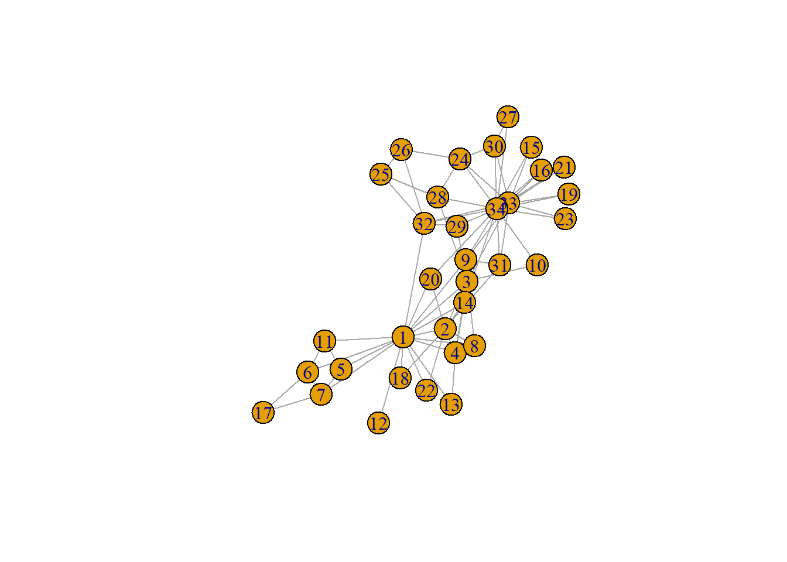
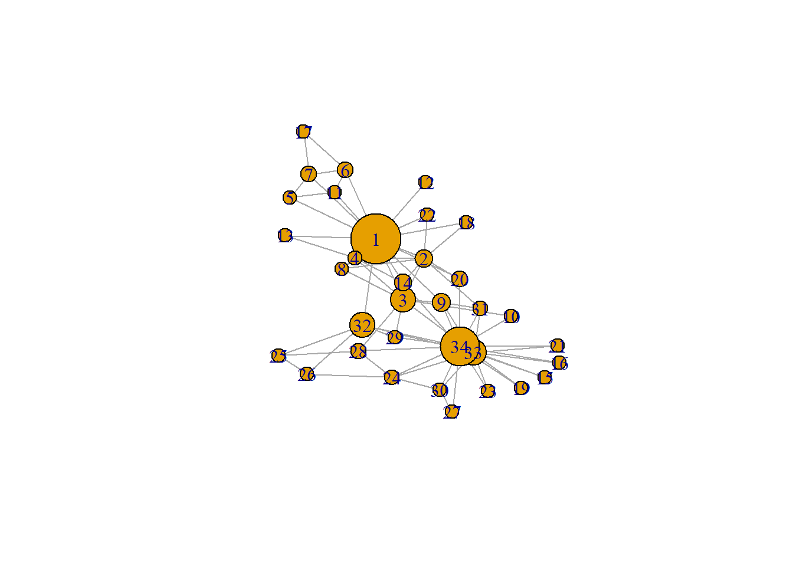
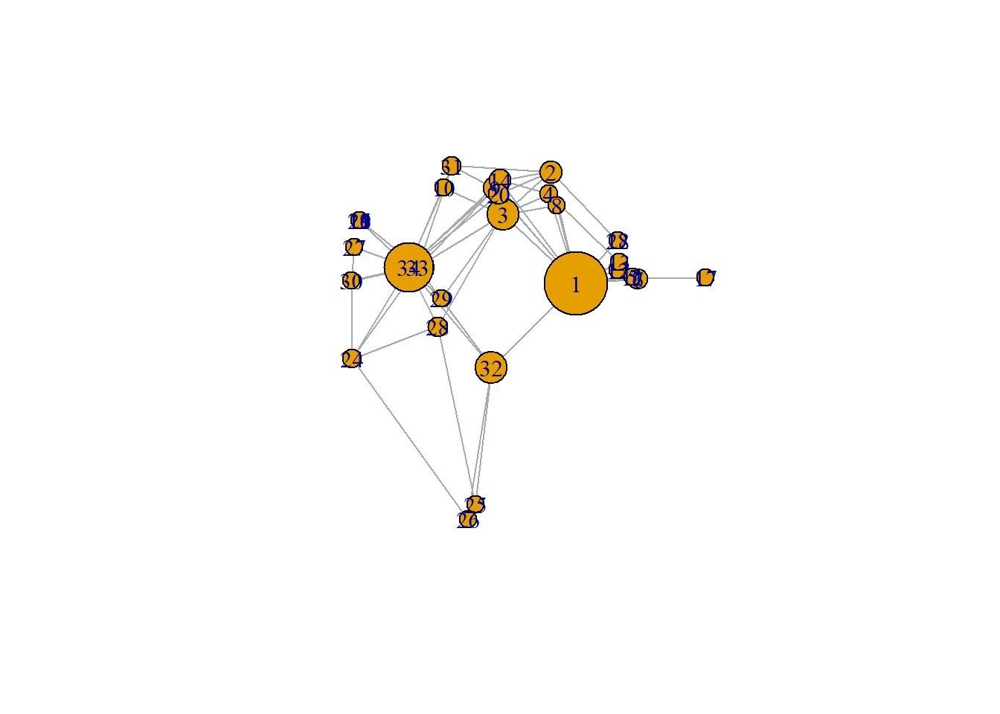
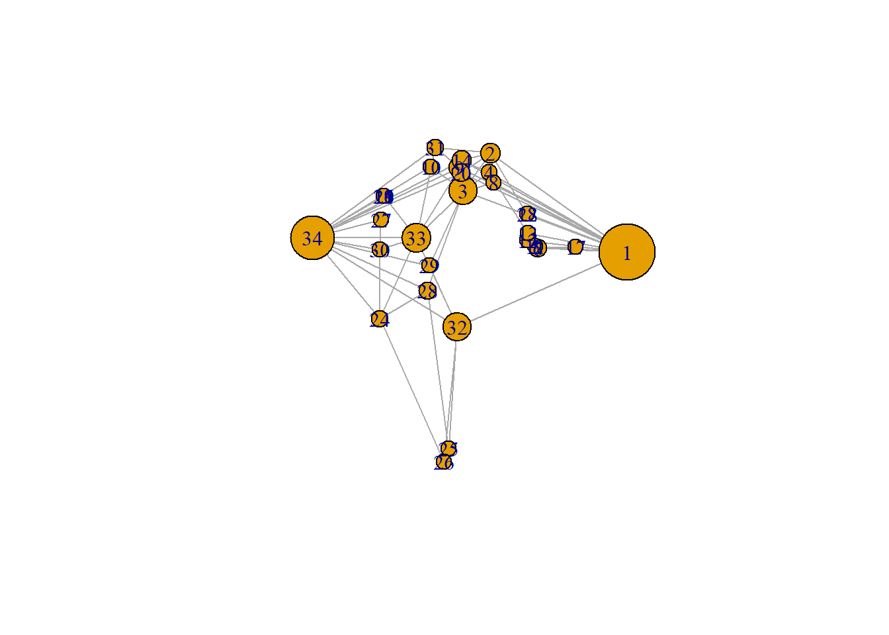
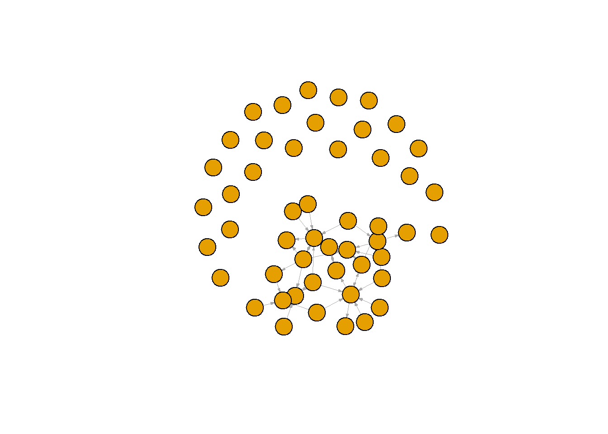
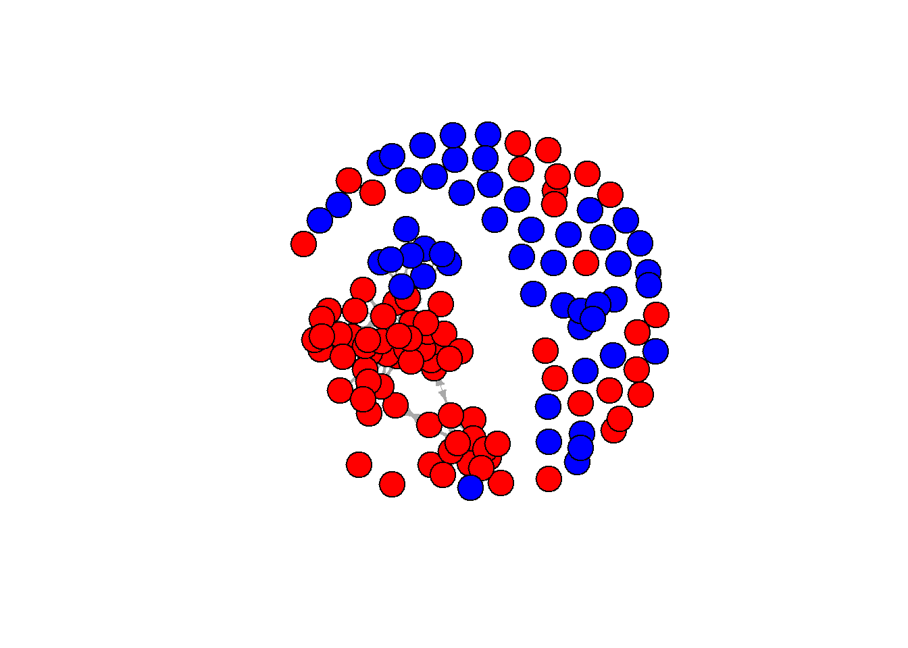
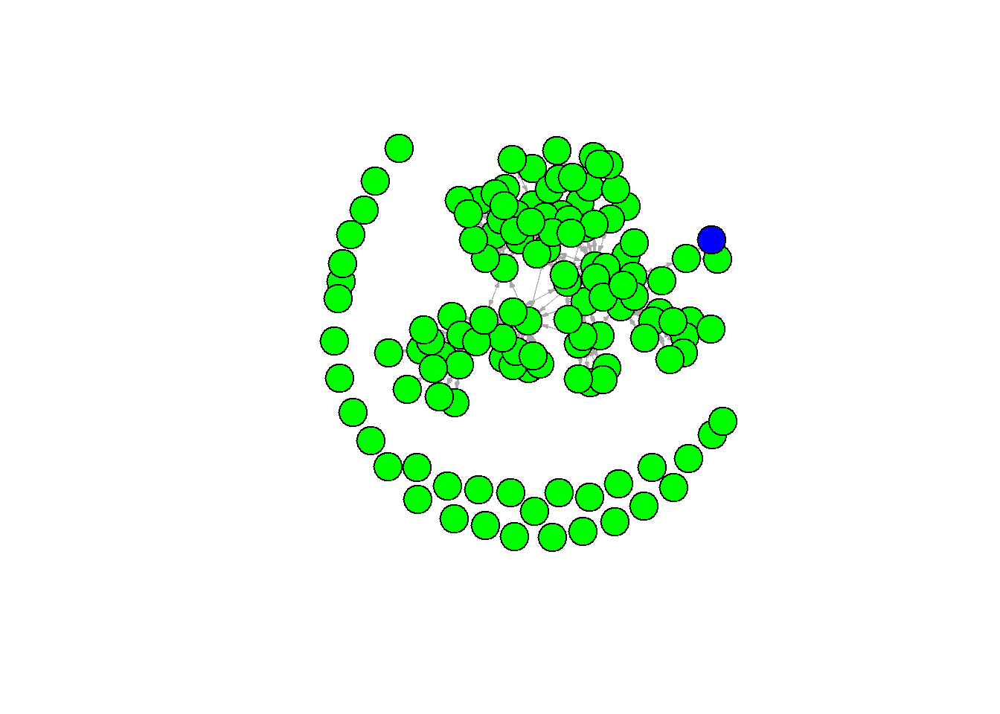

Last compiled on oktober, 2025
require(igraph)
g <- make_graph("Zachary")
plot(g)
gmat <- as_adjacency_matrix(g, type = "both", sparse = FALSE)
gmat#> [,1] [,2] [,3] [,4] [,5] [,6] [,7] [,8] [,9] [,10] [,11] [,12] [,13] [,14] [,15] [,16] [,17]
#> [1,] 0 1 1 1 1 1 1 1 1 0 1 1 1 1 0 0 0
#> [2,] 1 0 1 1 0 0 0 1 0 0 0 0 0 1 0 0 0
#> [3,] 1 1 0 1 0 0 0 1 1 1 0 0 0 1 0 0 0
#> [4,] 1 1 1 0 0 0 0 1 0 0 0 0 1 1 0 0 0
#> [5,] 1 0 0 0 0 0 1 0 0 0 1 0 0 0 0 0 0
#> [6,] 1 0 0 0 0 0 1 0 0 0 1 0 0 0 0 0 1
#> [7,] 1 0 0 0 1 1 0 0 0 0 0 0 0 0 0 0 1
#> [8,] 1 1 1 1 0 0 0 0 0 0 0 0 0 0 0 0 0
#> [9,] 1 0 1 0 0 0 0 0 0 0 0 0 0 0 0 0 0
#> [10,] 0 0 1 0 0 0 0 0 0 0 0 0 0 0 0 0 0
#> [11,] 1 0 0 0 1 1 0 0 0 0 0 0 0 0 0 0 0
#> [12,] 1 0 0 0 0 0 0 0 0 0 0 0 0 0 0 0 0
#> [13,] 1 0 0 1 0 0 0 0 0 0 0 0 0 0 0 0 0
#> [14,] 1 1 1 1 0 0 0 0 0 0 0 0 0 0 0 0 0
#> [15,] 0 0 0 0 0 0 0 0 0 0 0 0 0 0 0 0 0
#> [16,] 0 0 0 0 0 0 0 0 0 0 0 0 0 0 0 0 0
#> [17,] 0 0 0 0 0 1 1 0 0 0 0 0 0 0 0 0 0
#> [18,] 1 1 0 0 0 0 0 0 0 0 0 0 0 0 0 0 0
#> [19,] 0 0 0 0 0 0 0 0 0 0 0 0 0 0 0 0 0
#> [20,] 1 1 0 0 0 0 0 0 0 0 0 0 0 0 0 0 0
#> [21,] 0 0 0 0 0 0 0 0 0 0 0 0 0 0 0 0 0
#> [22,] 1 1 0 0 0 0 0 0 0 0 0 0 0 0 0 0 0
#> [23,] 0 0 0 0 0 0 0 0 0 0 0 0 0 0 0 0 0
#> [24,] 0 0 0 0 0 0 0 0 0 0 0 0 0 0 0 0 0
#> [25,] 0 0 0 0 0 0 0 0 0 0 0 0 0 0 0 0 0
#> [26,] 0 0 0 0 0 0 0 0 0 0 0 0 0 0 0 0 0
#> [27,] 0 0 0 0 0 0 0 0 0 0 0 0 0 0 0 0 0
#> [28,] 0 0 1 0 0 0 0 0 0 0 0 0 0 0 0 0 0
#> [29,] 0 0 1 0 0 0 0 0 0 0 0 0 0 0 0 0 0
#> [30,] 0 0 0 0 0 0 0 0 0 0 0 0 0 0 0 0 0
#> [31,] 0 1 0 0 0 0 0 0 1 0 0 0 0 0 0 0 0
#> [32,] 1 0 0 0 0 0 0 0 0 0 0 0 0 0 0 0 0
#> [33,] 0 0 1 0 0 0 0 0 1 0 0 0 0 0 1 1 0
#> [34,] 0 0 0 0 0 0 0 0 1 1 0 0 0 1 1 1 0
#> [,18] [,19] [,20] [,21] [,22] [,23] [,24] [,25] [,26] [,27] [,28] [,29] [,30] [,31] [,32]
#> [1,] 1 0 1 0 1 0 0 0 0 0 0 0 0 0 1
#> [2,] 1 0 1 0 1 0 0 0 0 0 0 0 0 1 0
#> [3,] 0 0 0 0 0 0 0 0 0 0 1 1 0 0 0
#> [4,] 0 0 0 0 0 0 0 0 0 0 0 0 0 0 0
#> [5,] 0 0 0 0 0 0 0 0 0 0 0 0 0 0 0
#> [6,] 0 0 0 0 0 0 0 0 0 0 0 0 0 0 0
#> [7,] 0 0 0 0 0 0 0 0 0 0 0 0 0 0 0
#> [8,] 0 0 0 0 0 0 0 0 0 0 0 0 0 0 0
#> [9,] 0 0 0 0 0 0 0 0 0 0 0 0 0 1 0
#> [10,] 0 0 0 0 0 0 0 0 0 0 0 0 0 0 0
#> [11,] 0 0 0 0 0 0 0 0 0 0 0 0 0 0 0
#> [12,] 0 0 0 0 0 0 0 0 0 0 0 0 0 0 0
#> [13,] 0 0 0 0 0 0 0 0 0 0 0 0 0 0 0
#> [14,] 0 0 0 0 0 0 0 0 0 0 0 0 0 0 0
#> [15,] 0 0 0 0 0 0 0 0 0 0 0 0 0 0 0
#> [16,] 0 0 0 0 0 0 0 0 0 0 0 0 0 0 0
#> [17,] 0 0 0 0 0 0 0 0 0 0 0 0 0 0 0
#> [18,] 0 0 0 0 0 0 0 0 0 0 0 0 0 0 0
#> [19,] 0 0 0 0 0 0 0 0 0 0 0 0 0 0 0
#> [20,] 0 0 0 0 0 0 0 0 0 0 0 0 0 0 0
#> [21,] 0 0 0 0 0 0 0 0 0 0 0 0 0 0 0
#> [22,] 0 0 0 0 0 0 0 0 0 0 0 0 0 0 0
#> [23,] 0 0 0 0 0 0 0 0 0 0 0 0 0 0 0
#> [24,] 0 0 0 0 0 0 0 0 1 0 1 0 1 0 0
#> [25,] 0 0 0 0 0 0 0 0 1 0 1 0 0 0 1
#> [26,] 0 0 0 0 0 0 1 1 0 0 0 0 0 0 1
#> [27,] 0 0 0 0 0 0 0 0 0 0 0 0 1 0 0
#> [28,] 0 0 0 0 0 0 1 1 0 0 0 0 0 0 0
#> [29,] 0 0 0 0 0 0 0 0 0 0 0 0 0 0 1
#> [30,] 0 0 0 0 0 0 1 0 0 1 0 0 0 0 0
#> [31,] 0 0 0 0 0 0 0 0 0 0 0 0 0 0 0
#> [32,] 0 0 0 0 0 0 0 1 1 0 0 1 0 0 0
#> [33,] 0 1 0 1 0 1 1 0 0 0 0 0 1 1 1
#> [34,] 0 1 1 1 0 1 1 0 0 1 1 1 1 1 1
#> [,33] [,34]
#> [1,] 0 0
#> [2,] 0 0
#> [3,] 1 0
#> [4,] 0 0
#> [5,] 0 0
#> [6,] 0 0
#> [7,] 0 0
#> [8,] 0 0
#> [9,] 1 1
#> [10,] 0 1
#> [11,] 0 0
#> [12,] 0 0
#> [13,] 0 0
#> [14,] 0 1
#> [15,] 1 1
#> [16,] 1 1
#> [17,] 0 0
#> [18,] 0 0
#> [19,] 1 1
#> [20,] 0 1
#> [21,] 1 1
#> [22,] 0 0
#> [23,] 1 1
#> [24,] 1 1
#> [25,] 0 0
#> [26,] 0 0
#> [27,] 0 1
#> [28,] 0 1
#> [29,] 0 1
#> [30,] 1 1
#> [31,] 1 1
#> [32,] 1 1
#> [33,] 0 1
#> [34,] 1 0# number of nodes
vcount(g)#> [1] 34# number of edges
ecount(g)#> [1] 78# changing V
V(g)$size = betweenness(g, normalized = T, directed = FALSE) * 60 + 10 #after some trial and error
plot(g, mode = "undirected")
set.seed(2345)
l <- layout_with_mds(g) #https://igraph.org/r/doc/layout_with_mds.html
plot(g, layout = l)
l #let us take a look at the coordinates#> [,1] [,2]
#> [1,] 1.070931935 -0.172458113
#> [2,] 0.732844464 0.754023309
#> [3,] 0.100582299 0.397693607
#> [4,] 0.708246655 0.570205545
#> [5,] 1.816293170 -0.120778206
#> [6,] 1.881329566 -0.135518854
#> [7,] 1.881329566 -0.135518854
#> [8,] 0.812606714 0.472619437
#> [9,] -0.003769996 0.615513628
#> [10,] -0.685680315 0.621065149
#> [11,] 1.816293170 -0.120778206
#> [12,] 1.621247830 -0.065820692
#> [13,] 1.637845123 0.001789972
#> [14,] 0.067317230 0.681421148
#> [15,] -1.796316404 0.351417630
#> [16,] -1.796316404 0.351417630
#> [17,] 2.775260452 -0.124317652
#> [18,] 1.616210024 0.182510197
#> [19,] -1.796316404 0.351417630
#> [20,] 0.048362858 0.566654982
#> [21,] -1.796316404 0.351417630
#> [22,] 1.616210024 0.182510197
#> [23,] -1.796316404 0.351417630
#> [24,] -1.891240567 -0.799574907
#> [25,] -0.258345165 -2.006346563
#> [26,] -0.360530857 -2.131642875
#> [27,] -1.865177401 0.128596564
#> [28,] -0.760226022 -0.529392331
#> [29,] -0.710979936 -0.299960128
#> [30,] -1.898426916 -0.149398746
#> [31,] -0.568691923 0.804189411
#> [32,] -0.048136037 -0.870967614
#> [33,] -1.023681000 -0.035802363
#> [34,] -1.146442924 -0.037605192l[1, 1] <- 4
l[34, 1] <- -3.5
plot(g, layout = l)
rm(list = ls())fpackage.check <- function(packages) {
lapply(packages, FUN = function(x) {
if (!require(x, character.only = TRUE)) {
install.packages(x, dependencies = TRUE)
library(x, character.only = TRUE)
}
})
}
fsave <- function(x, file = NULL, location = "./data/processed/") {
ifelse(!dir.exists("data"), dir.create("data"), FALSE)
ifelse(!dir.exists("data/processed"), dir.create("data/processed"), FALSE)
if (is.null(file))
file = deparse(substitute(x))
datename <- substr(gsub("[:-]", "", Sys.time()), 1, 8)
totalname <- paste(location, file, "_", datename, ".rda", sep = "")
save(x, file = totalname) #need to fix if file is reloaded as input name, not as x.
}
fload <- function(filename) {
load(filename)
get(ls()[ls() != "filename"])
}
fshowdf <- function(x, ...) {
knitr::kable(x, digits = 2, "html", ...) %>%
kableExtra::kable_styling(bootstrap_options = c("striped", "hover")) %>%
kableExtra::scroll_box(width = "100%", height = "300px")
}packages <- c("tidyverse", "scholar", "openalexR", "rvest", "jsonlite")
fpackage.check(packages)#> [[1]]
#> NULL
#>
#> [[2]]
#> NULL
#>
#> [[3]]
#> NULL
#>
#> [[4]]
#> NULL
#>
#> [[5]]
#> NULLlibrary(readxl)
df1 <- read_excel("./RAW data/20221219Scholarid_soc_pol.xlsx")
df2 <- read_excel("./RAW data/20240419Scholarid_soc_pol.xlsx")df22_soc <- readxl::read_xlsx("./RAW data/20221219Scholarid_soc_pol.xlsx", sheet = 1)
df22_soc$discipline <- "sociology"
df22_soc$Specialisatie <- NA
df22_pol <- readxl::read_xlsx("./RAW data/20221219Scholarid_soc_pol.xlsx", sheet = 2)
df22_pol$discipline <- "political science"
df22 <- rbind(df22_soc, df22_pol)
df22$year <- 22
df24_soc <- readxl::read_xlsx("./RAW data/20240419Scholarid_soc_pol.xlsx", sheet = 1)
df24_soc$discipline <- "sociology"
df24_soc$Specialisatie <- NA
df24_pol <- readxl::read_xlsx("./RAW data/20240419Scholarid_soc_pol.xlsx", sheet = 2)
df24_pol$discipline <- "political science"
df24 <- rbind(df24_soc, df24_pol)
df24$year <- 24
df22 <- df22 %>%
filter(!is.na(Naam)) %>%
mutate(Universiteit1 = sapply(str_split(Universiteit, "/"), "[", 1), Universiteit2 = sapply(str_split(Universiteit,
"/"), "[", 2))
# remove duplicates
df24 <- df24 %>%
filter(!is.na(Naam)) %>%
mutate(Universiteit1 = sapply(str_split(Universiteit, "/"), "[", 1), Universiteit2 = sapply(str_split(Universiteit,
"/"), "[", 2))
df_scholars <- full_join(x = df22, y = df24, by = "Naam", suffix = c(".22", ".24"))
# table(df_scholars$Universiteit.22[is.na(df_scholars$Universiteit.24)], useNA = 'always')
# table(df_scholars$Universiteit.24[is.na(df_scholars$Universiteit.22)], useNA = 'always')
# correct typos
df_scholars$Universiteit2.22[df_scholars$Naam == "David van der Duin"] <- "UvA"
df_scholars$Universiteit1.22[df_scholars$Naam == "Duygu Uysal Dincol"] <- "Koc University"
df_scholars$Universiteit2.22[df_scholars$Naam == "Duygu Uysal Dincol"] <- "UvA"
# correct the type
df_scholars <- df_scholars %>%
mutate(across(c(Universiteit1.22, Universiteit2.22, Universiteit1.24, Universiteit2.24), ~case_when(.x ==
"Uvt" ~ "UvT", .x == "UU?" ~ "UU", .x == "Leiden uni" ~ "Leiden", .x == "UvA?" ~ "UvA", .x ==
"Uva" ~ "UvA", .x == "UU?" ~ "UU", .x == "Tilburg" ~ "UvT", is.na(.x) ~ "", .default = as.character(.x))))
fshowdf(df_scholars)| Naam | Universiteit.22 | Email-adres.22 | Functie.22 | Google Scholar id.22 | discipline.22 | Specialisatie.22 | year.22 | Universiteit1.22 | Universiteit2.22 | Universiteit.24 | Email-adres.24 | Functie.24 | Google Scholar id.24 | discipline.24 | Specialisatie.24 | year.24 | Universiteit1.24 | Universiteit2.24 |
|---|---|---|---|---|---|---|---|---|---|---|---|---|---|---|---|---|---|---|
| Ece Arat | UU | e.arat@uu.nl | PhD Student | _MW2-cgAAAAJ&hl | sociology | NA | 22 | UU | NA | e.arat@uu.nl | PhD Student | _MW2-cgAAAAJ&hl | sociology | NA | 24 | |||
| Marcel Van Assen | UU | m.a.l.m.vanassen@uu.nl | Bijzonder hoogleraar | uwPhxMcAAAAJ | sociology | NA | 22 | UU | UvT | m.a.l.m.vanassen@uu.nl | Bijzonder hoogleraar | uwPhxMcAAAAJ | sociology | NA | 24 | UvT | ||
| Weverthon Barbosa Machado | UU | w.barbosamachado@uu.nl | Onderzoeker | miJiVQcAAAAJ | sociology | NA | 22 | UU | UU | w.barbosamachado@uu.nl | Onderzoeker | miJiVQcAAAAJ | sociology | NA | 24 | UU | ||
| Vardan Barsegyan | UU | v.m.barsegyan@uu.nl | Onderzoeker | yh5pBBoAAAAJ | sociology | NA | 22 | UU | NA | v.m.barsegyan@uu.nl | Onderzoeker | yh5pBBoAAAAJ | sociology | NA | 24 | |||
| Rutger Blom | UU | g.d.blom@uu.nl | Onderzoeker | RNktFGMAAAAJ | sociology | NA | 22 | UU | UU | g.d.blom@uu.nl | Onderzoeker | RNktFGMAAAAJ | sociology | NA | 24 | UU | ||
| Lute Bos | UU | l.bos@uu.nl | Docent | NA | sociology | NA | 22 | UU | UU | l.bos@uu.nl | Docent | NA | sociology | NA | 24 | UU | ||
| Anne Brons | UU | m.d.brons@uu.nl | Onderzoeker | NA | sociology | NA | 22 | UU | UU | m.d.brons@uu.nl | Onderzoeker | NA | sociology | NA | 24 | UU | ||
| Janine De Bruijn | UU | j.c.m.debruijn@uu.nl | Docent | NA | sociology | NA | 22 | UU | UU | j.c.m.debruijn@uu.nl | Docent | NA | sociology | NA | 24 | UU | ||
| Vincent Buskens | UU | v.buskens@uu.nl | Hoogleraar | ITE9bHMAAAAJ | sociology | NA | 22 | UU | UU | v.buskens@uu.nl | Hoogleraar | ITE9bHMAAAAJ | sociology | NA | 24 | UU | ||
| Tobias Cinjee | UU | t.cinjee@uu.nl | Docent | fvwZ6j4AAAAJ | sociology | NA | 22 | UU | UU | t.cinjee@uu.nl | Docent | fvwZ6j4AAAAJ | sociology | NA | 24 | UU | ||
| Rense Corten | UU | r.corten@uu.nl | Universitair hoofddocent | pehgQfIAAAAJ | sociology | NA | 22 | UU | UU | r.corten@uu.nl | Universitair hoofddocent | pehgQfIAAAAJ | sociology | NA | 24 | UU | ||
| Marleen Damman | UU | m.damman@uu.nl | Universitair docent | MEv-V_YAAAAJ | sociology | NA | 22 | UU | UU | m.damman@uu.nl | Universitair docent | MEv-V_YAAAAJ | sociology | NA | 24 | UU | ||
| Lucas Drouhot | UU | l.g.m.drouhot@uu.nl | Universitair docent | lDKj5RAAAAAJ | sociology | NA | 22 | UU | UU | l.g.m.drouhot@uu.nl | Universitair docent | lDKj5RAAAAAJ | sociology | NA | 24 | UU | ||
| Christian Fang | UU | c.fang@uu.nl | PhD Student | FePrRkEAAAAJ | sociology | NA | 22 | UU | NA | c.fang@uu.nl | PhD Student | FePrRkEAAAAJ | sociology | NA | 24 | |||
| Paula Hoffmann | UU | p.m.hoffmann@uu.nl | PhD Student | NA | sociology | NA | 22 | UU | UU | p.m.hoffmann@uu.nl | PhD Student | NA | sociology | NA | 24 | UU | ||
| Eva Jaspers | UU | e.jaspers@uu.nl | Universitair hoofddocent | Ss6I3eAAAAAJ | sociology | NA | 22 | UU | UU | e.jaspers@uu.nl | Universitair hoofddocent | Ss6I3eAAAAAJ | sociology | NA | 24 | UU | ||
| Rita Jiao | UU | r.jiao@uu.nl | PhD Student | NA | sociology | NA | 22 | UU | NA | r.jiao@uu.nl | PhD Student | NA | sociology | NA | 24 | |||
| Matthias Kern | UU | matthiasrobert.kern@uni.lu | Onderzoeker | rsKP_ckAAAAJ | sociology | NA | 22 | UU | NA | matthiasrobert.kern@uni.lu | Onderzoeker | rsKP_ckAAAAJ | sociology | NA | 24 | |||
| Antonie Knigge | UU | a.knigge@uu.nl | Universitair docent | rYbhEhgAAAAJ | sociology | NA | 22 | UU | UU | a.knigge@uu.nl | Universitair docent | rYbhEhgAAAAJ | sociology | NA | 24 | UU | ||
| David De Kort | UU | d.dekort@uu.nl | Onderzoeks- en onderwijsmedewerker | NA | sociology | NA | 22 | UU | UU | d.dekort@uu.nl | Promovendus | NA | sociology | NA | 24 | UU | ||
| Lea Kroner | UU | NA | PhD Student | NA | sociology | NA | 22 | UU | UU | l.kroner@uu.nl | PhD Student | NA | sociology | NA | 24 | UU | ||
| Mathijs Kros | UU | m.kros@uu.nl | Universitair docent | fIg-aZYAAAAJ | sociology | NA | 22 | UU | UU | m.kros@uu.nl | Universitair docent | fIg-aZYAAAAJ | sociology | NA | 24 | UU | ||
| Wouter Kwint | UU | NA | Docent | NA | sociology | NA | 22 | UU | NA | NA | Docent | NA | sociology | NA | 24 | |||
| Marco Van Leeuwen | UU | m.h.d.vanleeuwen@uu.nl | Hoogleraar | Yvl_EKUAAAAJ | sociology | NA | 22 | UU | UU | m.h.d.vanleeuwen@uu.nl | Hoogleraar | Yvl_EKUAAAAJ | sociology | NA | 24 | UU | ||
| Marjan Van Lier | UU | m.j.l.vanlier@uu.nl | Docent | NA | sociology | NA | 22 | UU | NA | m.j.l.vanlier@uu.nl | Docent | NA | sociology | NA | 24 | |||
| Tanja Van Der Lippe | UU | t.vanderlippe@uu.nl | Hoogleraar | Rn56SIMAAAAJ | sociology | NA | 22 | UU | UU | t.vanderlippe@uu.nl | Hoogleraar | Rn56SIMAAAAJ | sociology | NA | 24 | UU | ||
| Ineke Maas | UU/UvA | i.maas@uu.nl | Universitair hoofddocent | lHZlqNsAAAAJ | sociology | NA | 22 | UU | UvA | UU/UvA | i.maas@uu.nl | Universitair hoofddocent | lHZlqNsAAAAJ | sociology | NA | 24 | UU | UvA |
| Ineke Maas | UU/UvA | i.maas@uu.nl | Universitair hoofddocent | lHZlqNsAAAAJ | sociology | NA | 22 | UU | UvA | VU | w.a.f.maas@vu.nl | Bijzonder hoogleraar | lHZlqNsAAAAJ | sociology | NA | 24 | VU | |
| Ana Macanovic | UU | a.macanovic@uu.nl | PhD Student | s5D67kwAAAAJ | sociology | NA | 22 | UU | RU | a.macanovic@ru.nl | Onderzoeker | s5D67kwAAAAJ | sociology | NA | 24 | RU | ||
| Luuk Mandemakers | UU | l.mandemakers@uu.nl | Docent | NA | sociology | NA | 22 | UU | UU | l.mandemakers@uu.nl | Docent | KmL7ZtcAAAAJ | sociology | NA | 24 | UU | ||
| Luuk Mandemakers | UU | l.mandemakers@uu.nl | Docent | NA | sociology | NA | 22 | UU | NA | NA | NA | NA | sociology | NA | 24 | |||
| Thomas Martens | UU | t.a.m.martens@uu.nl | Medewerker kennisvalorisatie | NA | sociology | NA | 22 | UU | UU | t.a.m.martens@uu.nl | Medewerker kennisvalorisatie | NA | sociology | NA | 24 | UU | ||
| Deni Mazrekaj | UU | d.mazrekaj@uu.nl | Universitair docent | 3ZgUilQAAAAJ | sociology | NA | 22 | UU | UU | d.mazrekaj@uu.nl | Universitair docent | 3ZgUilQAAAAJ | sociology | NA | 24 | UU | ||
| Christof Nagel | UU | c.r.e.nagel@uu.nl | Onderzoeker | yHMd71wAAAAJ | sociology | NA | 22 | UU | University of Cologne | c.r.e.nagel@uu.nl | Onderzoeker | yHMd71wAAAAJ | sociology | NA | 24 | University of Cologne | ||
| Huyen Nguyen | UU | t.t.h.nguyen@uu.nl | Onderzoeker | NA | sociology | NA | 22 | UU | UU | t.t.h.nguyen@uu.nl | Onderzoeker | nslVCCAAAAAJ | sociology | NA | 24 | UU | ||
| Amy Nivette | UU | a.e.nivette@uu.nl | Universitair hoofddocent | CeM-glIAAAAJ | sociology | NA | 22 | UU | UU | a.e.nivette@uu.nl | Universitair hoofddocent | CeM-glIAAAAJ | sociology | NA | 24 | UU | ||
| Amina Op De Weegh | UU | l.a.g.opdeweegh1@uu.nl | PhD Student | NA | sociology | NA | 22 | UU | UU | l.a.g.opdeweegh1@uu.nl | PhD Student | NA | sociology | NA | 24 | UU | ||
| Kasper Otten | UU | k.d.otten@uu.nl | PhD Student | LCdW9KIAAAAJ | sociology | NA | 22 | UU | NA | k.d.otten@uu.nl | PhD Student | LCdW9KIAAAAJ | sociology | NA | 24 | |||
| Jiamin Ou | UU | NA | Universitair docent | O2abZVMAAAAJ | sociology | NA | 22 | UU | UU | NA | Universitair docent | O2abZVMAAAAJ | sociology | NA | 24 | UU | ||
| Paulina Pankowska | UU | p.k.pankowska@uu.nl | Universitair docent | mBpVfC0AAAAJ | sociology | NA | 22 | UU | UU | p.k.pankowska@uu.nl | Universitair docent | mBpVfC0AAAAJ | sociology | NA | 24 | UU | ||
| Anne-Rigt Poortman | UU | a.poortman@uu.nl | Hoogleraar + Universitair hoofddocent | fuS31Y0AAAAJ | sociology | NA | 22 | UU | UU | a.poortman@uu.nl | Hoogleraar + Universitair hoofddocent | fuS31Y0AAAAJ | sociology | NA | 24 | UU | ||
| Wojtek Przepiorka | UU | w.przepiorka@uu.nl | Universitair hoofddocent | uhWOKsMAAAAJ | sociology | NA | 22 | UU | UU | w.przepiorka@uu.nl | Universitair hoofddocent | uhWOKsMAAAAJ | sociology | NA | 24 | UU | ||
| Anne Van Der Put | UU | a.c.vanderput@uu.nl | PhD Student | 49_27usAAAAJ | sociology | NA | 22 | UU | UU | a.c.vanderput@uu.nl | PhD Student | 49_27usAAAAJ | sociology | NA | 24 | UU | ||
| Werner Raub | UU | w.raub@uu.nl | Emeritus hoogleraar | faxhoXQAAAAJ | sociology | NA | 22 | UU | UU | w.raub@uu.nl | Emeritus hoogleraar | faxhoXQAAAAJ | sociology | NA | 24 | UU | ||
| Stijn Ruiter | UU | s.ruiter@uu.nl | Bijzonder hoogleraar | GCHDgZcAAAAJ | sociology | NA | 22 | UU | UU | s.ruiter@uu.nl | Bijzonder hoogleraar | GCHDgZcAAAAJ | sociology | NA | 24 | UU | ||
| Philipp Schneider | UU | p.t.schneider@uu.nl | PhD Student | NA | sociology | NA | 22 | UU | NA | p.t.schneider@uu.nl | PhD Student | NA | sociology | NA | 24 | |||
| Jan-Willem Simons | UU | j.g.simons@uu.nl | PhD Student | NA | sociology | NA | 22 | UU | UU | j.g.simons@uu.nl | PhD Student | oQ97tq4AAAAJ | sociology | NA | 24 | UU | ||
| Sanjana Singh | UU | s.singh@uu.nl | PhD Student | NA | sociology | NA | 22 | UU | UU | s.singh@uu.nl | PhD Student | q3sfa_kAAAAJ | sociology | NA | 24 | UU | ||
| Jos Slabbekoorn | UU | j.slabbekoorn@uu.nl | PhD Student | NA | sociology | NA | 22 | UU | UU | j.slabbekoorn@uu.nl | PhD Student | eq5s9GMAAAAJ | sociology | NA | 24 | UU | ||
| Tali Spiegel | UU | t.spiegel@uu.nl | Universitair docent | NA | sociology | NA | 22 | UU | UU | t.spiegel@uu.nl | Universitair docent | D40HE-wAAAAJ | sociology | NA | 24 | UU | ||
| Kim Stienstra | UU | l.k.stienstra@uu.nl | PhD Student | JritAXEAAAAJ | sociology | NA | 22 | UU | NA | l.k.stienstra@uu.nl | PhD Student | JritAXEAAAAJ | sociology | NA | 24 | |||
| Frank Van Tubergen | UU | f.vantubergen@uu.nl | Hoogleraar | YU1DcNIAAAAJ | sociology | NA | 22 | UU | UU | f.vantubergen@uu.nl | Hoogleraar | YU1DcNIAAAAJ | sociology | NA | 24 | UU | ||
| Isabelle Van Der Vegt | UU | i.w.j.vandervegt@uu.nl | Universitair docent | nEoRK7YAAAAJ | sociology | NA | 22 | UU | UU | i.w.j.vandervegt@uu.nl | Universitair docent | nEoRK7YAAAAJ | sociology | NA | 24 | UU | ||
| Cok Vrooman | UU | j.c.vrooman@uu.nl | Bijzonder hoogleraar | sweM218AAAAJ | sociology | NA | 22 | UU | UU | j.c.vrooman@uu.nl | Bijzonder hoogleraar | sweM218AAAAJ | sociology | NA | 24 | UU | ||
| Linde Vromans | UU | L.E.M.Vromans@tilburguniversity.edu | Docent | NA | sociology | NA | 22 | UU | UU | L.E.M.Vromans@tilburguniversity.edu | Docent | NA | sociology | NA | 24 | UU | ||
| Jeroen Weesie | UU | j.weesie@uu.nl | Universitair hoofddocent | KEh4ypEAAAAJ | sociology | NA | 22 | UU | UU? | j.weesie@uu.nl | Universitair hoofddocent | KEh4ypEAAAAJ | sociology | NA | 24 | UU | ||
| Kevin Wittenberg | UU | k.wittenberg@uu.nl | PhD Student | NA | sociology | NA | 22 | UU | UU | k.wittenberg@uu.nl | PhD Student | 7vaF9_EAAAAJ | sociology | NA | 24 | UU | ||
| Nick Wuestenenk | UU | n.h.wuestenenk@uu.nl | PhD Student | chQfyGsAAAAJ | sociology | NA | 22 | UU | NA | n.h.wuestenenk@uu.nl | PhD Student | chQfyGsAAAAJ | sociology | NA | 24 | |||
| Marjolein Bredie | UU | Ondersteunend personeel, dus niet verder uitgewerkt | NA | NA | sociology | NA | 22 | UU | UU | Ondersteunend personeel, dus niet verder uitgewerkt | NA | NA | sociology | NA | 24 | UU | ||
| Sofie Van De Calseijde | UU | NA | NA | NA | sociology | NA | 22 | UU | UU | NA | NA | NA | sociology | NA | 24 | UU | ||
| Annemarie Houkes | UU | NA | NA | NA | sociology | NA | 22 | UU | UU | NA | NA | NA | sociology | NA | 24 | UU | ||
| Ellen Janssen | UU | NA | NA | NA | sociology | NA | 22 | UU | UU | NA | NA | NA | sociology | NA | 24 | UU | ||
| Pim Sangers | UU | NA | NA | NA | sociology | NA | 22 | UU | UU | NA | NA | NA | sociology | NA | 24 | UU | ||
| Aleida Sjardijn | UU | NA | NA | NA | sociology | NA | 22 | UU | UU | NA | NA | NA | sociology | NA | 24 | UU | ||
| Ronald Batenburg | RU | ronald.batenburg@ru.nl | Hoogleraar | UK7nVSEAAAAJ | sociology | NA | 22 | RU | RU | ronald.batenburg@ru.nl | Hoogleraar | UK7nVSEAAAAJ | sociology | NA | 24 | RU | ||
| Katia Begall | RU | katia.begall@ru.nl | Universitair docent | e7zfTqMAAAAJ | sociology | NA | 22 | RU | RU | katia.begall@ru.nl | Universitair docent | e7zfTqMAAAAJ | sociology | NA | 24 | RU | ||
| Hidde Bekhuis | RU | hidde.bekhuis@ru.nl | Associate researcher | Q4saWX8AAAAJ | sociology | NA | 22 | RU | RU | hidde.bekhuis@ru.nl | Associate researcher | Q4saWX8AAAAJ | sociology | NA | 24 | RU | ||
| Lonneke van den Berg | RU | lonneke.vandenberg@ru.nl | Postdoc | vzBNQ1kAAAAJ | sociology | NA | 22 | RU | NA | lonneke.vandenberg@ru.nl | Postdoc | vzBNQ1kAAAAJ | sociology | NA | 24 | |||
| Lieselotte Blommaert | RU | lieselotte.blommaert@ru.nl | Universitair docent | RG54uasAAAAJ | sociology | NA | 22 | RU | RU | lieselotte.blommaert@ru.nl | Universitair docent | RG54uasAAAAJ | sociology | NA | 24 | RU | ||
| Rob Eisinga | RU | rob.eisinga@ru.nl | Universitair docent | GDHdsXAAAAAJ | sociology | NA | 22 | RU | RU | rob.eisinga@ru.nl | Universitair docent | GDHdsXAAAAAJ | sociology | NA | 24 | RU | ||
| Maurice Gesthuizen | RU | maurice.gesthuizen@ru.nl | Universitair docent | n6hiblQAAAAJ | sociology | NA | 22 | RU | RU | maurice.gesthuizen@ru.nl | Universitair docent | n6hiblQAAAAJ | sociology | NA | 24 | RU | ||
| Nella Geurts | RU | nella.geurts@ru.nl | Postdoc | VCTvbTkAAAAJ | sociology | NA | 22 | RU | RU | nella.geurts@ru.nl | Postdoc | VCTvbTkAAAAJ | sociology | NA | 24 | RU | ||
| Saskia Glas | RU | saskia.glas@ru.nl | Universitair docent | ZMc0j2YAAAAJ | sociology | NA | 22 | RU | RU | saskia.glas@ru.nl | Universitair docent | ZMc0j2YAAAAJ | sociology | NA | 24 | RU | ||
| Margriet van Hek | RU | margriet.vanhek@ru.nl | Universitair docent | ZvLlx2EAAAAJ | sociology | NA | 22 | RU | RU | margriet.vanhek@ru.nl | Universitair docent | ZvLlx2EAAAAJ | sociology | NA | 24 | RU | ||
| Remco Hoekman | RU | remco.hoekman@ru.nl | Senior Researcher | LsMimOEAAAAJ | sociology | NA | 22 | RU | NA | remco.hoekman@ru.nl | Senior Researcher | LsMimOEAAAAJ | sociology | NA | 24 | |||
| Bas Hofstra | RU | bas.hofstra@ru.nl | Universitair docent | Nx7pDywAAAAJ | sociology | NA | 22 | RU | RU | bas.hofstra@ru.nl | Universitair docent | Nx7pDywAAAAJ | sociology | NA | 24 | RU | ||
| Judith Koops | RU | judith.koops@ru.nl | Postdoc | kLiOlQoAAAAJ | sociology | NA | 22 | RU | NA | judith.koops@ru.nl | Postdoc | kLiOlQoAAAAJ | sociology | NA | 24 | |||
| Gerbert Kraaykamp | RU | gerbert.kraaykamp@ru.nl | Hoogleraar | l8aM4jAAAAAJ | sociology | NA | 22 | RU | RU | gerbert.kraaykamp@ru.nl | Hoogleraar | l8aM4jAAAAAJ | sociology | NA | 24 | RU | ||
| Roza Meuleman | RU | roza.meuleman@ru.nl | Universitair docent | iKs_5WkAAAAJ | sociology | NA | 22 | RU | RU | roza.meuleman@ru.nl | Universitair docent | iKs_5WkAAAAJ | sociology | NA | 24 | RU | ||
| Michael Savelkoul | RU | michael.savelkoul@ru.nl | Universitair docent | _f3krXUAAAAJ | sociology | NA | 22 | RU | RU | michael.savelkoul@ru.nl | Universitair docent | _f3krXUAAAAJ | sociology | NA | 24 | RU | ||
| Peer Scheepers | RU | peer.scheepers@ru.nl | Hoogleraar | hPeXxvEAAAAJ | sociology | NA | 22 | RU | RU | peer.scheepers@ru.nl | Hoogleraar | hPeXxvEAAAAJ | sociology | NA | 24 | RU | ||
| Niels Spierings | RU | niels.spierings@ru.nl | Universitair hoofddocent | cy3Ye6sAAAAJ | sociology | NA | 22 | RU | RU | niels.spierings@ru.nl | Hoogleraar | cy3Ye6sAAAAJ | sociology | NA | 24 | RU | ||
| Jochem Tolsma | RU/RUG | jochem.tolsma@ru.nl | Hoogleraar | Iu23-90AAAAJ | sociology | NA | 22 | RU | RUG | RU/RUG | jochem.tolsma@ru.nl | Bijzonder hoogleraar | Iu23-90AAAAJ | sociology | NA | 24 | RU | RUG |
| Ellen Verbakel | RU | ellen.verbakel@ru.nl | Hoogleraar | w2McVJAAAAAJ | sociology | NA | 22 | RU | RU | ellen.verbakel@ru.nl | Hoogleraar | w2McVJAAAAAJ | sociology | NA | 24 | RU | ||
| Mark Visser | RU | mark.visser@ru.nl | Universitair docent | ItITloQAAAAJ | sociology | NA | 22 | RU | RU | mark.visser@ru.nl | Universitair docent | ItITloQAAAAJ | sociology | NA | 24 | RU | ||
| Maarten Wolbers | RU | maarten.wolbers@ru.nl | Hoogleraar | TqKrXnMAAAAJ | sociology | NA | 22 | RU | RU | maarten.wolbers@ru.nl | Hoogleraar | TqKrXnMAAAAJ | sociology | NA | 24 | RU | ||
| Carlijn Bussemakers | RU | carlijn.bussemakers@ru.nl | PhD Student | bDPtkIoAAAAJ | sociology | NA | 22 | RU | RU | carlijn.bussemakers@ru.nl | PhD Student | bDPtkIoAAAAJ | sociology | NA | 24 | RU | ||
| Rob Franken | RU | NA | PhD Student | NA | sociology | NA | 22 | RU | RU | rob.franken@ru.nl | PhD Student | 9515CSsAAAAJ | sociology | NA | 24 | RU | ||
| Mustafa Firat | RU | mustafa.firat@ru.nl | PhD Student | rrh0V7IAAAAJ | sociology | NA | 22 | RU | RU | mustafa.firat@ru.nl | PhD Student | rrh0V7IAAAAJ | sociology | NA | 24 | RU | ||
| Aysegül Güneyli | RU | NA | PhD Student | NA | sociology | NA | 22 | RU | RU | ayseguel.gueneyli@ru.nl | PhD Student | NA | sociology | NA | 24 | RU | ||
| Inge Hendriks | RU | inge.hendriks@ru.nl | PhD Student | NA | sociology | NA | 22 | RU | NA | inge.hendriks@ru.nl | PhD Student | NA | sociology | NA | 24 | |||
| Thijmen Jeroense | RU | thijmen.jeroense@ru.nl | PhD Student | izq-KNUAAAAJ | sociology | NA | 22 | RU | RU | thijmen.jeroense@ru.nl | PhD Student | izq-KNUAAAAJ | sociology | NA | 24 | RU | ||
| Rachel Kollar | RU | NA | PhD Student | b96_CCUAAAAJ | sociology | NA | 22 | RU | RU | rachel.kollar@ru.nl | PhD Student | b96_CCUAAAAJ | sociology | NA | 24 | RU | ||
| Nik Linders | RU | nik.linders@ru.nl | PhD Student | NA | sociology | NA | 22 | RU | RU | nik.linders@ru.nl | PhD Student | rAS3p7cAAAAJ | sociology | NA | 24 | RU | ||
| Renae Loh | RU | renae.loh@ru.nl | PhD Student | tFaMPOQAAAAJ | sociology | NA | 22 | RU | RU | renae.loh@ru.nl | PhD Student | tFaMPOQAAAAJ | sociology | NA | 24 | RU | ||
| Maikel Meijeren | RU | maikel.meijeren@ru.nl | PhD Student | NA | sociology | NA | 22 | RU | RU | maikel.meijeren@ru.nl | PhD Student | QiicoAcAAAAJ | sociology | NA | 24 | RU | ||
| Carly van Mensvoort | RU | carly.vanmensvoort@ru.nl | PhD Student | z6iMs-UAAAAJ | sociology | NA | 22 | RU | NA | carly.vanmensvoort@ru.nl | PhD Student | z6iMs-UAAAAJ | sociology | NA | 24 | |||
| Anne Maaike Mulders | RU | annemaaike.mulders@ru.nl | PhD Student | NA | sociology | NA | 22 | RU | RU | annemaaike.mulders@ru.nl | PhD Student | NA | sociology | NA | 24 | RU | ||
| Katrin Müller | RU | katrin.müller@ru.nl | PhD Student | NA | sociology | NA | 22 | RU | RU | katrin.müller@ru.nl | PhD Student | NA | sociology | NA | 24 | RU | ||
| Klara Raiber | RU | klara.raiber@ru.nl | PhD Student | xE65HUcAAAAJ | sociology | NA | 22 | RU | RU | klara.raiber@ru.nl | Universitair docent | xE65HUcAAAAJ | sociology | NA | 24 | RU | ||
| Marlou Ramaekers | RU | marlou.ramaekers@ru.nl | PhD Student | fp99JAQAAAAJ | sociology | NA | 22 | RU | RU | marlou.ramaekers@ru.nl | PhD Student | fp99JAQAAAAJ | sociology | NA | 24 | RU | ||
| Sara Wiertsema | RU | NA | PhD Student | wgQQD6kAAAAJ | sociology | NA | 22 | RU | RU | sara.wiertsema@ru.nl | PhD Student | wgQQD6kAAAAJ | sociology | NA | 24 | RU | ||
| Janos Betko | RU | janos.betko@ru.nl | External Phd | Cvdrl6AAAAAJ | sociology | NA | 22 | RU | NA | janos.betko@ru.nl | External Phd | Cvdrl6AAAAAJ | sociology | NA | 24 | |||
| Jansje van Middendorp | RU | jansje.vanmiddendorp@ru.nl | External Phd | gs0li6MAAAAJ | sociology | NA | 22 | RU | NA | jansje.vanmiddendorp@ru.nl | External Phd | gs0li6MAAAAJ | sociology | NA | 24 | |||
| Elize Vis | RU | NA | External Phd | NA | sociology | NA | 22 | RU | RU | elize.vis@ru.nl | External Phd | NA | sociology | NA | 24 | RU | ||
| Tijmen Weber | RU | tijmen.weber@ru.nl | External Phd | KfLALRIAAAAJ | sociology | NA | 22 | RU | RU | tijmen.weber@ru.nl | External Phd | KfLALRIAAAAJ | sociology | NA | 24 | RU | ||
| Elissa El Khawli | RU | NA | Guest Researcher | 2wDZZbsAAAAJ | sociology | NA | 22 | RU | NA | NA | Guest Researcher | 2wDZZbsAAAAJ | sociology | NA | 24 | |||
| Carl Sterkens | RU | carl.sterkens@ru.nl | Guest Researcher | NA | sociology | NA | 22 | RU | NA | carl.sterkens@ru.nl | Guest Researcher | NA | sociology | NA | 24 | |||
| Paul Vermeer | RU | paul.vermeer@ru.nl | Guest Researcher | NA | sociology | NA | 22 | RU | NA | paul.vermeer@ru.nl | Guest Researcher | NA | sociology | NA | 24 | |||
| Malou Grubben | RU | NA | Other researcher | NA | sociology | NA | 22 | RU | NA | NA | Other researcher | NA | sociology | NA | 24 | |||
| Danelien van Aalst | RUG | d.a.e.van.aalst@rug.nl | PhD Student | I0-TFHcAAAAJ | sociology | NA | 22 | RUG | RUG | d.a.e.van.aalst@rug.nl | PhD Student | I0-TFHcAAAAJ | sociology | NA | 24 | RUG | ||
| Gabriël Anthonio | RUG | g.g.anthonio@rug.nl | Bijzonder hoogleraar | NA | sociology | NA | 22 | RUG | RUG | g.g.anthonio@rug.nl | Bijzonder hoogleraar | NA | sociology | NA | 24 | RUG | ||
| Dieko Bakker | RUG | d.m.bakker@rug.nl | Postdoc | why4GYsAAAAJ | sociology | NA | 22 | RUG | RUG | d.m.bakker@rug.nl | Postdoc | why4GYsAAAAJ | sociology | NA | 24 | RUG | ||
| Wike Been | RUG | wike.been@rug.nl | Universitair docent | gsVCXC8AAAAJ | sociology | NA | 22 | RUG | RUG | wike.been@rug.nl | Universitair docent | gsVCXC8AAAAJ | sociology | NA | 24 | RUG | ||
| Sanne Berends | RUG | s.m.berends@rug.nl | Datamanager | NA | sociology | NA | 22 | RUG | RUG | s.m.berends@rug.nl | Datamanager | NA | sociology | NA | 24 | RUG | ||
| Edgar de Bie | RUG | e.f.a.e.de.bie@rug.nl | NA | NA | sociology | NA | 22 | RUG | RUG | e.f.a.e.de.bie@rug.nl | NA | NA | sociology | NA | 24 | RUG | ||
| A.B. Bieleman | RUG | a.b.bieleman@rug.nl | NA | NA | sociology | NA | 22 | RUG | NA | NA | NA | NA | NA | NA | NA | |||
| Basak Bilecen | RUG | b.bilecen@rug.nl | Universitair hoofddocent | wyOyVPMAAAAJ | sociology | NA | 22 | RUG | RUG | b.bilecen@rug.nl | Universitair hoofddocent | wyOyVPMAAAAJ | sociology | NA | 24 | RUG | ||
| Rie Bosman | RUG | m.h.bosman@rug.nl | Docent | NA | sociology | NA | 22 | RUG | RUG | m.h.bosman@rug.nl | Docent | NA | sociology | NA | 24 | RUG | ||
| Daniel Robert Cowen | RUG | d.r.cowen@rug.nl | PhD Student | NA | sociology | NA | 22 | RUG | RUG | d.r.cowen@rug.nl | PhD Student | NA | sociology | NA | 24 | RUG | ||
| M.M Cuperus | RUG | m.m.cuperus@rug.nl | NA | NA | sociology | NA | 22 | RUG | RUG | m.m.cuperus@rug.nl | NA | NA | sociology | NA | 24 | RUG | ||
| Jacob Dijkstra | RUG | j.dijkstra@rug.nl | Universitair hoofddocent | 8vnkpwkAAAAJ | sociology | NA | 22 | RUG | RUG | j.dijkstra@rug.nl | Universitair hoofddocent | 8vnkpwkAAAAJ | sociology | NA | 24 | RUG | ||
| Jan Kornelis Dijkstra | RUG | jan.dijkstra@rug.nl | Universitair hoofddocent | hui_lugAAAAJ | sociology | NA | 22 | RUG | RUG | jan.dijkstra@rug.nl | Universitair hoofddocent | hui_lugAAAAJ | sociology | NA | 24 | RUG | ||
| Z Dong | RUG | z.dong@rug.nl | PhD Student | NA | sociology | NA | 22 | RUG | RUG | z.dong@rug.nl | PhD Student | 62T_2nwAAAAJ | sociology | NA | 24 | RUG | ||
| Marijtje van Duijn | RUG | m.a.j.van.duijn@rug.nl | Hoogleraar | 6U23feoAAAAJ | sociology | NA | 22 | RUG | RUG | m.a.j.van.duijn@rug.nl | Hoogleraar | 6U23feoAAAAJ | sociology | NA | 24 | RUG | ||
| Thomas Feliciani | RUG | t.feliciani@rug.nl | PhD Student | YuAjBUEAAAAJ | sociology | NA | 22 | RUG | RUG | t.feliciani@rug.nl | PhD Student | YuAjBUEAAAAJ | sociology | NA | 24 | RUG | ||
| Andreas Flache | RUG | a.flache@rug.nl | Hoogleraar | dt9jPJ0AAAAJ | sociology | NA | 22 | RUG | RUG | a.flache@rug.nl | Hoogleraar | dt9jPJ0AAAAJ | sociology | NA | 24 | RUG | ||
| Vincenz Frey | RUG | v.c.frey@rug.nl | Universitair docent | OLa-t0IAAAAJ | sociology | NA | 22 | RUG | RUG | v.c.frey@rug.nl | Universitair docent | OLa-t0IAAAAJ | sociology | NA | 24 | RUG | ||
| Anne Gauthier | RUG | a.m.h.gauthier@rug.nl | Honorary professor | Um3_WggAAAAJ | sociology | NA | 22 | RUG | RUG | a.m.h.gauthier@rug.nl | Honorary professor | Um3_WggAAAAJ | sociology | NA | 24 | RUG | ||
| Marieke van Gerner-Haan | RUG | marieke.haan@rug.nl | Universitair docent | qTbDPO4AAAAJ | sociology | NA | 22 | RUG | RUG | marieke.haan@rug.nl | Universitair docent | qTbDPO4AAAAJ | sociology | NA | 24 | RUG | ||
| Francesca Giardini | RUG | f.giardini@rug.nl | Universitair hoofddocent | wO_7IPAAAAAJ | sociology | NA | 22 | RUG | RUG | f.giardini@rug.nl | Universitair hoofddocent | wO_7IPAAAAAJ | sociology | NA | 24 | RUG | ||
| Arie Glebbeek | RUG | a.c.glebbeek@rug.nl | Universitair hoofddocent | Shb5DfsAAAAJ | sociology | NA | 22 | RUG | RUG | a.c.glebbeek@rug.nl | Universitair hoofddocent | Shb5DfsAAAAJ | sociology | NA | 24 | RUG | ||
| Thecla Goossens | RUG | t.l.l.goossens@rug.nl | PhD Student | NA | sociology | NA | 22 | RUG | RUG | t.l.l.goossens@rug.nl | PhD Student | NA | sociology | NA | 24 | RUG | ||
| Rolf Granholm | RUG | r.l.granholm@rug.nl | PhD Student | NA | sociology | NA | 22 | RUG | RUG | r.l.granholm@rug.nl | PhD Student | NA | sociology | NA | 24 | RUG | ||
| Minke Hajer | Universita degli studi di Milano | m.h.j.hajer@rug.nl | Postdoc | J_M6iK0AAAAJ | sociology | NA | 22 | Universita degli studi di Milano | Universita degli studi di Milano | m.h.j.hajer@rug.nl | Postdoc | J_M6iK0AAAAJ | sociology | NA | 24 | Universita degli studi di Milano | ||
| Liesbet Heyse | RUG | l.heyse@rug.nl | Universitair hoofddocent | NmNwGsIAAAAJ | sociology | NA | 22 | RUG | RUG | l.heyse@rug.nl | Universitair hoofddocent | NmNwGsIAAAAJ | sociology | NA | 24 | RUG | ||
| Johan Hiemstra | RUG | j.h.j.hiemstra@rug.nl | PhD Student | NA | sociology | NA | 22 | RUG | RUG | j.h.j.hiemstra@rug.nl | PhD Student | NA | sociology | NA | 24 | RUG | ||
| Anja Holwerda | RUG | a.holwerda@rug.nl | Senior Onderzoeker | NA | sociology | NA | 22 | RUG | RUG | a.holwerda@rug.nl | Senior Onderzoeker | NA | sociology | NA | 24 | RUG | ||
| Mark Huisman | RUG | j.m.e.huisman@rug.nl | Universitair docent | GTxPKlEAAAAJ | sociology | NA | 22 | RUG | RUG | j.m.e.huisman@rug.nl | Universitair docent | GTxPKlEAAAAJ | sociology | NA | 24 | RUG | ||
| Gijs Huitsing | RUG | g.e.huitsing@rug.nl | Universitair docent | NFZRctEAAAAJ | sociology | NA | 22 | RUG | RUG | g.e.huitsing@rug.nl | Universitair docent | NFZRctEAAAAJ | sociology | NA | 24 | RUG | ||
| Aliona Ignatieva | RUG | a.ignatieva@rug.nl | PhD Student | NA | sociology | NA | 22 | RUG | RUG | a.ignatieva@rug.nl | PhD Student | NA | sociology | NA | 24 | RUG | ||
| Danielle Jansen | RUG | d.e.m.c.jansen@umcg.nl | Universitair hoofddocent | 2ST9MYoAAAAJ | sociology | NA | 22 | RUG | RUG | d.e.m.c.jansen@umcg.nl | Universitair hoofddocent | 2ST9MYoAAAAJ | sociology | NA | 24 | RUG | ||
| M. Kalma | RUG | m.kalma@rug.nl | NA | NA | sociology | NA | 22 | RUG | RUG | m.kalma@rug.nl | NA | NA | sociology | NA | 24 | RUG | ||
| Matthijs Kalmijn | RUG | m.kalmijn@rug.nl | Hoogleraar | OEMqUeAAAAAJ | sociology | NA | 22 | RUG | RUG | m.kalmijn@rug.nl | Hoogleraar | OEMqUeAAAAAJ | sociology | NA | 24 | RUG | ||
| D. Karaagac | RUG | d.karaagac@rug.nl | PhD Student | NA | sociology | NA | 22 | RUG | RUG | d.karaagac@rug.nl | PhD Student | NA | sociology | NA | 24 | RUG | ||
| Rowan ten Kate | RUG | r.l.f.ten.kate@rug.nl | PhD Student | dTmEdjUAAAAJ | sociology | NA | 22 | RUG | RUG | r.l.f.ten.kate@rug.nl | PhD Student | dTmEdjUAAAAJ | sociology | NA | 24 | RUG | ||
| Rowan ten Kate | RUG | r.l.f.ten.kate@rug.nl | PhD Student | dTmEdjUAAAAJ | sociology | NA | 22 | RUG | UU | NA | Docent | NA | sociology | NA | 24 | UU | ||
| Laura Keesman | RUG | l.d.keesman@rug.nl | Universitair docent | NuTPI_QAAAAJ | sociology | NA | 22 | RUG | RUG | l.d.keesman@rug.nl | Universitair docent | NuTPI_QAAAAJ | sociology | NA | 24 | RUG | ||
| Marijn Keijzer | RUG | m.a.keijzer@rug.nl | PhD Student | QAXoQysAAAAJ | sociology | NA | 22 | RUG | RUG | m.a.keijzer@rug.nl | PhD Student | QAXoQysAAAAJ | sociology | NA | 24 | RUG | ||
| Sanne Kellij | RUG | s.kellij@rug.nl | PhD Student | NA | sociology | NA | 22 | RUG | RUG | s.kellij@rug.nl | PhD Student | NA | sociology | NA | 24 | RUG | ||
| Wouter Kiekens | RUG | w.j.kiekens@rug.nl | PhD Student | rGpsLoYAAAAJ | sociology | NA | 22 | RUG | RUG | w.j.kiekens@rug.nl | PhD Student | rGpsLoYAAAAJ | sociology | NA | 24 | RUG | ||
| Ronald Kielman | RUG | r.e.kielman@rug.nl | Docent | NA | sociology | NA | 22 | RUG | RUG | r.e.kielman@rug.nl | Docent | NA | sociology | NA | 24 | RUG | ||
| Anne Kuschel | RUG | a.kuschel@rug.nl | PhD Student | NA | sociology | NA | 22 | RUG | RUG | a.kuschel@rug.nl | PhD Student | 9NBZ_QoAAAAJ | sociology | NA | 24 | RUG | ||
| Lydia Laninga-Wijnen | RUG | a.m.laninga-wijnen@rug.nl | Postdoc | 2QMRfbsAAAAJ | sociology | NA | 22 | RUG | RUG | a.m.laninga-wijnen@rug.nl | Postdoc | 2QMRfbsAAAAJ | sociology | NA | 24 | RUG | ||
| Siegwart Lindenberg | RUG/Tilburg | s.m.lindenberg@rug.nl | Hoogleraar | aPEP4mMAAAAJ | sociology | NA | 22 | RUG | UvT | RUG/Tilburg | s.m.lindenberg@rug.nl | Hoogleraar | aPEP4mMAAAAJ | sociology | NA | 24 | RUG | UvT |
| Zoltán Lippényi | RUG | z.lippenyi@rug.nl | Universitair docent | OefJ-w8AAAAJ | sociology | NA | 22 | RUG | RUG | z.lippenyi@rug.nl | Universitair docent | OefJ-w8AAAAJ | sociology | NA | 24 | RUG | ||
| Jing Liu | RUG | j.liu@rug.nl | PhD Student | NA | sociology | NA | 22 | RUG | RUG | j.liu@rug.nl | PhD Student | NA | sociology | NA | 24 | RUG | ||
| S. Liu | RUG | s.liu@rug.nl | NA | NA | sociology | NA | 22 | RUG | RUG | s.liu@rug.nl | NA | NA | sociology | NA | 24 | RUG | ||
| Sofie Lorijn | RUG | s.j.lorijn@rug.nl | PhD Student | NA | sociology | NA | 22 | RUG | RUG | s.j.lorijn@rug.nl | PhD Student | NA | sociology | NA | 24 | RUG | ||
| Alla Loseva | RUG | a.loseva@rug.nl | PhD Student | NA | sociology | NA | 22 | RUG | RUG | a.loseva@rug.nl | PhD Student | NA | sociology | NA | 24 | RUG | ||
| R. Lu | RUG | r.lu@rug.nl | NA | NA | sociology | NA | 22 | RUG | RUG | r.lu@rug.nl | NA | NA | sociology | NA | 24 | RUG | ||
| Marcel Lubbers | RUG/RU | marcel.lubbers@rug.nl | Hoogleraar | 078qsZoAAAAJ | sociology | NA | 22 | RUG | RU | UU | marcel.lubbers@rug.nl | Hoogleraar | 078qsZoAAAAJ | sociology | NA | 24 | UU | |
| Eleonora Marucci | RUG | e.m.marucci@rug.nl | PhD Student | lBmx9J_iGqIC | sociology | NA | 22 | RUG | NA | e.m.marucci@rug.nl | PhD Student | lBmx9J_iGqIC | sociology | NA | 24 | |||
| Carlos de Matos Fernandes | RUG | c.a.de.matos.fernandes@rug.nl | PhD Student | sExwZa8AAAAJ | sociology | NA | 22 | RUG | RUG | c.a.de.matos.fernandes@rug.nl | PhD Student | sExwZa8AAAAJ | sociology | NA | 24 | RUG | ||
| Dennis Nientimp | RUG | d.nientimp@rug.nl | PhD Student | NA | sociology | NA | 22 | RUG | RUG | d.nientimp@rug.nl | PhD Student | NA | sociology | NA | 24 | RUG | ||
| Jaap Nieuwenhuis | RUG | j.g.nieuwenhuis@rug.nl | Universitair docent | 64i-jc8AAAAJ | sociology | NA | 22 | RUG | RUG | j.g.nieuwenhuis@rug.nl | Universitair docent | 64i-jc8AAAAJ | sociology | NA | 24 | RUG | ||
| Xingna Qin | RUG | xingna.qin@rug.nl | PhD Student | NA | sociology | NA | 22 | RUG | RUG | xingna.qin@rug.nl | PhD Student | NA | sociology | NA | 24 | RUG | ||
| Julian Rengers | RUG | j.m.rengers@rug.nl | PhD Student | y5Vl54cAAAAJ | sociology | NA | 22 | RUG | RUG | j.m.rengers@rug.nl | PhD Student | y5Vl54cAAAAJ | sociology | NA | 24 | RUG | ||
| Chaïm la Roi | RUG/Universiteit Stockholm | chaim.la.roi@rug.nl | Lecturer | npL-VZIAAAAJ | sociology | NA | 22 | RUG | Universiteit Stockholm | NA | chaim.la.roi@rug.nl | Lecturer | npL-VZIAAAAJ | sociology | NA | 24 | ||
| Menno Rol | RUG | m.e.g.m.rol@rug.nl | Docent | NA | sociology | NA | 22 | RUG | NA | m.e.g.m.rol@rug.nl | Docent | NA | sociology | NA | 24 | |||
| Marina Roos | RUG | m.roos@rug.nl | Docent (+afstudeercoördinator) | NA | sociology | NA | 22 | RUG | RUG | m.roos@rug.nl | Docent (+afstudeercoördinator) | NA | sociology | NA | 24 | RUG | ||
| Sayoni Santara | RUG | s.santara@rug.nl | PhD Student | NA | sociology | NA | 22 | RUG | RUG | s.santara@rug.nl | PhD Student | NA | sociology | NA | 24 | RUG | ||
| Elizaveta Sivak | RUG | e.sivak@rug.nl | PhD Student | pG8TV_UAAAAJ | sociology | NA | 22 | RUG | RUG | e.sivak@rug.nl | PhD Student | pG8TV_UAAAAJ | sociology | NA | 24 | RUG | ||
| L Slot | RUG | l.slot@rug.nl | PhD Student | NA | sociology | NA | 22 | RUG | RUG | l.slot@rug.nl | PhD Student | NA | sociology | NA | 24 | RUG | ||
| Rita Smaniotto | RUG | r.c.smaniotto@rug.nl | Docent | NA | sociology | NA | 22 | RUG | RUG | r.c.smaniotto@rug.nl | Docent | NA | sociology | NA | 24 | RUG | ||
| Tom Snijders | RUG | t.a.b.snijders@rug.nl | Hoogleraar | xqefLxQAAAAJ | sociology | NA | 22 | RUG | RUG | t.a.b.snijders@rug.nl | Hoogleraar | xqefLxQAAAAJ | sociology | NA | 24 | RUG | ||
| E.R. Spruijt | RUG | e.r.spruijt@rug.nl | PhD Student | NA | sociology | NA | 22 | RUG | RUG | e.r.spruijt@rug.nl | PhD Student | NA | sociology | NA | 24 | RUG | ||
| Marie Stadel | RUG | m.stadel@rug.nl | PhD Student | JR_msDAAAAAJ | sociology | NA | 22 | RUG | RUG | m.stadel@rug.nl | PhD Student | JR_msDAAAAAJ | sociology | NA | 24 | RUG | ||
| Christian Steglich | RUG/University Linköping | c.e.g.steglich@rug.nl | Universitair hoofddocent | QZpVaIEAAAAJ | sociology | NA | 22 | RUG | University Linköping | RUG/University Linköping | c.e.g.steglich@rug.nl | Universitair hoofddocent | QZpVaIEAAAAJ | sociology | NA | 24 | RUG | University Linköping |
| Jonas Stein | RUG | j.d.stein@rug.nl | PhD Student | LhDEkIQAAAAJ | sociology | NA | 22 | RUG | RUG | j.d.stein@rug.nl | PhD Student | LhDEkIQAAAAJ | sociology | NA | 24 | RUG | ||
| Nardi Steverink | RUG | b.j.m.steverink@rug.nl | Adjunct hoogleraar | CJUasEkAAAAJ | sociology | NA | 22 | RUG | RUG | b.j.m.steverink@rug.nl | Adjunct hoogleraar | CJUasEkAAAAJ | sociology | NA | 24 | RUG | ||
| Gert Stulp | RUG | g.stulp@rug.nl | Universitair hoofddocent | fFcVaEYAAAAJ | sociology | NA | 22 | RUG | RUG | g.stulp@rug.nl | Universitair hoofddocent | fFcVaEYAAAAJ | sociology | NA | 24 | RUG | ||
| Tanzhe Tang | RUG/TU Delft | t.tang@rug.nl | PhD Student | cA3aK24AAAAJ | sociology | NA | 22 | RUG | TU Delft | RUG/TU Delft | t.tang@rug.nl | PhD Student | cA3aK24AAAAJ | sociology | NA | 24 | RUG | TU Delft |
| Thomas Teekens | RUG | t.p.teekens@rug.nl | PhD Student | fgjPglAAAAAJ | sociology | NA | 22 | RUG | RUG | t.p.teekens@rug.nl | PhD Student | fgjPglAAAAAJ | sociology | NA | 24 | RUG | ||
| Donald van Tol | RUG | d.g.van.tol@umcg.nl | Universitair docent | NA | sociology | NA | 22 | RUG | RUG | d.g.van.tol@umcg.nl | Universitair docent | NA | sociology | NA | 24 | RUG | ||
| Chlóe Tolmatcheff | RUG/University of Turku | c.tolmatcheff@rug.nl | Postdoc | L_5-vK8AAAAJ | sociology | NA | 22 | RUG | University of Turku | RUG/University of Turku | c.tolmatcheff@rug.nl | Postdoc | L_5-vK8AAAAJ | sociology | NA | 24 | RUG | University of Turku |
| Daniela Torres Alatorre | RUG | d.m.torres.alatorre@rug.nl | Projectassistent SCOOP | NA | sociology | NA | 22 | RUG | RUG | d.m.torres.alatorre@rug.nl | Projectassistent SCOOP | NA | sociology | NA | 24 | RUG | ||
| René Veenstra | RUG | d.r.veenstra@rug.nl | Hoogleraar | _9OVrqMAAAAJ | sociology | NA | 22 | RUG | RUG | d.r.veenstra@rug.nl | Hoogleraar | _9OVrqMAAAAJ | sociology | NA | 24 | RUG | ||
| Amber Vellinga-Dings | RUG | a.d.vellinga-dings@rug.nl | PhD Student | NA | sociology | NA | 22 | RUG | RUG | a.d.vellinga-dings@rug.nl | PhD Student | NA | sociology | NA | 24 | RUG | ||
| A.J. Venema | RUG | a.j.venema@rug.nl | NA | NA | sociology | NA | 22 | RUG | RUG | a.j.venema@rug.nl | NA | NA | sociology | NA | 24 | RUG | ||
| Simon Venema | RUG | s.d.venema@rug.nl | PhD Student | bcYVTYEAAAAJ | sociology | NA | 22 | RUG | RUG | s.d.venema@rug.nl | PhD Student | bcYVTYEAAAAJ | sociology | NA | 24 | RUG | ||
| Annick Vlieg | RUG | annick.vlieg@rug.nl | Docent | NA | sociology | NA | 22 | RUG | RUG | annick.vlieg@rug.nl | Docent | NA | sociology | NA | 24 | RUG | ||
| Elsje de Vries | RUG | elsje.de.vries@rug.nl | PhD Student | NA | sociology | NA | 22 | RUG | RUG | elsje.de.vries@rug.nl | PhD Student | NA | sociology | NA | 24 | RUG | ||
| Marieke van der Wal | RUG | marieke.van.der.wal@rug.nl | Docent | NA | sociology | NA | 22 | RUG | RUG | marieke.van.der.wal@rug.nl | Docent | NA | sociology | NA | 24 | RUG | ||
| Rudi Wielers | RUG | r.j.j.wielers@rug.nl | Universitair hoofddocent | xd_etZMAAAAJ | sociology | NA | 22 | RUG | RUG | r.j.j.wielers@rug.nl | Universitair hoofddocent | xd_etZMAAAAJ | sociology | NA | 24 | RUG | ||
| Sofie Wiersma | RUG | s.wiersma@rug.nl | PhD Student | v2UWdQQAAAAJ | sociology | NA | 22 | RUG | RUG | s.wiersma@rug.nl | PhD Student | v2UWdQQAAAAJ | sociology | NA | 24 | RUG | ||
| Fenna van der Wijk | RUG | a.f.van.der.wijk@rug.nl | PhD Student | NA | sociology | NA | 22 | RUG | RUG | a.f.van.der.wijk@rug.nl | PhD Student | NA | sociology | NA | 24 | RUG | ||
| Rafael Wittek | RUG | r.p.m.wittek@rug.nl | Hoogleraar | nqv-il8AAAAJ | sociology | NA | 22 | RUG | RUG | r.p.m.wittek@rug.nl | Hoogleraar | nqv-il8AAAAJ | sociology | NA | 24 | RUG | ||
| Xinyue Wu | RUG | celeste.wu@rug.nl | PhD Student | NA | sociology | NA | 22 | RUG | RUG | celeste.wu@rug.nl | PhD Student | NA | sociology | NA | 24 | RUG | ||
| Xiao Xu | RUG | xiao.xu@rug.nl | PhD Student | NA | sociology | NA | 22 | RUG | RUG | xiao.xu@rug.nl | PhD Student | NA | sociology | NA | 24 | RUG | ||
| Stephan Zaretckii | RUG | s.zaretckii@rug.nl | PhD Student | NA | sociology | NA | 22 | RUG | RUG | s.zaretckii@rug.nl | PhD Student | NA | sociology | NA | 24 | RUG | ||
| Theo van der Zee | RUG | t.g.van.der.zee@rug.nl | Managing director/co-founder SocioQuest | NA | sociology | NA | 22 | RUG | RUG | t.g.van.der.zee@rug.nl | Managing director/co-founder SocioQuest | NA | sociology | NA | 24 | RUG | ||
| Tibor Zingora | RUG | t.zingora@rug.nl | Postdoctoral Research Fellow | mzpLHooAAAAJ | sociology | NA | 22 | RUG | RUG | t.zingora@rug.nl | Postdoctoral Research Fellow | mzpLHooAAAAJ | sociology | NA | 24 | RUG | ||
| Josien Arts | UvA | j.arts@uva.nl | Universitair docent | mFzRmI4AAAAJ | sociology | NA | 22 | UvA | UvA | j.arts@uva.nl | Universitair docent | mFzRmI4AAAAJ | sociology | NA | 24 | UvA | ||
| Carlijn van Baak | UvA | j.c.vanbaak@uva.nl | PhD Student | HmV3Kc8AAAAJ | sociology | NA | 22 | UvA | UvA | j.c.vanbaak@uva.nl | PhD Student | HmV3Kc8AAAAJ | sociology | NA | 24 | UvA | ||
| Evelyne Baillergeau | UvA | e.baillergeau@uva.nl | Senior researcher | NA | sociology | NA | 22 | UvA | UvA | e.baillergeau@uva.nl | Senior researcher | g7_p0wAAAAJ | sociology | NA | 24 | UvA | ||
| Nienke Boesveldt | UvA | n.f.boesveldt@uva.nl | Hoofdonderzoeker | LWhS5HcAAAAJ | sociology | NA | 22 | UvA | UvA | n.f.boesveldt@uva.nl | Hoofdonderzoeker | LWhS5HcAAAAJ | sociology | NA | 24 | UvA | ||
| Thijs Bol | UvA | t.bol@uva.nl | Universitair hoofddocent | nMP0iF4AAAAJ | sociology | NA | 22 | UvA | UvA | t.bol@uva.nl | Universitair hoofddocent | nMP0iF4AAAAJ | sociology | NA | 24 | UvA | ||
| David Bos | UvA | d.j.bos@uva.nl | Lecturer | NA | sociology | NA | 22 | UvA | UvA | d.j.bos@uva.nl | Lecturer | QT2akqIAAAAJ | sociology | NA | 24 | UvA | ||
| Sarah Bracke | UvA | s.a.e.bracke@uva.nl | Hoogleraar | 3P_LNosAAAAJ | sociology | NA | 22 | UvA | UvA | s.a.e.bracke@uva.nl | Hoogleraar | 3P_LNosAAAAJ | sociology | NA | 24 | UvA | ||
| Patrick Brown | UvA | p.r.brown@uva.nl | Universitair hoofddocent | y8wwpA8AAAAJ | sociology | NA | 22 | UvA | UvA | p.r.brown@uva.nl | Universitair hoofddocent | y8wwpA8AAAAJ | sociology | NA | 24 | UvA | ||
| Jeroen Bruggeman | UvA | j.p.bruggeman@uva.nl | Universitair hoofddocent | _cbnfbsAAAAJ | sociology | NA | 22 | UvA | UvA | j.p.bruggeman@uva.nl | Universitair hoofddocent | _cbnfbsAAAAJ | sociology | NA | 24 | UvA | ||
| Christian Bröer | UvA | c.broer@uva.nl | Universitair hoofddocent | SZTwUPsAAAAJ | sociology | NA | 22 | UvA | UvA | c.broer@uva.nl | Universitair hoofddocent | SZTwUPsAAAAJ | sociology | NA | 24 | UvA | ||
| Kalima Carrigan Chavez | UvA | k.carriganchavez@uva.nl | PhD Student | NA | sociology | NA | 22 | UvA | UvA | k.carriganchavez@uva.nl | PhD Student | NA | sociology | NA | 24 | UvA | ||
| Liubov Chernysheva | UvA | l.chernysheva@uva.nl | PhD Student | NA | sociology | NA | 22 | UvA | UvA? | l.chernysheva@uva.nl | PhD Student | BEJKIx0AAAAJ | sociology | NA | 24 | UvA | ||
| Siegnella Concincion | UvA | s.j.l.conincion@uva.nl | PhD Student | NA | sociology | NA | 22 | UvA | UvA | s.j.l.conincion@uva.nl | PhD Student | NA | sociology | NA | 24 | UvA | ||
| Rineke van Daalen | UvA | r.m.vandaalen@uva.nl | Docent? | NA | sociology | NA | 22 | UvA | UvA | r.m.vandaalen@uva.nl | Docent? | NA | sociology | NA | 24 | UvA | ||
| Johan de Deken | UvA | j.j.dedeken@uva.nl | Onderzoeker/Lecturer | zQpQtF4AAAAJ | sociology | NA | 22 | UvA | UvA | j.j.dedeken@uva.nl | Onderzoeker/Lecturer | zQpQtF4AAAAJ | sociology | NA | 24 | UvA | ||
| Kobe de Keere | UvA | k.dekeere@uva.nl | Universitair docent | 0sCHIbIAAAAJ | sociology | NA | 22 | UvA | UvA | k.dekeere@uva.nl | Universitair docent | 0sCHIbIAAAAJ | sociology | NA | 24 | UvA | ||
| Sherilyn Deen | UvA | s.r.j.deen@uva.nl | PhD Student | NA | sociology | NA | 22 | UvA | UvA | s.r.j.deen@uva.nl | PhD Student | NA | sociology | NA | 24 | UvA | ||
| Jan Willen Duyvendak | UvA | w.g.j.duyvendak@uva.nl | Hoogleraar | VPkxEOUAAAAJ | sociology | NA | 22 | UvA | UvA | w.g.j.duyvendak@uva.nl | Hoogleraar | VPkxEOUAAAAJ | sociology | NA | 24 | UvA | ||
| Fenella Fleischmann | UvA | f.fleischmann@uva.nl | Hoogleraar | Sc6ljqsAAAAJ | sociology | NA | 22 | UvA | UvA | f.fleischmann@uva.nl | Hoogleraar | Sc6ljqsAAAAJ | sociology | NA | 24 | UvA | ||
| Rébecca Franco | UvA | r.s.franco@uva.nl | Postdoc | zzSeS9YAAAAJ | sociology | NA | 22 | UvA | UvA | r.s.franco@uva.nl | Postdoc | zzSeS9YAAAAJ | sociology | NA | 24 | UvA | ||
| Rébecca Franco | UvA | r.s.franco@uva.nl | Postdoc | zzSeS9YAAAAJ | sociology | NA | 22 | UvA | UvA | r.s.franco@uva.nl | Postdoc | PDGIsBAAAAAJ | sociology | NA | 24 | UvA | ||
| Andrea Friedmann Rozenbaum | UvA | a.friedmannrozenbaum@uva.nl | PhD Student | NA | sociology | NA | 22 | UvA | UvA | a.friedmannrozenbaum@uva.nl | PhD Student | NA | sociology | NA | 24 | UvA | ||
| Ruben van Gaalen | UvA | i.a.vangaalen@uva.nl | Hoogleraar | ienj2p4AAAAJ | sociology | NA | 22 | UvA | UvA | i.a.vangaalen@uva.nl | Hoogleraar | ienj2p4AAAAJ | sociology | NA | 24 | UvA | ||
| Sara Geven | UvA | s.a.j.geven@uva.nl | Universitair docent | YJpw5IIAAAAJ | sociology | NA | 22 | UvA | UvA | s.a.j.geven@uva.nl | Universitair docent | YJpw5IIAAAAJ | sociology | NA | 24 | UvA | ||
| Hein de Haas | UvA | h.g.dehaas@uva.nl | Hoogleraar | nJno7ZAAAAAJ | sociology | NA | 22 | UvA | UvA | h.g.dehaas@uva.nl | Hoogleraar | nJno7ZAAAAAJ | sociology | NA | 24 | UvA | ||
| Bart van Heerikhuizen | UvA | b.vanheerikhuizen@uva.nl | Gepensioneerd docent sociologie | NA | sociology | NA | 22 | UvA | NA | b.vanheerikhuizen@uva.nl | Gepensioneerd docent sociologie | NA | sociology | NA | 24 | |||
| Margriet van Heesch | UvA | m.a.vanheesch@uva.nl | Cultuurwetenschapper (doceert en onderzoekt) | NA | sociology | NA | 22 | UvA | UvA | m.a.vanheesch@uva.nl | Cultuurwetenschapper (doceert en onderzoekt) | NA | sociology | NA | 24 | UvA | ||
| Twan Huijsmans | UvA | t.m.huijsmans@uva.nl | PhD Student | wvAIWDYAAAAJ | sociology | NA | 22 | UvA | UvA | t.m.huijsmans@uva.nl | PhD Student | wvAIWDYAAAAJ | sociology | NA | 24 | UvA | ||
| Chip Huisman | UvA | c.huisman@uva.nl | Lecturer and Researcher | NA | sociology | NA | 22 | UvA | UvA | c.huisman@uva.nl | Lecturer and Researcher | NA | sociology | NA | 24 | UvA | ||
| Rene Hulst | UvA | r.j.a.m.hulst@uva.nl | NA | NA | sociology | NA | 22 | UvA | UvA | r.j.a.m.hulst@uva.nl | NA | NA | sociology | NA | 24 | UvA | ||
| Christoph Janietz | UvA | c.janietz@uva.nl | PhD Student | N4CLFSgAAAAJ | sociology | NA | 22 | UvA | RUG | c.janietz@uva.nl | PhD Student | N4CLFSgAAAAJ | sociology | NA | 24 | RUG | ||
| Christoph Janietz | UvA | c.janietz@uva.nl | PhD Student | N4CLFSgAAAAJ | sociology | NA | 22 | UvA | RUG | c.janietz@rug.nl | Postdoc | N4CLFSgAAAAJ | sociology | NA | 24 | RUG | ||
| Marie-Louise Janssen | UvA | m.p.c.janssen@uva.nl | Lecturer/researcher | NA | sociology | NA | 22 | UvA | UvA | m.p.c.janssen@uva.nl | Lecturer/researcher | NA | sociology | NA | 24 | UvA | ||
| Emilija Jokubauskaite | UvA | e.jokubauskaite@uva.nl | PhD Student | NA | sociology | NA | 22 | UvA | UvA | e.jokubauskaite@uva.nl | PhD Student | NA | sociology | NA | 24 | UvA | ||
| Roos de Jong | UvA | r.e.dejong@uva.nl | NA | NA | sociology | NA | 22 | UvA | UvA | r.e.dejong@uva.nl | NA | NA | sociology | NA | 24 | UvA | ||
| Agnieszka Kanas | UvA/EUR | a.m.kanas@uva.nl | Universitair docent | wTAuHRkAAAAJ | sociology | NA | 22 | UvA | EUR | EUR | a.m.kanas@uva.nl | Universitair hoofddocent | wTAuHRkAAAAJ | sociology | NA | 24 | EUR | |
| Anna Keuchenius | UvA | a.keuchenius@uva.nl | Phd & postdoc | kWI_B5IAAAAJ | sociology | NA | 22 | UvA | UvA | a.keuchenius@uva.nl | Phd & postdoc | kWI_B5IAAAAJ | sociology | NA | 24 | UvA | ||
| Monique Kremer | UvA | m.kremer@uva.nl | Hoogleraar | 7hHCyrIAAAAJ | sociology | NA | 22 | UvA | UvA | m.kremer@uva.nl | Bijzonder Hoogleraar | 7hHCyrIAAAAJ | sociology | NA | 24 | UvA | ||
| Marie Labussière | UvA | m.labussiere@uva.nl | Postdoc | 3yoTbEUAAAAJ | sociology | NA | 22 | UvA | UvA | m.labussiere@uva.nl | Postdoc | 3yoTbEUAAAAJ | sociology | NA | 24 | UvA | ||
| Bram Lancee | UvA | b.lancee@uva.nl | Universitair hoofddocent | WLYKP4sAAAAJ | sociology | NA | 22 | UvA | UvA | b.lancee@uva.nl | Universitair hoofddocent | WLYKP4sAAAAJ | sociology | NA | 24 | UvA | ||
| Liliya Leopold | UvA | l.leopold@uva.nl | Postdoc | cqIXj1oAAAAJ | sociology | NA | 22 | UvA | UvA | l.leopold@uva.nl | Postdoc | cqIXj1oAAAAJ | sociology | NA | 24 | UvA | ||
| Kirils Makarovs | UvA | k.makarovs@uva.nl | Lecturer | _ziVV1YAAAAJ | sociology | NA | 22 | UvA | UvA | k.makarovs@uva.nl | Lecturer | _ziVV1YAAAAJ | sociology | NA | 24 | UvA | ||
| Daniel Mayerhoffer | UvA/Frankfurt School of Finance & Management | d.m.mayerhoffer@uva.nl | Universitair docent | NA | sociology | NA | 22 | UvA | Frankfurt School of Finance & Management | UvA/Frankfurt School of Finance & Management | d.m.mayerhoffer@uva.nl | Universitair docent | NA | sociology | NA | 24 | UvA | Frankfurt School of Finance & Management |
| Gerben Moerman | UvA | g.moerman@uva.nl | Senior lecturer | TdBLYvQAAAAJ | sociology | NA | 22 | UvA | UvA | g.moerman@uva.nl | Senior lecturer | TdBLYvQAAAAJ | sociology | NA | 24 | UvA | ||
| Lou Mousset | UvA | l.e.mousset@uva.nl | PhD Student | NA | sociology | NA | 22 | UvA | UvA | l.e.mousset@uva.nl | PhD Student | NA | sociology | NA | 24 | UvA | ||
| Caroline Nevejan | UvA | c.i.m.nevejan@uva.nl | Hoogleraar | WpyHRA4AAAAJ | sociology | NA | 22 | UvA | UvA | c.i.m.nevejan@uva.nl | Bijzonder hoogleraar | WpyHRA4AAAAJ | sociology | NA | 24 | UvA | ||
| Bo Paulle | UvA | b.paulle@uva.nl | Universitair hoofddocent | OQrxOxQAAAAJ | sociology | NA | 22 | UvA | UvA | b.paulle@uva.nl | Universitair hoofddocent | OQrxOxQAAAAJ | sociology | NA | 24 | UvA | ||
| Pamela Prickett | UvA | p.j.prickett@uva.nl | Universitair docent | sCz1vrMAAAAJ | sociology | NA | 22 | UvA | UvA | p.j.prickett@uva.nl | Universitair docent | sCz1vrMAAAAJ | sociology | NA | 24 | UvA | ||
| Ladan Rahbari | UvA | l.rahbari@uva.nl | Universitair docent | ZXB04ZMAAAAJ | sociology | NA | 22 | UvA | UvA | l.rahbari@uva.nl | Universitair docent | ZXB04ZMAAAAJ | sociology | NA | 24 | UvA | ||
| Jan Rath | UvA | j.c.rath@uva.nl | Hoogleraar | gNHZX74AAAAJ | sociology | NA | 22 | UvA | UvA | j.c.rath@uva.nl | Hoogleraar | gNHZX74AAAAJ | sociology | NA | 24 | UvA | ||
| Emran Riffi Acharki | UvA | e.riffiacharki@uva.nl | PhD Student | NA | sociology | NA | 22 | UvA | UvA | e.riffiacharki@uva.nl | PhD Student | NA | sociology | NA | 24 | UvA | ||
| Renée Römkens | UvA | g.m.f.romkens@uva.nl | Hoogleraar | NA | sociology | NA | 22 | UvA | UvA? | g.m.f.romkens@uva.nl | Emeritus Hoogleraar | fTBA6ysAAAAJ | sociology | NA | 24 | UvA | ||
| Tobi Sachs | UvA | t.sachs@uva.nl | PhD Student | NA | sociology | NA | 22 | UvA | UvA | t.sachs@uva.nl | PhD Student | NA | sociology | NA | 24 | UvA | ||
| Pinar Sefkatli | UvA | p.sefkatli@uva.nl | PhD Student | NA | sociology | NA | 22 | UvA | UvA | p.sefkatli@uva.nl | PhD Student | NA | sociology | NA | 24 | UvA | ||
| Olga Sezneva | UvA | o.sezneva@uva.nl | Universitair hoofddocent | NA | sociology | NA | 22 | UvA | UvA | o.sezneva@uva.nl | Universitair hoofddocent | NA | sociology | NA | 24 | UvA | ||
| Jaap van Slageren | UvA | j.vanslageren@uva.nl | Postdoc | oxngzcAAAAAJ | sociology | NA | 22 | UvA | UU | j.vanslageren@uva.nl | Unversitair docent GPM | oxngzcAAAAAJ | sociology | NA | 24 | UU | ||
| Fenna Smits | UvA | f.n.smits@uva.nl | PhD Student | NA | sociology | NA | 22 | UvA | UvA | f.n.smits@uva.nl | PhD Student anthropologie | NA | sociology | NA | 24 | UvA | ||
| Hanne Stegeman | UvA | h.m.stegeman@uva.nl | PhD Student | cDTjK_0AAAAJ | sociology | NA | 22 | UvA | NA | h.m.stegeman@uva.nl | PhD Student | cDTjK_0AAAAJ | sociology | NA | 24 | |||
| Stephanie Steinmetz | UvA/University of Lausanne | s.m.steinmetz@uva.nl | Universitair hoofddocent | By5P8ukAAAAJ | sociology | NA | 22 | UvA | University of Lausanne | UvA/University of Lausanne | s.m.steinmetz@uva.nl | Universitair hoofddocent | By5P8ukAAAAJ | sociology | NA | 24 | UvA | University of Lausanne |
| Katharina Stückradt | UvA | k.e.stuckradt@uva.nl | PhD Student | NA | sociology | NA | 22 | UvA | UvA | k.e.stuckradt@uva.nl | PhD Student | NA | sociology | NA | 24 | UvA | ||
| Jurgen Tijms | UvA | j.tijms@uva.nl | Onderzoeker | XZ9u8msAAAAJ | sociology | NA | 22 | UvA | UvA | j.tijms@uva.nl | Onderzoeker | XZ9u8msAAAAJ | sociology | NA | 24 | UvA | ||
| Olav Velthuis | UvA | o.j.m.velthuis@uva.nl | Hoogleraar | FM0IQPoAAAAJ | sociology | NA | 22 | UvA | UvA | o.j.m.velthuis@uva.nl | Hoogleraar | FM0IQPoAAAAJ | sociology | NA | 24 | UvA | ||
| Gerlieke Veltkamp | UvA | g.veltkamp@uva.nl | Universitair docent | 2zhDhEYAAAAJ | sociology | NA | 22 | UvA | UvA | g.veltkamp@uva.nl | Universitair docent | 2zhDhEYAAAAJ | sociology | NA | 24 | UvA | ||
| Alex van Venrooij | UvA | a.t.vanvenrooij@uva.nl | Universitair docent | 6OV5TPQAAAAJ | sociology | NA | 22 | UvA | UvA | a.t.vanvenrooij@uva.nl | Universitair docent | 6OV5TPQAAAAJ | sociology | NA | 24 | UvA | ||
| Arnoud Verhoeff | UvA | a.p.verhoeff1@uva.nl | Hoogleraar | NlaoFEcAAAAJ | sociology | NA | 22 | UvA | UvA | a.p.verhoeff1@uva.nl | Hoogleraar | NlaoFEcAAAAJ | sociology | NA | 24 | UvA | ||
| Laura Vonk | UvA | l.a.vonk@hva.nl | PhD Student | NA | sociology | NA | 22 | UvA | NA | l.a.vonk@hva.nl | PhD Student | NA | sociology | NA | 24 | |||
| S Vuijsters | UvA | s.vuijsters@uva.nl | NA | NA | sociology | NA | 22 | UvA | UvA | s.vuijsters@uva.nl | Docent | NA | sociology | NA | 24 | UvA | ||
| Don Weenink | UvA | d.weenink@uva.nl | Universitair hoofddocent | v42OXBkAAAAJ | sociology | NA | 22 | UvA | UvA | d.weenink@uva.nl | Universitair hoofddocent | v42OXBkAAAAJ | sociology | NA | 24 | UvA | ||
| Herman van de Werfhorst | UvA | h.g.vandewerfhorst@uva.nl | Hoogleraar | amYIKXQAAAAJ | sociology | NA | 22 | UvA | UvA | h.g.vandewerfhorst@uva.nl | Hoogleraar | amYIKXQAAAAJ | sociology | NA | 24 | UvA | ||
| Catherine Wong | UvA | m.l.wong@uva.nl | Universitair docent | S2cNZBcAAAAJ | sociology | NA | 22 | UvA | UvA | m.l.wong@uva.nl | Universitair docent | S2cNZBcAAAAJ | sociology | NA | 24 | UvA | ||
| Eva Zschirnt | UvA | e.zschirnt@uva.nl | Universitair docent | XGcu4noAAAAJ | sociology | NA | 22 | UvA | UvA | e.zschirnt@uva.nl | Universitair docent | XGcu4noAAAAJ | sociology | NA | 24 | UvA | ||
| Dieuwke Zwier | UvA | d.zwier@uva.nl | PhD Student | SFfyvpUAAAAJ | sociology | NA | 22 | UvA | UvA | d.zwier@uva.nl | PhD Student | SFfyvpUAAAAJ | sociology | NA | 24 | UvA | ||
| Jens Abbing | VU | j.abbing@vu.nl | PhD Student | NA | sociology | NA | 22 | VU | VU | j.abbing@vu.nl | PhD Student | NA | sociology | NA | 24 | VU | ||
| Nazar Abdulazeez | VU | n.j.abdulazeez@vu.nl | PhD Student | NA | sociology | NA | 22 | VU | VU | n.j.abdulazeez@vu.nl | PhD Student | NA | sociology | NA | 24 | VU | ||
| Menal Ahmed | VU | m.ahmad@vu.nl | Onderzoeker | NA | sociology | NA | 22 | VU | VU | m.ahmad@vu.nl | Onderzoeker | NA | sociology | NA | 24 | VU | ||
| Petra van Aken | VU | p.t.van.aken@vu.nl | PhD Student | NA | sociology | NA | 22 | VU | VU | p.t.van.aken@vu.nl | PhD Student | NA | sociology | NA | 24 | VU | ||
| Carla Bakboord | VU | carlabakboord@gmail.com | PhD Student | NA | sociology | NA | 22 | VU | VU | carlabakboord@gmail.com | PhD Student | NA | sociology | NA | 24 | VU | ||
| Bart Bakker | VU | b.f.m.bakker@vu.nl | Bijzonder hoogleraar | XOaI_CIAAAAJ | sociology | NA | 22 | VU | VU | b.f.m.bakker@vu.nl | Bijzonder hoogleraar | XOaI_CIAAAAJ | sociology | NA | 24 | VU | ||
| René Bekkers | VU | r.bekkers@vu.nl | Hoogleraar | K4nsiugAAAAJ | sociology | NA | 22 | VU | VU | r.bekkers@vu.nl | Hoogleraar | K4nsiugAAAAJ | sociology | NA | 24 | VU | ||
| Marije Blok | VU | m.blok@vu.nl | PhD Student | GVbYj2gAAAAJ | sociology | NA | 22 | VU | VU | m.blok@vu.nl | PhD Student | GVbYj2gAAAAJ | sociology | NA | 24 | VU | ||
| Alice de Boer | VU | a.h2.de.boer@vu.nl | Bijzonder hoogleraar | 9pCzaqAAAAAJ | sociology | NA | 22 | VU | VU | a.h2.de.boer@vu.nl | Bijzonder hoogleraar | 9pCzaqAAAAAJ | sociology | NA | 24 | VU | ||
| Henriëtte Boersma-de Vries | VU | h.j.boersma@planet.nl | PhD Student | NA | sociology | NA | 22 | VU | VU | h.j.boersma@planet.nl | PhD Student | NA | sociology | NA | 24 | VU | ||
| Stef Bouwhuis | VU | s.bouwhuis@vu.nl | Onderzoeker | NA | sociology | NA | 22 | VU | VU | s.bouwhuis@vu.nl | Onderzoeker | NA | sociology | NA | 24 | VU | ||
| Marjolein Broese Van Groenou | VU | m.i.broesevangroenou@vu.nl | Hoogleraar | hMVeMB0AAAAJ | sociology | NA | 22 | VU | VU | m.i.broesevangroenou@vu.nl | Hoogleraar | hMVeMB0AAAAJ | sociology | NA | 24 | VU | ||
| Gerhard van de Bunt | VU | g.g.vande.bunt@vu.nl | Universitair hoofddocent | Bla1Ed0AAAAJ | sociology | NA | 22 | VU | VU | g.g.vande.bunt@vu.nl | Universitair hoofddocent | Bla1Ed0AAAAJ | sociology | NA | 24 | VU | ||
| Samira Chatila | VU | s.chatila@vu.nl | PhD Student | NDguSGcAAAAJ | sociology | NA | 22 | VU | VU | s.chatila@vu.nl | PhD Student | NDguSGcAAAAJ | sociology | NA | 24 | VU | ||
| Anika Chowdhury | VU | t.m.chowdhury@vu.nl | PhD Student | NA | sociology | NA | 22 | VU | VU | t.m.chowdhury@vu.nl | PhD Student | NA | sociology | NA | 24 | VU | ||
| Alexandra Ciausescu | VU | a.ciausescu@vu.nl | PhD Student | NA | sociology | NA | 22 | VU | NA | a.ciausescu@vu.nl | PhD Student | NA | sociology | NA | 24 | |||
| Maurice Crul | VU | m.j.crul@vu.nl | Hoogleraar | L8IGbHUAAAAJ | sociology | NA | 22 | VU | VU | m.j.crul@vu.nl | Hoogleraar | L8IGbHUAAAAJ | sociology | NA | 24 | VU | ||
| Kathy Davis | VU | k.e.davis@vu.nl | Onderzoeker | QlQsLfcAAAAJ | sociology | NA | 22 | VU | VU | k.e.davis@vu.nl | Onderzoeker | QlQsLfcAAAAJ | sociology | NA | 24 | VU | ||
| Carlijn Dekker | VU | c.l.dekker2@vu.nl | Docent | NA | sociology | NA | 22 | VU | NA | c.l.dekker2@vu.nl | Docent | NA | sociology | NA | 24 | |||
| Gözde Duran | VU | g.duran@vu.nl | PhD Student | NA | sociology | NA | 22 | VU | VU | g.duran@vu.nl | PhD Student | NA | sociology | NA | 24 | VU | ||
| Laura Eberlein | VU | l.e.eberlein@vu.nl | PhD Student | NA | sociology | NA | 22 | VU | VU | l.e.eberlein@vu.nl | PhD Student | yuQ1VmIAAAAJ | sociology | NA | 24 | VU | ||
| Eddy Elmer | VU | e.elmer@vu.nl | PhD Student | IWMB5rcAAAAJ | sociology | NA | 22 | VU | NA | e.elmer@vu.nl | PhD Student | IWMB5rcAAAAJ | sociology | NA | 24 | |||
| Zakia Essanhaji | VU | z.essanhaji@vu.nl | PhD Student | KwCVpHMAAAAJ | sociology | NA | 22 | VU | VU | z.essanhaji@vu.nl | PhD Student | KwCVpHMAAAAJ | sociology | NA | 24 | VU | ||
| Muhammad Farooq | VU | m.farooq@vu.nl | PhD Student | NA | sociology | NA | 22 | VU | VU | m.farooq@vu.nl | PhD Student | NA | sociology | NA | 24 | VU | ||
| Tara Fiorito | VU | t.r.fiorito@vu.nl | Universitair docent | NA | sociology | NA | 22 | VU | VU | t.r.fiorito@vu.nl | Universitair docent | NA | sociology | NA | 24 | VU | ||
| Harry Ganzeboom | VU | harry.ganzeboom@vu.nl | Hoogleraar | abxxmUAAAAJ | sociology | NA | 22 | VU | VU | harry.ganzeboom@vu.nl | Hoogleraar | abxxmUAAAAJ | sociology | NA | 24 | VU | ||
| Maura Gardeniers | VU | m.k.m.gardeniers@vu.nl | PhD Student | NA | sociology | NA | 22 | VU | VU | m.k.m.gardeniers@vu.nl | PhD Student | NA | sociology | NA | 24 | VU | ||
| Mauricio Garnier Villarreal | VU | m.garniervillarreal@vu.nl | Universitair docent | MEW657UAAAAJ | sociology | NA | 22 | VU | VU | m.garniervillarreal@vu.nl | Universitair docent | MEW657UAAAAJ | sociology | NA | 24 | VU | ||
| Halleh Ghorashi | VU | h.ghorashi@vu.nl | Hoogleraar | L6lLMW8AAAAJ | sociology | NA | 22 | VU | VU | h.ghorashi@vu.nl | Hoogleraar | L6lLMW8AAAAJ | sociology | NA | 24 | VU | ||
| Santiago Gomez Echeverry | VU | s.gomez-echeverry@vu.nl | PhD Student | NA | sociology | NA | 22 | VU | VU | s.gomez-echeverry@vu.nl | PhD Student | NA | sociology | NA | 24 | VU | ||
| Barbara Gouwenberg | VU | b.m.gouwenberg@vu.nl | Onderzoeker | EE2dnG8AAAAJ | sociology | NA | 22 | VU | VU | b.m.gouwenberg@vu.nl | Onderzoeker | EE2dnG8AAAAJ | sociology | NA | 24 | VU | ||
| Caroline Graf | VU | c.graf@vu.nl | PhD Student | NA | sociology | NA | 22 | VU | VU | c.graf@vu.nl | PhD Student | Opmh-g8AAAAJ | sociology | NA | 24 | VU | ||
| Alaxandra Greene | VU | a.m.a.greene@vu.nl | PhD Student | P_8SW44AAAAJ | sociology | NA | 22 | VU | NA | NA | NA | NA | NA | NA | NA | |||
| Mohammad Hammoud | VU | m.hammoud@vu.nl | PhD Student | NA | sociology | NA | 22 | VU | VU | m.hammoud@vu.nl | PhD Student | NA | sociology | NA | 24 | VU | ||
| Fabian Holle | VU | f.y.holle@vu.nl | PhD Student | NA | sociology | NA | 22 | VU | VU | f.y.holle@vu.nl | PhD Student | NA | sociology | NA | 24 | VU | ||
| Barry Hoolwerf | VU | l.k.hoolwerf@vu.nl | Onderzoeker | NA | sociology | NA | 22 | VU | VU | l.k.hoolwerf@vu.nl | Onderzoeker | NA | sociology | NA | 24 | VU | ||
| Olena van Horick | VU | o.van.horick@vu.nl | PhD Student | NA | sociology | NA | 22 | VU | VU | o.van.horick@vu.nl | PhD Student | NA | sociology | NA | 24 | VU | ||
| Mariska van der Horst | VU | m.f.j.vanderhorst@vu.nl | Universitair docent | GM2B7-4AAAAJ | sociology | NA | 22 | VU | VU | m.f.j.vanderhorst@vu.nl | Universitair docent | GM2B7-4AAAAJ | sociology | NA | 24 | VU | ||
| Martijn Huisman | VU | m.huisman@vu.nl | Hoogleraar | hxFizlkAAAAJ | sociology | NA | 22 | VU | VU | m.huisman@vu.nl | Hoogleraar | hxFizlkAAAAJ | sociology | NA | 24 | VU | ||
| Erik van Ingen | VU | e.j.van.ingen@vu.nl | Universitair hoofddocent | xK_MDL8AAAAJ | sociology | NA | 22 | VU | VU | e.j.van.ingen@vu.nl | Universitair hoofddocent | xK_MDL8AAAAJ | sociology | NA | 24 | VU | ||
| Elif Keskiner | VU | e.keskiner@vu.nl | Universitair docent | p-TyuN8AAAAJ | sociology | NA | 22 | VU | VU | e.keskiner@vu.nl | Universitair docent | p-TyuN8AAAAJ | sociology | NA | 24 | VU | ||
| Saskia Keuzenkamp | VU | s.keuzenkamp@vu.nl | Bijzonder hoogleraar | coG2pHsAAAAJ | sociology | NA | 22 | VU | VU | s.keuzenkamp@vu.nl | Bijzonder hoogleraar | coG2pHsAAAAJ | sociology | NA | 24 | VU | ||
| Fatma Khalil | VU | f.z.khalil@vu.nl | PhD Student | NA | sociology | NA | 22 | VU | VU | f.z.khalil@vu.nl | PhD Student | NA | sociology | NA | 24 | VU | ||
| Saba Khan | VU | s.a.khan@vu.nl | PhD Student | NA | sociology | NA | 22 | VU | VU | s.a.khan@vu.nl | PhD Student | p5krnKUAAAAJ | sociology | NA | 24 | VU | ||
| Kyohee Kim | VU | k.h.kim@vu.nl | PhD Student | 93jOUaEAAAAJ | sociology | NA | 22 | VU | VU | k.h.kim@vu.nl | PhD Student | 93jOUaEAAAAJ | sociology | NA | 24 | VU | ||
| Bert Klandermans | VU | p.g.klandermans@vu.nl | Hoogleraar | i9Op0IwAAAAJ | sociology | NA | 22 | VU | VU | p.g.klandermans@vu.nl | Hoogleraar | i9Op0IwAAAAJ | sociology | NA | 24 | VU | ||
| Kim Knipprath | VU | k.r.knipprath@vu.nl | PhD Student | NA | sociology | NA | 22 | VU | VU | k.r.knipprath@vu.nl | PhD Student | NA | sociology | NA | 24 | VU | ||
| Stephanie Koolen-Maas | VU | s.a.maas@vu.nl | Onderzoeker | CV8rlZIAAAAJ | sociology | NA | 22 | VU | VU | s.a.maas@vu.nl | Onderzoeker | CV8rlZIAAAAJ | sociology | NA | 24 | VU | ||
| Margrieth Korporaal | VU | m.korporaal@vu.nl | PhD Student | NA | sociology | NA | 22 | VU | NA | m.korporaal@vu.nl | PhD Student | NA | sociology | NA | 24 | |||
| Timo Korstenbroek | VU | t.m.korstenbroek@vu.nl | PhD Student | U-JbznAAAAAJ | sociology | NA | 22 | VU | VU | t.m.korstenbroek@vu.nl | PhD Student | U-JbznAAAAAJ | sociology | NA | 24 | VU | ||
| Zsuzsa Kovacs | VU | z.kovacs@vu.nl | PhD Student | NA | sociology | NA | 22 | VU | VU | z.kovacs@vu.nl | PhD Student | NA | sociology | NA | 24 | VU | ||
| Nebil Kusmallah | VU | n.a.kusmallah@vu.nl | Onderzoeker | NA | sociology | NA | 22 | VU | VU | n.a.kusmallah@vu.nl | Onderzoeker | NA | sociology | NA | 24 | VU | ||
| Haebin Lee | VU | h.lee@vu.nl | PhD Student | NA | sociology | NA | 22 | VU | NA | h.lee@vu.nl | PhD Student | NA | sociology | NA | 24 | |||
| Aat Liefbroer | VU | a.c.liefbroer@vu.nl | Bijzonder hoogleraar | mui-7rAAAAAJ | sociology | NA | 22 | VU | VU | a.c.liefbroer@vu.nl | Bijzonder hoogleraar | mui-7rAAAAAJ | sociology | NA | 24 | VU | ||
| Youssra Lotfi | VU | y.lotfi@vu.nl | Onderzoeker | NA | sociology | NA | 22 | VU | VU | y.lotfi@vu.nl | Onderzoeker | NA | sociology | NA | 24 | VU | ||
| Helenard Louw | VU | h.k.m.louw@vu.nl | PhD Student | NA | sociology | NA | 22 | VU | VU | h.k.m.louw@vu.nl | PhD Student | NA | sociology | NA | 24 | VU | ||
| Ineke Maas | VU | w.a.f.maas@vu.nl | Bijzonder hoogleraar | lHZlqNsAAAAJ | sociology | NA | 22 | VU | UU/UvA | i.maas@uu.nl | Universitair hoofddocent | lHZlqNsAAAAJ | sociology | NA | 24 | UU | UvA | |
| Ineke Maas | VU | w.a.f.maas@vu.nl | Bijzonder hoogleraar | lHZlqNsAAAAJ | sociology | NA | 22 | VU | VU | w.a.f.maas@vu.nl | Bijzonder hoogleraar | lHZlqNsAAAAJ | sociology | NA | 24 | VU | ||
| Elly Mariani | VU | e.e.mariani@vu.nl | PhD Student | NA | sociology | NA | 22 | VU | VU | e.e.mariani@vu.nl | PhD Student | NA | sociology | NA | 24 | VU | ||
| Kay Mars | VU | k.j.h.mars@vu.nl | Onderzoeker | NA | sociology | NA | 22 | VU | VU | k.j.h.mars@vu.nl | Onderzoeker | NA | sociology | NA | 24 | VU | ||
| Eva-Maria Merz | VU | e.m.merz@vu.nl | Hoogleraar | 2XmJ1jsAAAAJ | sociology | NA | 22 | VU | VU | e.m.merz@vu.nl | Hoogleraar | 2XmJ1jsAAAAJ | sociology | NA | 24 | VU | ||
| Phoebe Mbasalaki | VU | phoebe.kisubi-mbasalaki@essex.ac.uk | Onderzoeksassistent | NA | sociology | NA | 22 | VU | NA | phoebe.kisubi-mbasalaki@essex.ac.uk | Onderzoeksassistent | NA | sociology | NA | 24 | |||
| Nasser Mohamedhoesein | VU | nasser.mohamedhoesein@gmail.com | PhD Student | NA | sociology | NA | 22 | VU | VU | nasser.mohamedhoesein@gmail.com | PhD Student | tYCmmxsAAAAJ | sociology | NA | 24 | VU | ||
| Jasper Muis | VU | j.c.muis@vu.nl | Universitair docent | WUIOcMoAAAAJ | sociology | NA | 22 | VU | VU | j.c.muis@vu.nl | Universitair docent | WUIOcMoAAAAJ | sociology | NA | 24 | VU | ||
| Ineke Nagel | VU | f.a.nagel@vu.nl | Universitair docent | L0UP8CYAAAAJ | sociology | NA | 22 | VU | VU | f.a.nagel@vu.nl | Universitair docent | L0UP8CYAAAAJ | sociology | NA | 24 | VU | ||
| Lorraine Nencel | VU | l.s.nencel@vu.nl | Universitair hoofddocent | bCWud-8AAAAJ | sociology | NA | 22 | VU | VU | l.s.nencel@vu.nl | Universitair hoofddocent | bCWud-8AAAAJ | sociology | NA | 24 | VU | ||
| Busisiwe Octavia Ntsele | VU | b.o.ntsele@vu.nl | PhD Student | NA | sociology | NA | 22 | VU | VU | b.o.ntsele@vu.nl | PhD Student | NA | sociology | NA | 24 | VU | ||
| Mimi Ocadiz Arriaga | VU | m.a.ocadizarriaga@vu.nl | PhD Student | NA | sociology | NA | 22 | VU | VU | m.a.ocadizarriaga@vu.nl | PhD Student | NA | sociology | NA | 24 | VU | ||
| Eline van Oosten | VU | e.p.w.van.oosten@vu.nl | Onderzoeker | NA | sociology | NA | 22 | VU | VU | e.p.w.van.oosten@vu.nl | Onderzoeker | NA | sociology | NA | 24 | VU | ||
| Joram Pach | VU | j.a.pach@vu.nl | Docent, phd | NA | sociology | NA | 22 | VU | VU | j.a.pach@vu.nl | Docent, phd | NA | sociology | NA | 24 | VU | ||
| Dimitris Pavlopoulos | VU | d.pavlopoulos@vu.nl | Universitair hoofddocent | 9ocUsGQAAAAJ | sociology | NA | 22 | VU | VU | d.pavlopoulos@vu.nl | Universitair hoofddocent | 9ocUsGQAAAAJ | sociology | NA | 24 | VU | ||
| Diederik van der Plas | VU | d.m.vander.plas@vu.nl | PhD Student | NA | sociology | NA | 22 | VU | VU | d.m.vander.plas@vu.nl | PhD Student | NA | sociology | NA | 24 | VU | ||
| Elena Ponzoni | VU | e.ponzoni@vu.nl | Universitair docent | u6CvaLcAAAAJ | sociology | NA | 22 | VU | VU | e.ponzoni@vu.nl | Universitair docent | u6CvaLcAAAAJ | sociology | NA | 24 | VU | ||
| Sharon Quinsaat | VU | s.quinsaat@vu.nl | Gastonderzoeker | yxKOILkAAAAJ | sociology | NA | 22 | VU | NA | s.quinsaat@vu.nl | Gastonderzoeker | yxKOILkAAAAJ | sociology | NA | 24 | |||
| Maria Charlotte Rast | VU | m.c.rast@vu.nl | PhD Student | NA | sociology | NA | 22 | VU | VU | m.c.rast@vu.nl | PhD Student | NA | sociology | NA | 24 | VU | ||
| Jos Rath | VU | j.h.rath@vu.nl | Marketeer SoG | NA | sociology | NA | 22 | VU | VU | j.h.rath@vu.nl | Marketeer SoG | NA | sociology | NA | 24 | VU | ||
| Sawitri Saharso | VU/UvH | s.saharso@vu.nl | Universitair hoofddocent | gcPv29sAAAAJ | sociology | NA | 22 | VU | UvH | VU/UvH | s.saharso@vu.nl | Universitair hoofddocent | gcPv29sAAAAJ | sociology | NA | 24 | VU | UvH |
| Joris Schröder | VU | j.m.schroeder@vu.nl | PhD Student | NA | sociology | NA | 22 | VU | VU | j.m.schroeder@vu.nl | PhD Student | a3AXzO0AAAAJ | sociology | NA | 24 | VU | ||
| Josje Schut | VU | j.schut@vu.nl | PhD Student | NA | sociology | NA | 22 | VU | VU | j.schut@vu.nl | PhD Student | NA | sociology | NA | 24 | VU | ||
| Theo Schuyt | VU | t.n.m.schuyt@vu.nl | Directeur SoG | sXONPzsAAAAJ | sociology | NA | 22 | VU | VU | t.n.m.schuyt@vu.nl | Directeur SoG | sXONPzsAAAAJ | sociology | NA | 24 | VU | ||
| Sajad Sepehri | VU | sajad.sepehri@vu.nl | Onderzoeker | NA | sociology | NA | 22 | VU | VU | sajad.sepehri@vu.nl | Onderzoeker | cyf2y-8AAAAJ | sociology | NA | 24 | VU | ||
| Fiona Shan | VU | h.y.shan@vu.nl | PhD Student | NA | sociology | NA | 22 | VU | VU | h.y.shan@vu.nl | PhD Student | NA | sociology | NA | 24 | VU | ||
| Ying Shen | VU | y.shen@vu.nl | PhD Student | NA | sociology | NA | 22 | VU | VU | y.shen@vu.nl | PhD Student | r1t0aJMAAAAJ | sociology | NA | 24 | VU | ||
| Mansoureh Shojaee | VU | m.shojaee@vu.nl | Onderzoeker | NA | sociology | NA | 22 | VU | VU | m.shojaee@vu.nl | Onderzoeker | NA | sociology | NA | 24 | VU | ||
| Marieke Slootman | VU | m.w.slootman@vu.nl | Universitair docent | bSV8ocQAAAAJ | sociology | NA | 22 | VU | VU | m.w.slootman@vu.nl | Universitair docent | bSV8ocQAAAAJ | sociology | NA | 24 | VU | ||
| Peer Smets | VU | p.g.s.m.smets@vu.nl | Universitair docent | 2a9d6WkAAAAJ | sociology | NA | 22 | VU | VU | p.g.s.m.smets@vu.nl | Universitair docent | 2a9d6WkAAAAJ | sociology | NA | 24 | VU | ||
| Tamira Sno | VU | t.e.sno@vu.nl | PhD Student | NA | sociology | NA | 22 | VU | NA | t.e.sno@vu.nl | PhD Student | NA | sociology | NA | 24 | |||
| Jacquelien van Stekelenburg | VU | j.van.stekelenburg@vu.nl | Hoogleraar | fP-OzuoAAAAJ | sociology | NA | 22 | VU | VU | j.van.stekelenburg@vu.nl | Hoogleraar | fP-OzuoAAAAJ | sociology | NA | 24 | VU | ||
| Elias Storms | VU | e.f.l.storms@vu.nl | Docent | lh51akAAAAAJ | sociology | NA | 22 | VU | NA | e.f.l.storms@vu.nl | Docent | lh51akAAAAAJ | sociology | NA | 24 | |||
| Bianca Suanet | VU | b.a.suanet@vu.nl | Universitair hoofddocent | 6RlL400AAAAJ | sociology | NA | 22 | VU | VU | b.a.suanet@vu.nl | Universitair hoofddocent | 6RlL400AAAAJ | sociology | NA | 24 | VU | ||
| Joukje Swinkels | VU | j.c.swinkels@vu.nl | Docent | 9tw1-pIAAAAJ | sociology | NA | 22 | VU | VU | j.c.swinkels@vu.nl | Docent | 9tw1-pIAAAAJ | sociology | NA | 24 | VU | ||
| Saartje Tack | VU | s.e.j.saartje.tack@vu.nl | Onderzoeker | bWtqPwAAAAJ | sociology | NA | 22 | VU | VU | s.e.j.saartje.tack@vu.nl | Onderzoeker | bWtqPwAAAAJ | sociology | NA | 24 | VU | ||
| Claire van Teunenbroek | VU | p.s.c.van.teunenbroek@vu.nl | Onderzoeker | 9fPRjpIAAAAJ | sociology | NA | 22 | VU | VU | p.s.c.van.teunenbroek@vu.nl | Onderzoeker | 9fPRjpIAAAAJ | sociology | NA | 24 | VU | ||
| Anne-Mei The | VU | b.a.m.the@vu.nl | Bijzonder hoogleraar | haX6BygAAAAJ | sociology | NA | 22 | VU | VU | b.a.m.the@vu.nl | Bijzonder hoogleraar | haX6BygAAAAJ | sociology | NA | 24 | VU | ||
| Theo van Tilburg | VU | theo.van.tilburg@vu.nl | Hoogleraar | VVoZ-ZIAAAAJ | sociology | NA | 22 | VU | VU | theo.van.tilburg@vu.nl | Hoogleraar | VVoZ-ZIAAAAJ | sociology | NA | 24 | VU | ||
| Myrto Tourtouri | VU | m.r.tourtouri@vu.nl | PhD Student | NA | sociology | NA | 22 | VU | VU | m.r.tourtouri@vu.nl | PhD Student | NA | sociology | NA | 24 | VU | ||
| Sara Trovato | VU | s.trovato@vu.nl | PhD Student | NA | sociology | NA | 22 | VU | VU | s.trovato@vu.nl | PhD Student | NA | sociology | NA | 24 | VU | ||
| Joseph van Matre | VU | j.c.vanmatre@vu.nl | PhD Student | S11lElAAAAAJ | sociology | NA | 22 | VU | VU | j.c.vanmatre@vu.nl | PhD Student | S11lElAAAAAJ | sociology | NA | 24 | VU | ||
| Nina Vergeldt | VU | n.l.vergeldt@vu.nl | Docent | 6OGPC4EAAAAJ | sociology | NA | 22 | VU | VU | n.l.vergeldt@vu.nl | Docent | 6OGPC4EAAAAJ | sociology | NA | 24 | VU | ||
| Evelyn Vlasman | VU | e.vlasman@vu.nl | Docent | NA | sociology | NA | 22 | VU | NA | e.vlasman@vu.nl | Docent | NA | sociology | NA | 24 | |||
| Ismintha Waldring | VU | i.e.waldring@vu.nl | Universitair docent | W6pRprUAAAAJ | sociology | NA | 22 | VU | VU | i.e.waldring@vu.nl | Universitair docent | W6pRprUAAAAJ | sociology | NA | 24 | VU | ||
| Pamala Wiepking | VU | p.wiepking@vu.nl | Hoogleraar | q9jiuA0AAAAJ | sociology | NA | 22 | VU | VU | p.wiepking@vu.nl | Hoogleraar | q9jiuA0AAAAJ | sociology | NA | 24 | VU | ||
| Arjen de Wit | VU | a.de.wit@vu.nl | Universitair docent | slYyekwAAAAJ | sociology | NA | 22 | VU | VU | a.de.wit@vu.nl | Universitair docent | slYyekwAAAAJ | sociology | NA | 24 | VU | ||
| Lisa Woensdregt | VU | l.woensdregt@vu.nl | PhD Student | NA | sociology | NA | 22 | VU | VU | l.woensdregt@vu.nl | PhD Student | NA | sociology | NA | 24 | VU | ||
| Younes Younes | VU | y.younes@vu.nl | Onderzoeker | NA | sociology | NA | 22 | VU | VU | y.younes@vu.nl | Onderzoeker | NA | sociology | NA | 24 | VU | ||
| Jess Bier | EUR | bier@essb.eur.nl | Universitair docent | aCiqRRUAAAAJ | sociology | NA | 22 | EUR | EUR | bier@essb.eur.nl | Universitair docent | aCiqRRUAAAAJ | sociology | NA | 24 | EUR | ||
| Samira van Bohemen | EUR | vanbohemen@essb.eur.nl | Universitair docent | LVjXpAwAAAAJ | sociology | NA | 22 | EUR | EUR | vanbohemen@essb.eur.nl | Universitair docent | LVjXpAwAAAAJ | sociology | NA | 24 | EUR | ||
| Teana Boston-Mammah | EUR | bostonmammah@essb.eur.nl | External Phd | EN89iLIAAAAJ | sociology | NA | 22 | EUR | EUR | bostonmammah@essb.eur.nl | External Phd | EN89iLIAAAAJ | sociology | NA | 24 | EUR | ||
| Sjaak Braster | EUR | braster@essb.eur.nl | Universitair hoofddocent | i57BTc0AAAAJ | sociology | NA | 22 | EUR | EUR | braster@essb.eur.nl | Universitair hoofddocent | i57BTc0AAAAJ | sociology | NA | 24 | EUR | ||
| Vivien Butot | EUR | butot@essb.eur.nl | Onderzoeker | NA | sociology | NA | 22 | EUR | NA | butot@essb.eur.nl | Onderzoeker | NA | sociology | NA | 24 | |||
| Nele Cannaerts | EUR | cannaerts@essb.eur.nl | Universitair docent | NA | sociology | NA | 22 | EUR | EUR | cannaerts@essb.eur.nl | Universitair docent | NA | sociology | NA | 24 | EUR | ||
| Jaco Dagevos | EUR | dagevos@essb.eur.nl | Bijzonder hoogleraar | _d-TPGkAAAAJ | sociology | NA | 22 | EUR | EUR | dagevos@essb.eur.nl | Bijzonder hoogleraar | _d-TPGkAAAAJ | sociology | NA | 24 | EUR | ||
| Roxy Damen | EUR | damen@essb.eur.nl | PhD Student | 8gqDwmoAAAAJ | sociology | NA | 22 | EUR | EUR | damen@essb.eur.nl | PhD Student | 8gqDwmoAAAAJ | sociology | NA | 24 | EUR | ||
| Majolijn Das | EUR | das@essb.eur.nl | Bijzonder hoogleraar | YX206rkAAAAJ | sociology | NA | 22 | EUR | EUR | das@essb.eur.nl | Bijzonder hoogleraar | YX206rkAAAAJ | sociology | NA | 24 | EUR | ||
| Laura den Dulk | EUR | dendulk@essb.eur.nl | Hoogleraar | aB03M_IAAAAJ | sociology | NA | 22 | EUR | EUR | dendulk@essb.eur.nl | Hoogleraar | aB03M_IAAAAJ | sociology | NA | 24 | EUR | ||
| Pearl Dykstra | EUR | dykstra@essb.eur.nl | Hoogleraar | LB5T-_0AAAAJ | sociology | NA | 22 | EUR | EUR | dykstra@essb.eur.nl | Hoogleraar | LB5T-_0AAAAJ | sociology | NA | 24 | EUR | ||
| Godfried Engbersen | EUR | engbersen@essb.eur.nl | Hoogleraar | 5UdNlrUAAAAJ | sociology | NA | 22 | EUR | EUR | engbersen@essb.eur.nl | Hoogleraar | 5UdNlrUAAAAJ | sociology | NA | 24 | EUR | ||
| Guusje Enneking | EUR | enneking@essb.eur.nl | PhD Student | NA | sociology | NA | 22 | EUR | EUR | enneking@essb.eur.nl | PhD Student | NA | sociology | NA | 24 | EUR | ||
| Catharina Fokkema | EUR | fokkema@essb.eur.nl | Bijzonder hoogleraar | 4D_XFQMAAAAJ | sociology | NA | 22 | EUR | EUR | fokkema@essb.eur.nl | Bijzonder hoogleraar | 4D_XFQMAAAAJ | sociology | NA | 24 | EUR | ||
| Bonnie French | EUR | french@essb.eur.nl | Universitair docent | NA | sociology | NA | 22 | EUR | EUR | french@essb.eur.nl | Universitair docent | NA | sociology | NA | 24 | EUR | ||
| Daphne van Helden | EUR | vanhelden@essb.eur.nl | PhD Student | Nr_FlNUAAAAJ | sociology | NA | 22 | EUR | EUR | vanhelden@essb.eur.nl | PhD Student | Nr_FlNUAAAAJ | sociology | NA | 24 | EUR | ||
| Marcel Hertogh | EUR | hertogh@essb.eur.nl | Hoogleraar | NA | sociology | NA | 22 | EUR | EUR | hertogh@essb.eur.nl | Hoogleraar | NA | sociology | NA | 24 | EUR | ||
| Sara Hogye | EUR | hogye@essb.eur.nl | PhD Student | NA | sociology | NA | 22 | EUR | EUR | hogye@essb.eur.nl | PhD Student | NA | sociology | NA | 24 | EUR | ||
| Jennifer Holland | EUR | j.a.holland@essb.eur.nl | Universitair docent | 5spkR4AAAAAJ | sociology | NA | 22 | EUR | EUR | j.a.holland@essb.eur.nl | Universitair docent | 5spkR4AAAAAJ | sociology | NA | 24 | EUR | ||
| Elske van den Hoogen | EUR | vandenhoogen@essb.eur.nl | PhD Student | TT7pWacAAAAJ | sociology | NA | 22 | EUR | EUR | vandenhoogen@essb.eur.nl | PhD Student | TT7pWacAAAAJ | sociology | NA | 24 | EUR | ||
| Gita Huijgen | EUR | huijgen@essb.eur.nl | PhD Student | NA | sociology | NA | 22 | EUR | EUR | huijgen@essb.eur.nl | PhD Student | NA | sociology | NA | 24 | EUR | ||
| Josje ten Kate | EUR | tenkate@essb.eur.nl | PhD Student | bTeKf4EAAAAJ | sociology | NA | 22 | EUR | NA | tenkate@essb.eur.nl | PhD Student | bTeKf4EAAAAJ | sociology | NA | 24 | |||
| Renske Keizer | EUR | keizer@essb.eur.nl | Hoogleraar | G-mtZwUAAAAJ | sociology | NA | 22 | EUR | EUR | keizer@essb.eur.nl | Hoogleraar | G-mtZwUAAAAJ | sociology | NA | 24 | EUR | ||
| Margot Kersing | EUR | kersing@essb.eur.nl | PhD Student | FiPzS34AAAAJ | sociology | NA | 22 | EUR | EUR | kersing@essb.eur.nl | PhD Student | FiPzS34AAAAJ | sociology | NA | 24 | EUR | ||
| Ferry Koster | EUR | koster@essb.eur.nl | Hoogleraar | zHzM4nkAAAAJ | sociology | NA | 22 | EUR | EUR | koster@essb.eur.nl | Hoogleraar | zHzM4nkAAAAJ | sociology | NA | 24 | EUR | ||
| Willem de Koster | EUR | dekoster@essb.eur.nl | Hoogleraar | 1sbEcyIAAAAJ | sociology | NA | 22 | EUR | EUR | dekoster@essb.eur.nl | Hoogleraar | 1sbEcyIAAAAJ | sociology | NA | 24 | EUR | ||
| Arjen Leerkes | EUR | leerkes@essb.eur.nl | Universitair hoofddocent | a_n_Ng8AAAAJ | sociology | NA | 22 | EUR | EUR | leerkes@essb.eur.nl | Universitair hoofddocent | a_n_Ng8AAAAJ | sociology | NA | 24 | EUR | ||
| Thijs Lindner | EUR | lindner@essb.eur.nl | PhD Student | NA | sociology | NA | 22 | EUR | EUR | lindner@essb.eur.nl | PhD Student | NA | sociology | NA | 24 | EUR | ||
| Gabriele Mari | EUR | mari@essb.eur.nl | Universitair docent | i-U6FvQAAAAJ | sociology | NA | 22 | EUR | EUR | mari@essb.eur.nl | Universitair docent | i-U6FvQAAAAJ | sociology | NA | 24 | EUR | ||
| Saliha Metinsoy | EUR | metinsoy@essb.eur.nl | Universitair docent | vyZxf6UAAAAJ | sociology | NA | 22 | EUR | EUR | metinsoy@essb.eur.nl | Universitair docent | vyZxf6UAAAAJ | sociology | NA | 24 | EUR | ||
| Samantha Metselaar | EUR | metselaar@essb.eur.nl | PhD Student | NA | sociology | NA | 22 | EUR | EUR | metselaar@essb.eur.nl | PhD Student | NA | sociology | NA | 24 | EUR | ||
| Tim van Meurs | EUR | vanmeurs@essb.eur.nl | PhD Student | JR6DUXMAAAAJ | sociology | NA | 22 | EUR | EUR | vanmeurs@essb.eur.nl | PhD Student | JR6DUXMAAAAJ | sociology | NA | 24 | EUR | ||
| Jonathan Mijs | EUR/Boston University | mijs@essb.eur.nl | Onderzoeker | egL_UIEAAAAJ | sociology | NA | 22 | EUR | Boston University | EUR/Boston University | mijs@essb.eur.nl | Onderzoeker | egL_UIEAAAAJ | sociology | NA | 24 | EUR | Boston University |
| Kjell Noordzij | EUR | k.noordzij@essb.eur.nl | Onderzoeker | suTfu08AAAAJ | sociology | NA | 22 | EUR | EUR | k.noordzij@essb.eur.nl | Onderzoeker | suTfu08AAAAJ | sociology | NA | 24 | EUR | ||
| Irene van Oorschot | EUR | vanoorschot@essb.eur.nl | Universitair docent | xT2_VhcAAAAJ | sociology | NA | 22 | EUR | EUR | vanoorschot@essb.eur.nl | Universitair docent | xT2_VhcAAAAJ | sociology | NA | 24 | EUR | ||
| Joost Oude Groeniger | EUR | oudegroeniger@essb.eur.nl | Universitair docent | AfiUKNEAAAAJ | sociology | NA | 22 | EUR | EUR | oudegroeniger@essb.eur.nl | Universitair docent | AfiUKNEAAAAJ | sociology | NA | 24 | EUR | ||
| Lore van Praag | EUR | vanpraag@essb.eur.nl | Universitair docent | u0j8deAAAAAJ | sociology | NA | 22 | EUR | EUR | vanpraag@essb.eur.nl | Universitair docent | u0j8deAAAAAJ | sociology | NA | 24 | EUR | ||
| Rogier van Reekum | EUR | vanreekum@essb.eur.nl | Universitair docent | mocqNfEAAAAJ | sociology | NA | 22 | EUR | EUR | vanreekum@essb.eur.nl | Universitair docent | mocqNfEAAAAJ | sociology | NA | 24 | EUR | ||
| Willem Schinkel | EUR | schinkel@essb.eur.nl | Hoogleraar | moryF5sAAAAJ | sociology | NA | 22 | EUR | EUR | schinkel@essb.eur.nl | Hoogleraar | moryF5sAAAAJ | sociology | NA | 24 | EUR | ||
| Lotte Schrijver | EUR | schrijver@essb.eur.nl | PhD Student | NA | sociology | NA | 22 | EUR | EUR/WUR | schrijver@essb.eur.nl | PhD Student | NA | sociology | NA | 24 | EUR | WUR | |
| Erik Snel | EUR | snel@essb.eur.nl | Universitair docent | LAFPzdEAAAAJ | sociology | NA | 22 | EUR | EUR | snel@essb.eur.nl | Universitair docent | LAFPzdEAAAAJ | sociology | NA | 24 | EUR | ||
| Lisa van der Storm | EUR | vanderstorm@essb.eur.nl | PhD Student | T2-qxf0AAAAJ | sociology | NA | 22 | EUR | EUR | vanderstorm@essb.eur.nl | PhD Student | T2-qxf0AAAAJ | sociology | NA | 24 | EUR | ||
| Thomas Swerts | EUR | swerts@essb.eur.nl | Universitair docent | 723NEtwAAAAJ | sociology | NA | 22 | EUR | EUR | swerts@essb.eur.nl | Universitair docent | 723NEtwAAAAJ | sociology | NA | 24 | EUR | ||
| Will Tiemeijer | EUR | tiemeijer@essb.eur.nl | Bijzonder hoogleraar | NA | sociology | NA | 22 | EUR | EUR | tiemeijer@essb.eur.nl | Bijzonder hoogleraar | NA | sociology | NA | 24 | EUR | ||
| Paula Vrolijk | EUR | vrolijk@essb.eur.nl | PhD Student | XNv1ivkAAAAJ | sociology | NA | 22 | EUR | EUR | vrolijk@essb.eur.nl | PhD Student | XNv1ivkAAAAJ | sociology | NA | 24 | EUR | ||
| Jeroen van der Waal | EUR | vanderwaal@essb.eur.nl | Hoogleraar | dljD09sAAAAJ | sociology | NA | 22 | EUR | EUR | vanderwaal@essb.eur.nl | Hoogleraar | dljD09sAAAAJ | sociology | NA | 24 | EUR | ||
| Liang Wang | EUR | l.wang@essb.eur.nl | Scholarship student | NA | sociology | NA | 22 | EUR | EUR | l.wang@essb.eur.nl | Scholarship student | NA | sociology | NA | 24 | EUR | ||
| Alissa van Zijl | EUR | vanzijl@essb.eur.nl | Universitair docent | ovqQeCsAAAAJ | sociology | NA | 22 | EUR | EUR | vanzijl@essb.eur.nl | Universitair docent | ovqQeCsAAAAJ | sociology | NA | 24 | EUR | ||
| Liesbet van Zoonen | EUR | vanzoonen@essb.eur.nl | Hoogleraar | fomuk3oAAAAJ | sociology | NA | 22 | EUR | EUR | vanzoonen@essb.eur.nl | Hoogleraar | fomuk3oAAAAJ | sociology | NA | 24 | EUR | ||
| Peter Achterberg | UvT | P.Achterberg@tilburguniversity.edu | Hoogleraar | nrQ3NtEAAAAJ | sociology | NA | 22 | UvT | UvT | P.Achterberg@tilburguniversity.edu | Hoogleraar | nrQ3NtEAAAAJ | sociology | NA | 24 | UvT | ||
| Ipek Bayrak | UvT | I.Bayrak@tilburguniversity.edu | Lecturer | NA | sociology | NA | 22 | UvT | UvT | I.Bayrak@tilburguniversity.edu | Lecturer | NA | sociology | NA | 24 | UvT | ||
| Mark van Bergen | UvT | M.vanBergen@tilburguniversity.edu | Guest Researcher | NA | sociology | NA | 22 | UvT | UvT | M.vanBergen@tilburguniversity.edu | Guest Researcher | NA | sociology | NA | 24 | UvT | ||
| Eline Berkers | UvT | E.C.M.Berkers@tilburguniversity.edu | PhD Student | NA | sociology | NA | 22 | UvT | NA | E.C.M.Berkers@tilburguniversity.edu | PhD Student | NA | sociology | NA | 24 | |||
| Arnoud-Jan Bijsterveld | UvT | A.J.A.Bijsterveld@tilburguniversity.edu | Hoogleraar | N9ZpjY8AAAAJ | sociology | NA | 22 | UvT | UvT | A.J.A.Bijsterveld@tilburguniversity.edu | Hoogleraar | N9ZpjY8AAAAJ | sociology | NA | 24 | UvT | ||
| Jos Bleus | UvT | J.L.M.Bleus@tilburguniversity.edu | External Phd | NA | sociology | NA | 22 | UvT | NA | J.L.M.Bleus@tilburguniversity.edu | External Phd | NA | sociology | NA | 24 | |||
| Paul Dekker | UvT | Paul.Dekker@tilburguniversity.edu | Honorary professor | yBwr1ZUAAAAJ | sociology | NA | 22 | UvT | UvT | Paul.Dekker@tilburguniversity.edu | Honorary professor | yBwr1ZUAAAAJ | sociology | NA | 24 | UvT | ||
| Caroline Dewilde | UvT | C.L.Dewilde@tilburguniversity.edu | Universitair hoofddocent | Nl6ZO5cAAAAJ | sociology | NA | 22 | UvT | UvT | C.L.Dewilde@tilburguniversity.edu | Universitair hoofddocent | Nl6ZO5cAAAAJ | sociology | NA | 24 | UvT | ||
| S.C.M. Dickens | UvT | S.C.M.Dickens@tilburguniversity.edu | External Phd | NA | sociology | NA | 22 | UvT | NA | S.C.M.Dickens@tilburguniversity.edu | External Phd | NA | sociology | NA | 24 | |||
| Frank van Doorn | UvT | F.H.M.vanDoorn@tilburguniversity.edu | External Phd | NA | sociology | NA | 22 | UvT | UvT | F.H.M.vanDoorn@tilburguniversity.edu | External Phd | NA | sociology | NA | 24 | UvT | ||
| Gijs van Gaans | UvT | G.M.vanGaans@tilburguniversity.edu | External Phd | NA | sociology | NA | 22 | UvT | UvT | G.M.vanGaans@tilburguniversity.edu | External Phd | NA | sociology | NA | 24 | UvT | ||
| Erwin Gielens | UvT | E.E.C.Gielens@tilburguniversity.edu | PhD Student | OMDRIUMAAAAJ | sociology | NA | 22 | UvT | UvT | E.E.C.Gielens@tilburguniversity.edu | PhD Student | OMDRIUMAAAAJ | sociology | NA | 24 | UvT | ||
| Frank van Gils | UvT | F.A.L.M.vanGils@tilburguniversity.edu | External Phd | NA | sociology | NA | 22 | UvT | NA | F.A.L.M.vanGils@tilburguniversity.edu | External Phd | NA | sociology | NA | 24 | |||
| Rob Gruben | UvT | R.J.W.M.Gruben@tilburguniversity.edu | External Phd | NA | sociology | NA | 22 | UvT | UvT | R.J.W.M.Gruben@tilburguniversity.edu | External Phd | NA | sociology | NA | 24 | UvT | ||
| Katya Ivanova | UvT | K.O.Ivanova@tilburguniversity.edu | Universitair docent | EgMYeqMAAAAJ | sociology | NA | 22 | UvT | UvT | K.O.Ivanova@tilburguniversity.edu | Universitair docent | EgMYeqMAAAAJ | sociology | NA | 24 | UvT | ||
| Thijs Kemmeren | UvT | M.C.M.Kemmeren@tilburguniversity.edu | External Phd | NA | sociology | NA | 22 | UvT | UvT | M.C.M.Kemmeren@tilburguniversity.edu | External Phd | NA | sociology | NA | 24 | UvT | ||
| F.J.A.E. Van Kempen-de Troye | UvT | F.J.A.E.vanKempen-deTroye@tilburguniversity.edu | External Phd | NA | sociology | NA | 22 | UvT | NA | F.J.A.E.vanKempen-deTroye@tilburguniversity.edu | External Phd | NA | sociology | NA | 24 | |||
| Suzanne Klein Schaarsberg | UvT | S.T.KleinSchaarsberg@tilburguniversity.edu | Onderzoeker | NA | sociology | NA | 22 | UvT | UvT | S.T.KleinSchaarsberg@tilburguniversity.edu | Onderzoeker | NA | sociology | NA | 24 | UvT | ||
| Tijs Laenen | UvT | T.Laenen@tilburguniversity.edu | Onderzoeker | b0pYTrAAAAAJ | sociology | NA | 22 | UvT | UvT | T.Laenen@tilburguniversity.edu | Onderzoeker | b0pYTrAAAAAJ | sociology | NA | 24 | UvT | ||
| Frank Lambregts | UvT | F.J.M.Lambregts@tilburguniversity.edu | External Phd | NA | sociology | NA | 22 | UvT | UvT | F.J.M.Lambregts@tilburguniversity.edu | External Phd | NA | sociology | NA | 24 | UvT | ||
| Nancy Lambregts | UvT | A.J.M.Lambregts@tilburguniversity.edu | External Phd | NA | sociology | NA | 22 | UvT | NA | A.J.M.Lambregts@tilburguniversity.edu | External Phd | NA | sociology | NA | 24 | |||
| Ruud Luijkx | UvT/Trento University | R.Luijkx@tilburguniversity.edu | Universitair hoofddocent | 2vaELsQAAAAJ | sociology | NA | 22 | UvT | Trento University | UvT/Trento University | R.Luijkx@tilburguniversity.edu | Universitair hoofddocent | 2vaELsQAAAAJ | sociology | NA | 24 | UvT | Trento University |
| Francesco Marolla | UvT | F.Marolla@tilburguniversity.edu | Lecturer | NA | sociology | NA | 22 | UvT | NA | F.Marolla@tilburguniversity.edu | Lecturer | NA | sociology | NA | 24 | |||
| Quita Muis | UvT | Q.Muis@tilburguniversity.edu | Lecturer | g_-CK34AAAAJ | sociology | NA | 22 | UvT | UvT | Q.Muis@tilburguniversity.edu | Lecturer | g_-CK34AAAAJ | sociology | NA | 24 | UvT | ||
| Daniela Negoita | UvT | D.Negoita@tilburguniversity.edu | Onderzoeker | NA | sociology | NA | 22 | UvT | NA | D.Negoita@tilburguniversity.edu | Onderzoeker | NA | sociology | NA | 24 | |||
| Bert Oomen | UvT | L.P.Oomen@tilburguniversity.edu | External Phd | NA | sociology | NA | 22 | UvT | UvT | L.P.Oomen@tilburguniversity.edu | External Phd | NA | sociology | NA | 24 | UvT | ||
| Romy Oomens | UvT | R.Oomens@tilburguniversity.edu | Lecturer | NA | sociology | NA | 22 | UvT | UvT | R.Oomens@tilburguniversity.edu | Lecturer | NA | sociology | NA | 24 | UvT | ||
| Peter Parren | UvT | P.L.G.C.M.Parren@tilburguniversity.edu | External Phd | NA | sociology | NA | 22 | UvT | UvT | P.L.G.C.M.Parren@tilburguniversity.edu | External Phd | NA | sociology | NA | 24 | UvT | ||
| Bram Peper | UvT | A.Peper@tilburguniversity.edu | Lecturer | bjLFsk0AAAAJ | sociology | NA | 22 | UvT | UvT | A.Peper@tilburguniversity.edu | Lecturer | bjLFsk0AAAAJ | sociology | NA | 24 | UvT | ||
| Ioana Pop | UvT | I.A.Pop@tilburguniversity.edu | Universitair docent | NA | sociology | NA | 22 | UvT | UvT | I.A.Pop@tilburguniversity.edu | Universitair docent | NA | sociology | NA | 24 | UvT | ||
| Marga Pruijt | UvT | M.J.Pruijt@tilburguniversity.edu | External Phd | NA | sociology | NA | 22 | UvT | UvT | M.J.Pruijt@tilburguniversity.edu | External Phd | NA | sociology | NA | 24 | UvT | ||
| Tim Reeskens | UvT | T.Reeskens@tilburguniversity.edu | Universitair hoofddocent | LwvZcWoAAAAJ | sociology | NA | 22 | UvT | UvT | T.Reeskens@tilburguniversity.edu | Universitair hoofddocent | LwvZcWoAAAAJ | sociology | NA | 24 | UvT | ||
| Helma Rodenburg | UvT | W.M.Rodenburg@tilburguniversity.edu | External Phd | NA | sociology | NA | 22 | UvT | UvT | W.M.Rodenburg@tilburguniversity.edu | External Phd | NA | sociology | NA | 24 | UvT | ||
| Femke Roosma | UvT | F.Roosma@tilburguniversity.edu | Universitair docent | gGJtjOQAAAAJ | sociology | NA | 22 | UvT | UvT | F.Roosma@tilburguniversity.edu | Universitair docent | gGJtjOQAAAAJ | sociology | NA | 24 | UvT | ||
| Femke Roosma | UvT | F.Roosma@tilburguniversity.edu | Universitair docent | gGJtjOQAAAAJ | sociology | NA | 22 | UvT | UvA | f.roosma@uva.nl | Bijzonder hoogleraar | gGJtjOQAAAAJ | political science | NA | 24 | UvA | ||
| Inge Sieben | UvT | I.J.P.Sieben@tilburguniversity.edu | Universitair hoofddocent | uONmLWwAAAAJ | sociology | NA | 22 | UvT | UvT | I.J.P.Sieben@tilburguniversity.edu | Universitair hoofddocent | uONmLWwAAAAJ | sociology | NA | 24 | UvT | ||
| Renate Stapelbroek | UvT | R.M.J.Stapelbroek@tilburguniversity.edu | External Phd | NA | sociology | NA | 22 | UvT | UvT | R.M.J.Stapelbroek@tilburguniversity.edu | External Phd | NA | sociology | NA | 24 | UvT | ||
| Tomas Turner-Zwinkels | UvT | tomas.turner-zwinkels@tilburguniversity.edu | Universitair docent | 2RgbNnEAAAAJ | sociology | NA | 22 | UvT | UvT | tomas.turner-zwinkels@tilburguniversity.edu | Universitair docent | 2RgbNnEAAAAJ | sociology | NA | 24 | UvT | ||
| Christof van Mol | UvT | C.VanMol@tilburguniversity.edu | Universitair docent | Mye_hVQAAAAJ | sociology | NA | 22 | UvT | UvT | C.VanMol@tilburguniversity.edu | Universitair docent | Mye_hVQAAAAJ | sociology | NA | 24 | UvT | ||
| Nora Waitkus | UvT | N.M.Waitkus@tilburguniversity.edu | Universitair docent | fO0ge4MAAAAJ | sociology | NA | 22 | UvT | UvT | N.M.Waitkus@tilburguniversity.edu | Universitair docent | fO0ge4MAAAAJ | sociology | NA | 24 | UvT | ||
| Tom Welman | UvT | T.H.B.Welman@tilburguniversity.edu | Lecturer | NA | sociology | NA | 22 | UvT | UvT | T.H.B.Welman@tilburguniversity.edu | Lecturer | Cb777wQAAAAJ | sociology | NA | 24 | UvT | ||
| Franca Witlox | UvT | F.W.A.Witlox@tilburguniversity.edu | Lecturer | NA | sociology | NA | 22 | UvT | UvT | F.W.A.Witlox@tilburguniversity.edu | Lecturer | NA | sociology | NA | 24 | UvT | ||
| Cees van Woerkum | UvT | C.M.J.vanWoerkum@tilburguniversity.edu | External Phd | NA | sociology | NA | 22 | UvT | NA | C.M.J.vanWoerkum@tilburguniversity.edu | External Phd | NA | sociology | NA | 24 | |||
| Elizabeth Young | UvT | E.L.Young@tilburguniversity.edu | Universitair docent | NA | sociology | NA | 22 | UvT | UvT | E.L.Young@tilburguniversity.edu | Universitair docent | NA | sociology | NA | 24 | UvT | ||
| Erik Zeltner | UvT | E.M.Z.Zeltner@tilburguniversity.edu | External Phd | NA | sociology | NA | 22 | UvT | UvT | E.M.Z.Zeltner@tilburguniversity.edu | External Phd | NA | sociology | NA | 24 | UvT | ||
| Erik Zijlstra | UvT | E.Zijlstra@tilburguniversity.edu | Lecturer | NA | sociology | NA | 22 | UvT | UvT | E.Zijlstra@tilburguniversity.edu | Lecturer | NA | sociology | NA | 24 | UvT | ||
| Nada Afa | RU | nada.afa@ru.nl | PhD student | NA | political science | Internationale betrekkingen | 22 | RU | RU | nada.afa@ru.nl | PhD student | NA | political science | Internationale betrekkingen | 24 | RU | ||
| Joep Bonnekamp-Van Lit | RU | joep.vanlit@ru.nl | PhD student | NA | political science | Empirische politicologie | 22 | RU | RU | joep.vanlit@ru.nl | PhD student | Z2KM7rcAAAAJ | political science | Empirische politicologie | 24 | RU | ||
| Nienke Bos | RU | nienke.bos@ru.nl | Buitenpromovendus | NA | political science | Empirische politicologie | 22 | RU | NA | nienke.bos@ru.nl | Buitenpromovendus | NA | political science | Empirische politicologie | 24 | |||
| Maarten Cras | RU | maarten.cras@ru.nl | Onderwijs/-onderzoeksmedewerker | NA | political science | Internationale betrekkingen | 22 | RU | RU | maarten.cras@ru.nl | Onderwijs/-onderzoeksmedewerker | NA | political science | Internationale betrekkingen | 24 | RU | ||
| Daniel DeRock | RU | daniel.derock@ru.nl | Universitair docent | NA | political science | Internationale betrekkingen | 22 | RU | RU | daniel.derock@ru.nl | Universitair docent | NA | political science | Internationale betrekkingen | 24 | RU | ||
| Yaël van Drunen | RU | yael.vandrunen@ru.nl | Medewerker | NA | political science | Empirische politicologie | 22 | RU | NA | yael.vandrunen@ru.nl | Medewerker | NA | political science | Empirische politicologie | 24 | |||
| Teun Eikenaar | RU | teun.eikenaar@ru.nl | Postdoc | NA | political science | Internationale betrekkingen | 22 | RU | RU | teun.eikenaar@ru.nl | Postdoc | NA | political science | Internationale betrekkingen | 24 | RU | ||
| Erika van Elsas | RU | erika.vanelsas@ru.nl | Universitair docent | c77jhDkAAAAJ | political science | Empirische politicologie | 22 | RU | RU | erika.vanelsas@ru.nl | Universitair docent | c77jhDkAAAAJ | political science | Empirische politicologie | 24 | RU | ||
| Naomi Gilhuis | RU | naomi.gilhuis@ru.nl | PhD student | NA | political science | Internationale betrekkingen | 22 | RU | RU | naomi.gilhuis@ru.nl | PhD student | NA | political science | Internationale betrekkingen | 24 | RU | ||
| Yannicke Goris | RU | yannicke.goris@ru.nl | PhD student | NA | political science | Empirische politicologie | 22 | RU | RU | yannicke.goris@ru.nl | PhD student | NA | political science | Empirische politicologie | 24 | RU | ||
| Emily Gravesteijn | RU | emily.gravesteijn@ru.nl | PhD student | NA | political science | Empirische politicologie | 22 | RU | RU | emily.gravesteijn@ru.nl | PhD student | NA | political science | Empirische politicologie | 24 | RU | ||
| Rosanne Gülkara-Anholt | RU | rosanne.anholt@ru.nl | Universitair docent | NA | political science | Internationale betrekkingen | 22 | RU | NA | rosanne.anholt@ru.nl | Universitair docent | NA | political science | Internationale betrekkingen | 24 | |||
| Gijs Hablous | RU | gijs.hablous@ru.nl | PhD student | 6z3UrgcAAAAJ | political science | Internationale betrekkingen | 22 | RU | RU | gijs.hablous@ru.nl | PhD student | 6z3UrgcAAAAJ | political science | Internationale betrekkingen | 24 | RU | ||
| Carolien van Ham | RU | carolien.vanham@ru.nl | Hoogleraar | FZ66iE4AAAAJ | political science | Empirische politicologie | 22 | RU | RU | carolien.vanham@ru.nl | Hoogleraar | FZ66iE4AAAAJ | political science | Empirische politicologie | 24 | RU | ||
| Kristof Jacobs | RU | kristof.jacobs@ru.nl | Universitair hoofddocent | p_n5i1EAAAAJ | political science | Empirische politicologie | 22 | RU | RU | kristof.jacobs@ru.nl | Universitair hoofddocent | p_n5i1EAAAAJ | political science | Empirische politicologie | 24 | RU | ||
| Jutta Joachim | RU | jutta.joachim@ru.nl | NA | 55VKzXsAAAAJ | political science | Internationale betrekkingen | 22 | RU | RU | jutta.joachim@ru.nl | NA | 55VKzXsAAAAJ | political science | Internationale betrekkingen | 24 | RU | ||
| Gerry van der Kamp-Alons | RU | gerry.alons@ru.nl | Universitair hoofddocent | vSDvQpsAAAAJ | political science | Internationale betrekkingen | 22 | RU | RU | gerry.alons@ru.nl | Universitair hoofddocent | vSDvQpsAAAAJ | political science | Internationale betrekkingen | 24 | RU | ||
| Gaard Kets | RU | gaard.kets@ru.nl | Universitair docent | LcMdwSkAAAAJ | political science | Empirische politicologie | 22 | RU | RU | gaard.kets@ru.nl | Universitair docent | LcMdwSkAAAAJ | political science | Empirische politicologie | 24 | RU | ||
| Rosa Kindt | RU | rosa.kindt@ru.nl | PhD student | NA | political science | Empirische politicologie | 22 | RU | RU | rosa.kindt@ru.nl | PhD student | gFZQTMQAAAAJ | political science | Empirische politicologie | 24 | RU | ||
| Marijn Knieriem | RU | marijn.knieriem@ru.nl | PhD student | NA | political science | Empirische politicologie | 22 | RU | RU | marijn.knieriem@ru.nl | PhD student | xIeMBkgAAAAJ | political science | Empirische politicologie | 24 | RU | ||
| Stella Koenen | RU | stella.koenen@ru.nl | PhD student | NA | political science | Empirische politicologie | 22 | RU | RU | stella.koenen@ru.nl | PhD student | NA | political science | Empirische politicologie | 24 | RU | ||
| Juul Kwaks | RU | juul.kwaks@ru.nl | PhD student | NA | political science | Internationale betrekkingen | 22 | RU | RU | juul.kwaks@ru.nl | PhD student | NA | political science | Internationale betrekkingen | 24 | RU | ||
| Jan ter Laak | RU | jan.terlaak@ru.nl | Onbekend | NA | political science | NA | 22 | RU | NA | NA | NA | NA | NA | NA | NA | |||
| Bart van Leeuwen | RU | bart.vanleeuwen@ru.nl | Universitair hoofddocent | 03J6NYkAAAAJ | political science | Empirische politicologie | 22 | RU | RU | bart.vanleeuwen@ru.nl | Universitair hoofddocent | 03J6NYkAAAAJ | political science | Empirische politicologie | 24 | RU | ||
| Mathijs van Leeuwen | RU | mathijs.vanleeuwen@ru.nl | Hoogleraar | zthyeeAAAAAJ | political science | Internationale betrekkingen | 22 | RU | RU | mathijs.vanleeuwen@ru.nl | Hoogleraar | zthyeeAAAAAJ | political science | Internationale betrekkingen | 24 | RU | ||
| Alex Lehr | RU | alex.lehr@ru.nl | Universitair hoofddocent | pIlA8IoAAAAJ | political science | Empirische politicologie | 22 | RU | RU | alex.lehr@ru.nl | Universitair hoofddocent | pIlA8IoAAAAJ | political science | Empirische politicologie | 24 | RU | ||
| Vera Linke | RU | vera.linke@ru.nl | PhD student | NA | political science | Internationale betrekkingen | 22 | RU | RU | vera.linke@ru.nl | PhD student | NA | political science | Internationale betrekkingen | 24 | RU | ||
| Charlie Loopuijt | RU | charlie.loopuijt@ru.nl | Junior onderzoeker | NA | political science | Internationale betrekkingen | 22 | RU | RU | charlie.loopuijt@ru.nl | Junior onderzoeker | NA | political science | Centre for Language Studies | 24 | RU | ||
| Sofie van der Maarel | RU | sofie.vandermaarel@ru.nl | PhD student | NA | political science | Internationale betrekkingen | 22 | RU | RU | sofie.vandermaarel@ru.nl | PhD student | NA | political science | Internationale betrekkingen | 24 | RU | ||
| Romain Malejacq | RU | romain.malejacq@ru.nl | Universitair docent | 9dTJsWEAAAAJ | political science | Internationale betrekkingen | 22 | RU | RU | romain.malejacq@ru.nl | Universitair hoofddocent | 9dTJsWEAAAAJ | political science | Internationale betrekkingen | 24 | RU | ||
| Katerina Manevska | RU | katerina.manevska@ru.nl | Universitair docent | iL0RClkAAAAJ | political science | Empirische politicologie/Culturele sociologie | 22 | RU | RU | katerina.manevska@ru.nl | Universitair docent | iL0RClkAAAAJ | political science | Empirische politicologie/Culturele sociologie | 24 | RU | ||
| Gustav Meibauer | RU | gustav.meibauer@ru.nl | Universitair docent | PJcZlYAAAAJ | political science | Internationale betrekkingen | 22 | RU | RU | gustav.meibauer@ru.nl | Universitair docent | PJcZlYAAAAJ | political science | Internationale betrekkingen | 24 | RU | ||
| Maurits Meijers | RU | maurits.meijers@ru.nl | Universitair docent | D4-vnXIAAAAJ | political science | Empirische politicologie | 22 | RU | NA | maurits.meijers@ru.nl | Universitair docent | D4-vnXIAAAAJ | political science | Empirische politicologie | 24 | |||
| Tine Molendijk | RU | tine.molendijk@ru.nl | Gastonderzoeker | h-c3t-0AAAAJ | political science | Internationale betrekkingen | 22 | RU | RU | tine.molendijk@ru.nl | Gastonderzoeker | h-c3t-0AAAAJ | political science | Internationale betrekkingen | 24 | RU | ||
| Marco Monaco | RU | marco.monaco@ru.nl | PhD student | NA | political science | Internationale betrekkingen | 22 | RU | NA | marco.monaco@ru.nl | PhD student | NA | political science | Internationale betrekkingen | 24 | |||
| Camille Munezero | RU | camille.munezero@ru.nl | PhD student | NA | political science | Internationale betrekkingen | 22 | RU | NA | camille.munezero@ru.nl | PhD student | NA | political science | Internationale betrekkingen | 24 | |||
| Chris Nijhuis | RU | chris.nijhuis@ru.nl | Docent | NA | political science | Internationale betrekkingen | 22 | RU | RU | chris.nijhuis@ru.nl | Docent | NA | political science | Internationale betrekkingen | 24 | RU | ||
| Bob Reinalda | RU | bob.reinalda@ru.nl | Fellow | NA | political science | Internationale betrekkingen | 22 | RU | RU | bob.reinalda@ru.nl | Fellow | NA | political science | Internationale betrekkingen | 24 | RU | ||
| Roderik Rekker | UvA/Uni Gothenburg | roderik.rekker@ru.nl | Universitair docent | KSV2VJ4AAAAJ | political science | Empirische politicologie | 22 | UvA | Uni Gothenburg | RU | roderik.rekker@ru.nl | Universitair docent | KSV2VJ4AAAAJ | political science | Empirische politicologie | 24 | RU | |
| Miguel A Rivera Quinones | RU | miguela.riveraquinones@ru.nl | Docent | NA | political science | Internationale betrekkingen | 22 | RU | RU | miguela.riveraquinones@ru.nl | Research fellow | NA | political science | Internationale betrekkingen | 24 | RU | ||
| Saskia Ruth-Lovell | RU | saskia.ruth-lovell@ru.nl | Universitair docent | DK61wJ0AAAAJ | political science | Empirische politicologie | 22 | RU | RU | saskia.ruth-lovell@ru.nl | Universitair docent | DK61wJ0AAAAJ | political science | Empirische politicologie | 24 | RU | ||
| Indra Römgens | RU | indra.roemgens@ru.nl | PhD student | 5rNYB0gAAAAJ | political science | Internationale betrekkingen | 22 | RU | RU | indra.roemgens@ru.nl | PhD student | 5rNYB0gAAAAJ | political science | Internationale betrekkingen | 24 | RU | ||
| Salah Lema | RU | lema.salah@ru.nl | PhD student | NA | political science | Internationale betrekkingen | 22 | RU | RU | lema.salah@ru.nl | PhD student | NA | political science | Internationale betrekkingen | 24 | RU | ||
| Melisa Soto | RU | melisa.soto@ru.nl | PhD student | NA | political science | Internationale betrekkingen | 22 | RU | RU | melisa.soto@ru.nl | PhD student | NA | political science | Internationale betrekkingen | 24 | RU | ||
| Nora Stel | RU | nora.stel@ru.nl | Universitair docent | LAvZZ1kAAAAJ | political science | Internationale betrekkingen | 22 | RU | RU | nora.stel@ru.nl | Universitair docent | LAvZZ1kAAAAJ | political science | Internationale betrekkingen | 24 | RU | ||
| Jeannine Suurmond | RU | jeannine.suurmond@ru.nl | Postdoc | NA | political science | ? | 22 | RU | UvA | jeannine.suurmond@ru.nl | Postdoc | NA | political science | ? | 24 | UvA | ||
| Haley Swedlund | RU | haley.swedlund@ru.nl | Universitair hoofddocent | 3nRhhBUAAAAJ | political science | Internationale betrekkingen | 22 | RU | RU | haley.swedlund@ru.nl | Universitair hoofddocent | 3nRhhBUAAAAJ | political science | Internationale betrekkingen | 24 | RU | ||
| Tjidde Tempels | RU | tjidde.tempels@ru.nl | Docent | HCKVuiQAAAAJ | political science | Empirische politicologie | 22 | RU | RU | tjidde.tempels@ru.nl | Docent | HCKVuiQAAAAJ | political science | Empirische politicologie | 24 | RU | ||
| Niels Terpstra | RU | niels.terpstra@ru.nl | Universitair docent | MGmxR0IAAAAJ | political science | Internationale betrekkingen | 22 | RU | RU | niels.terpstra@ru.nl | Universitair docent | MGmxR0IAAAAJ | political science | Internationale betrekkingen | 24 | RU | ||
| Marie Theuwis | RU | marie.theuwis@ru.nl | PhD student | NA | political science | Empirische politicologie | 22 | RU | RU | marie.theuwis@ru.nl | PhD student | w1nhDZkAAAAJ | political science | Empirische politicologie | 24 | RU | ||
| Maya Turolla | RU | maya.turolla@ru.nl | Postdoc | NA | political science | Internationale betrekkingen | 22 | RU | RU | maya.turolla@ru.nl | Postdoc | EZ441AAAAAJ | political science | Internationale betrekkingen | 24 | RU | ||
| Reinout van der Veer | RU | reinout.vanderveer@ru.nl | Universitair docent | 5fe1ezMAAAAJ | political science | Internationale betrekkingen | 22 | RU | RU | reinout.vanderveer@ru.nl | Universitair docent | 5fe1ezMAAAAJ | political science | Internationale betrekkingen | 24 | RU | ||
| Bertjan Verbeek | RU | bertjan.verbeek@ru.nl | Hoogleraar | dNBVFTMAAAAJ | political science | Internationale betrekkingen | 22 | RU | RU | bertjan.verbeek@ru.nl | Hoogleraar | dNBVFTMAAAAJ | political science | Internationale betrekkingen | 24 | RU | ||
| Willemijn Verkoren | RU | willemijn.verkoren@ru.nl | Universitair hoofddocent | T1ebfMkAAAAJ | political science | Internationale betrekkingen | 22 | RU | RU | willemijn.verkoren@ru.nl | Universitair hoofddocent | T1ebfMkAAAAJ | political science | Internationale betrekkingen | 24 | RU | ||
| Mieke Verloo | RU | mieke.verloo@ru.nl | Hoogleraar | mlIXgUcAAAAJ | political science | Empirische politicologie | 22 | RU | RU | mieke.verloo@ru.nl | Hoogleraar | mlIXgUcAAAAJ | political science | Empirische politicologie | 24 | RU | ||
| Désirée Verweij | RU | de.verweij@ru.nl | Hoogleraar | NA | political science | Internationale betrekkingen | 22 | RU | RU | de.verweij@ru.nl | Hoogleraar | NA | political science | Internationale betrekkingen | 24 | RU | ||
| Anna van der Vleuten | RU | anna.vandervleuten@ru.nl | Hoogleraar | ZAHNbHgAAAAJ | political science | Internationale betrekkingen | 22 | RU | RU | anna.vandervleuten@ru.nl | Hoogleraar | ZAHNbHgAAAAJ | political science | Internationale betrekkingen | 24 | RU | ||
| Koen Vossen | RU | koen.vossen@ru.nl | Docent | NA | political science | Empirische politicologie | 22 | RU | RU | koen.vossen@ru.nl | Docent | NA | political science | Empirische politicologie | 24 | RU | ||
| Angela Wigger | RU | angela.wigger@ru.nl | Universitair hoofddocent | QeuCah0AAAAJ | political science | Internationale betrekkingen | 22 | RU | RU | angela.wigger@ru.nl | Universitair hoofddocent | QeuCah0AAAAJ | political science | Internationale betrekkingen | 24 | RU | ||
| Marcel Wissenburg | RU | marcel.wissenburg@ru.nl | Hoogleraar/Afdelingsvoorzitter | dbh5g5AAAAAJ | political science | Politicologie | 22 | RU | RU | marcel.wissenburg@ru.nl | Hoogleraar/Afdelingsvoorzitter | dbh5g5AAAAAJ | political science | Politicologie | 24 | RU | ||
| Andrej Zaslove | RU | andrej.zaslove@ru.nl | Universitair hoofddocent | bQikR_AAAAAJ | political science | Empirische politicologie | 22 | RU | RU | andrej.zaslove@ru.nl | Universitair hoofddocent | bQikR_AAAAAJ | political science | Empirische politicologie | 24 | RU | ||
| Adina Akbik | Leiden | a.akbik@fsw.leidenuniv.nl | Universitair docent | m3_6VpEAAAAJ | political science | NA | 22 | Leiden | Leiden | a.akbik@fsw.leidenuniv.nl | Universitair docent | m3_6VpEAAAAJ | political science | NA | 24 | Leiden | ||
| Femke Bakker | Leiden | f.e.bakker@fsw.leidenuniv.nl | Universitair docent | ieQ3uY4AAAAJ | political science | NA | 22 | Leiden | Leiden | f.e.bakker@fsw.leidenuniv.nl | Universitair docent | ieQ3uY4AAAAJ | political science | NA | 24 | Leiden | ||
| Ingrid van Biezen | Leiden | i.c.van.biezen@fsw.leidenuniv.nl | Hoogleraar | ofK6dCgAAAAJ | political science | NA | 22 | Leiden | Leiden | i.c.van.biezen@fsw.leidenuniv.nl | Hoogleraar | ofK6dCgAAAAJ | political science | NA | 24 | Leiden | ||
| Nicolas Blarel | Leiden | n.r.j.b.blarel@fsw.leidenuniv.nl | Universitair hoofddocent | GsE1kN0AAAAJ | political science | NA | 22 | Leiden | Leiden | n.r.j.b.blarel@fsw.leidenuniv.nl | Universitair hoofddocent | GsE1kN0AAAAJ | political science | NA | 24 | Leiden | ||
| Arjen Boin | Leiden | boin@fsw.leidenuniv.nl | Hoogleraar | Zsh5sAUAAAAJ | political science | NA | 22 | Leiden | Leiden | boin@fsw.leidenuniv.nl | Hoogleraar | Zsh5sAUAAAAJ | political science | NA | 24 | Leiden | ||
| Theo Brinkel | Leiden | t.b.f.m.brinkel@fsw.leidenuniv.nl | Bijzonder hoogleraar | NA | political science | NA | 22 | Leiden | Leiden | t.b.f.m.brinkel@fsw.leidenuniv.nl | Bijzonder hoogleraar | NA | political science | NA | 24 | Leiden | ||
| Valentina Carraro | Leiden | v.carraro@fgga.leidenuniv.nl | Universitair docent | xGrwkn8AAAAJ | political science | NA | 22 | Leiden | Leiden | v.carraro@fgga.leidenuniv.nl | Universitair docent | xGrwkn8AAAAJ | political science | NA | 24 | Leiden | ||
| Leila Demarest | Leiden | l.demarest@fsw.leidenuniv.nl | Universitair hoofddocent | 4bUtLJAAAAAJ | political science | NA | 22 | Leiden | Leiden | l.demarest@fsw.leidenuniv.nl | Universitair hoofddocent | 4bUtLJAAAAAJ | political science | NA | 24 | Leiden | ||
| Jesse Doornenbal | Leiden | j.d.doornenbal@fsw.leidenuniv.nl | Docent | NA | political science | NA | 22 | Leiden | Leiden | j.d.doornenbal@fsw.leidenuniv.nl | Docent | vzUUAAAAJ | political science | NA | 24 | Leiden | ||
| Matthew di Giuseppe | Leiden | m.r.di.giuseppe@fsw.leidenuniv.nl | Universitair hoofddocent | uLty40oAAAAJ | political science | NA | 22 | Leiden | Leiden | m.r.di.giuseppe@fsw.leidenuniv.nl | Universitair hoofddocent | uLty40oAAAAJ | political science | NA | 24 | Leiden | ||
| Roos van der Haer | Leiden | r.van.der.haer@fsw.leidenuniv.nl | Universitair docent | juh6kFsAAAAJ | political science | NA | 22 | Leiden | Leiden | r.van.der.haer@fsw.leidenuniv.nl | Universitair docent | juh6kFsAAAAJ | political science | NA | 24 | Leiden | ||
| Gisela Hirschmann | Leiden | g.k.hirschmann@fsw.leidenuniv.nl | Universitair docent | Yb3Uu8cAAAAJ | political science | NA | 22 | Leiden | Leiden | g.k.hirschmann@fsw.leidenuniv.nl | Universitair docent | Yb3Uu8cAAAAJ | political science | NA | 24 | Leiden | ||
| Joop van Holsteijn | Leiden | holsteyn@fsw.leidenuniv.nl | Hoogleraar | NA | political science | NA | 22 | Leiden | Leiden | holsteyn@fsw.leidenuniv.nl | Hoogleraar | NA | political science | NA | 24 | Leiden | ||
| Corinna Jentzsch | Leiden | c.jentzsch@fsw.leidenuniv.nl | Universitair docent | RRzVGNoAAAAJ | political science | NA | 22 | Leiden | Leiden | c.jentzsch@fsw.leidenuniv.nl | Universitair docent | RRzVGNoAAAAJ | political science | NA | 24 | Leiden | ||
| Petr Kopecky | Leiden | kopecky@fsw.leidenuniv.nl | Hoogleraar | SvVY1RIAAAAJ | political science | NA | 22 | Leiden | Leiden | kopecky@fsw.leidenuniv.nl | Hoogleraar | SvVY1RIAAAAJ | political science | NA | 24 | Leiden | ||
| Matthew Longo | Leiden | m.b.longo@fsw.leidenuniv.nl | Universitair docent | V3yx9A4AAAAJ | political science | NA | 22 | Leiden | Leiden | m.b.longo@fsw.leidenuniv.nl | Universitair docent | V3yx9A4AAAAJ | political science | NA | 24 | Leiden | ||
| Tom Louwerse | Leiden | t.p.louwerse@fsw.leidenuniv.nl | Universitair hoofddocent | aECGZgEAAAAJ | political science | NA | 22 | Leiden | Leiden | t.p.louwerse@fsw.leidenuniv.nl | Universitair hoofddocent | aECGZgEAAAAJ | political science | NA | 24 | Leiden | ||
| Floris Mansvelt Beck | Leiden | f.f.mansvelt.beck@fsw.leidenuniv.nl | Universitair docent | NA | political science | NA | 22 | Leiden | Leiden | f.f.mansvelt.beck@fsw.leidenuniv.nl | Universitair docent | NA | political science | NA | 24 | Leiden | ||
| Juan Masullo Jimenez | Leiden | j.masullo@fsw.leidenuniv.nl | Universitair docent | AVGwIzoAAAAJ | political science | NA | 22 | Leiden | Leiden | j.masullo@fsw.leidenuniv.nl | Universitair docent | AVGwIzoAAAAJ | political science | NA | 24 | Leiden | ||
| Hilde van Meegdenburg | Leiden | h.van.meegdenburg@fsw.leidenuniv.nl | Universitair docent | P2xXmpYAAAAJ | political science | NA | 22 | Leiden | Leiden | h.van.meegdenburg@fsw.leidenuniv.nl | Universitair docent | P2xXmpYAAAAJ | political science | NA | 24 | Leiden | ||
| Michael Meffert | Leiden | m.f.meffert@fsw.leidenuniv.nl | Universitair docent | ZEkQRSUAAAAJ | political science | NA | 22 | Leiden | Leiden | m.f.meffert@fsw.leidenuniv.nl | Universitair docent | ZEkQRSUAAAAJ | political science | NA | 24 | Leiden | ||
| Frits Meijerink | Leiden | meijerink@fsw.leidenuniv.nl | Universitair docent | D2xVAo0AAAAJ | political science | NA | 22 | Leiden | Leiden | meijerink@fsw.leidenuniv.nl | Universitair docent | D2xVAo0AAAAJ | political science | NA | 24 | Leiden | ||
| Tim Mickler | Leiden | t.a.mickler@fsw.leidenuniv.nl | Universitair docent | PwzQAdgAAAAJ | political science | NA | 22 | Leiden | Leiden | t.a.mickler@fsw.leidenuniv.nl | Universitair docent | PwzQAdgAAAAJ | political science | NA | 24 | Leiden | ||
| Martijn Mos | Leiden | m.mos@fsw.leidenuniv.nl | Universitair docent | sJBWzzUAAAAJ | political science | NA | 22 | Leiden | Leiden | m.mos@fsw.leidenuniv.nl | Universitair docent | sJBWzzUAAAAJ | political science | NA | 24 | Leiden | ||
| Katharina Natter | Leiden | k.natter@fsw.leidenuniv.nl | Universitair docent | V6HyuDUAAAAJ | political science | NA | 22 | Leiden | Leiden | k.natter@fsw.leidenuniv.nl | Universitair docent | V6HyuDUAAAAJ | political science | NA | 24 | Leiden | ||
| Cristoph Niessen | Leiden | c.niessen@fsw.leidenuniv.nl | Universitair docent | asUht1EAAAAJ | political science | NA | 22 | Leiden | Leiden | c.niessen@fsw.leidenuniv.nl | Universitair docent | asUht1EAAAAJ | political science | NA | 24 | Leiden | ||
| Paul Nieuwenburg | Leiden | pnieuwenburg@fsw.leidenuniv.nl | Hoogleraar | 9B9O29QAAAAJ | political science | NA | 22 | Leiden | Leiden | pnieuwenburg@fsw.leidenuniv.nl | Hoogleraar | 9B9O29QAAAAJ | political science | NA | 24 | Leiden | ||
| Simon Otjes | Leiden | s.p.otjes@fsw.leidenuniv.nl | Universitair docent | xnT76c0AAAAJ | political science | NA | 22 | Leiden | Leiden | s.p.otjes@fsw.leidenuniv.nl | Universitair docent | xnT76c0AAAAJ | political science | NA | 24 | Leiden | ||
| Johannes Oversloot | Leiden | oversloot@fsw.leidenuniv.nl | Universitair docent | NA | political science | NA | 22 | Leiden | Leiden | oversloot@fsw.leidenuniv.nl | Universitair docent | NA | political science | NA | 24 | Leiden | ||
| Jonathan Philips | Leiden | j.p.phillips@fsw.leidenuniv.nl | Universitair docent | NA | political science | NA | 22 | Leiden | Leiden | j.p.phillips@fsw.leidenuniv.nl | Universitair docent | NA | political science | NA | 24 | Leiden | ||
| Rebecca Ploof | Leiden | r.a.ploof@fsw.leidenuniv.nl | Universitair docent | NA | political science | NA | 22 | Leiden | Leiden | r.a.ploof@fsw.leidenuniv.nl | Universitair docent | NA | political science | NA | 24 | Leiden | ||
| Karolina Pomorska | Leiden | k.m.pomorska@fsw.leidenuniv.nl | Universitair hoofddocent | whcjEV8AAAAJ | political science | NA | 22 | Leiden | Leiden | k.m.pomorska@fsw.leidenuniv.nl | Universitair hoofddocent | whcjEV8AAAAJ | political science | NA | 24 | Leiden | ||
| Francesco Ragazzi | Leiden | f.ragazzi@fsw.leidenuniv.nl | Universitair hoofddocent | tkZi4NUAAAAJ | political science | NA | 22 | Leiden | Leiden | f.ragazzi@fsw.leidenuniv.nl | Universitair hoofddocent | tkZi4NUAAAAJ | political science | NA | 24 | Leiden | ||
| Babak Rezaeedaryakenari | Leiden | s.rezaeedaryakenari@fsw.leidenuniv.nl | Universitair docent | 2VfU564AAAAJ | political science | NA | 22 | Leiden | Leiden | s.rezaeedaryakenari@fsw.leidenuniv.nl | Universitair docent | 2VfU564AAAAJ | political science | NA | 24 | Leiden | ||
| Josh Robison | Leiden | j.a.robison@fsw.leidenuniv.nl | Universitair docent | JhsTabMAAAAJ | political science | NA | 22 | Leiden | Leiden | j.a.robison@fsw.leidenuniv.nl | Universitair docent | JhsTabMAAAAJ | political science | NA | 24 | Leiden | ||
| Michael Sampson | Leiden | m.d.sampson@fsw.leidenuniv.nl | Universitair docent | NA | political science | NA | 22 | Leiden | Leiden | m.d.sampson@fsw.leidenuniv.nl | Universitair docent | zbGOTKoAAAAJ | political science | NA | 24 | Leiden | ||
| Jan Aart Scholte | Leiden | j.a.scholte@fsw.leidenuniv.nl | Hoogleraar | wYg6VwgAAAAJ | political science | NA | 22 | Leiden | Leiden | j.a.scholte@fsw.leidenuniv.nl | Hoogleraar | wYg6VwgAAAAJ | political science | NA | 24 | Leiden | ||
| Jonah Schulhofer-Wohl | Leiden | j.b.schulhofer-wohl@fsw.leidenuniv.nl | Universitair docent | LwWVj5EAAAAJ | political science | NA | 22 | Leiden | Leiden | j.b.schulhofer-wohl@fsw.leidenuniv.nl | Universitair docent | LwWVj5EAAAAJ | political science | NA | 24 | Leiden | ||
| Maria Spirova | Leiden | mspirova@fsw.leidenuniv.nl | Universitair docent | m_jjvUYAAAAJ | political science | NA | 22 | Leiden | Leiden | mspirova@fsw.leidenuniv.nl | Universitair docent | m_jjvUYAAAAJ | political science | NA | 24 | Leiden | ||
| Tom Theuns | Leiden | t.j.h.theuns@fsw.leidenuniv.nl | Universitair docent | ZmUlThUAAAAJ | political science | NA | 22 | Leiden | Leiden | t.j.h.theuns@fsw.leidenuniv.nl | Universitair docent | ZmUlThUAAAAJ | political science | NA | 24 | Leiden | ||
| Daniel Thomas | Leiden | d.c.thomas@fsw.leidenuniv.nl | Hoogleraar | DwxlvpIAAAAJ | political science | NA | 22 | Leiden | Leiden | d.c.thomas@fsw.leidenuniv.nl | Hoogleraar | DwxlvpIAAAAJ | political science | NA | 24 | Leiden | ||
| Vasiliki Tsagkroni | Leiden | v.tsagkroni@fsw.leidenuniv.nl | Universitair docent | NA | political science | NA | 22 | Leiden | Leiden | v.tsagkroni@fsw.leidenuniv.nl | Universitair docent | NA | political science | NA | 24 | Leiden | ||
| Wouter Veenendaal | Leiden | w.p.veenendaal@fsw.leidenuniv.nl | Universitair hoofddocent | vzS7YeYAAAAJ | political science | NA | 22 | Leiden | Leiden | w.p.veenendaal@fsw.leidenuniv.nl | Universitair hoofddocent | vzS7YeYAAAAJ | political science | NA | 24 | Leiden | ||
| Claire Vergerio | Leiden | c.vergerio@fsw.leidenuniv.nl | Universitair docent | WZqYgFsAAAAJ | political science | NA | 22 | Leiden | Leiden | c.vergerio@fsw.leidenuniv.nl | Universitair docent | WZqYgFsAAAAJ | political science | NA | 24 | Leiden | ||
| Marco Verschoor | Leiden | m.verschoor@fsw.leidenuniv.nl | Universitair docent | NA | political science | NA | 22 | Leiden | Leiden | m.verschoor@fsw.leidenuniv.nl | Universitair docent | NA | political science | NA | 24 | Leiden | ||
| Cynthia van Vonno | Leiden | vonnocmcvan@fsw.leidenuniv.nl | Universitair docent | OeKn3VAAAAAJ | political science | NA | 22 | Leiden | Leiden | vonnocmcvan@fsw.leidenuniv.nl | Universitair docent | OeKn3VAAAAAJ | political science | NA | 24 | Leiden | ||
| Niels van Willigen | Leiden | willigen@fsw.leidenuniv.nl | Universitair hoofddocent | vj-hMS4AAAAJ | political science | NA | 22 | Leiden | Leiden | willigen@fsw.leidenuniv.nl | Universitair hoofddocent | vj-hMS4AAAAJ | political science | NA | 24 | Leiden | ||
| Shiming Yang | Leiden | s.yang@hum.leidenuniv.nl | Postdoc | _c8zK5cAAAAJ | political science | NA | 22 | Leiden | Leiden | s.yang@hum.leidenuniv.nl | Postdoc | _c8zK5cAAAAJ | political science | NA | 24 | Leiden | ||
| Nikoleta Yordanova | Leiden | n.yordanova@fsw.leidenuniv.nl | Universitair hoofddocent/Onderwijsdirecteur | eZuz-owAAAAJ | political science | NA | 22 | Leiden | Leiden | n.yordanova@fsw.leidenuniv.nl | Universitair hoofddocent/Onderwijsdirecteur | eZuz-owAAAAJ | political science | NA | 24 | Leiden | ||
| Frank de Zwart | Leiden | zwart@fsw.leidenuniv.nl | Universitair docent | NA | political science | NA | 22 | Leiden | Leiden | zwart@fsw.leidenuniv.nl | Universitair docent | j9VllQ0AAAAJ | political science | NA | 24 | Leiden | ||
| Alessia Aspide | Leiden | a.aspide@fsw.leidenuniv.nl | PhD student | ayVERxoAAAAJ | political science | NA | 22 | Leiden | Leiden | a.aspide@fsw.leidenuniv.nl | PhD student | ayVERxoAAAAJ | political science | NA | 24 | Leiden | ||
| Cyan Bae | Leiden | c.bae@fsw.leidenuniv.nl | PhD student | NA | political science | NA | 22 | Leiden | Leiden | c.bae@fsw.leidenuniv.nl | PhD student | NA | political science | NA | 24 | Leiden | ||
| Kathleen Brown | Leiden | k.j.brown@fsw.leidenuniv.nl | PhD student | djbCzCMAAAAJ | political science | NA | 22 | Leiden | Leiden | k.j.brown@fsw.leidenuniv.nl | PhD student | djbCzCMAAAAJ | political science | NA | 24 | Leiden | ||
| Josette Daemen | Leiden | j.a.m.daemen@fsw.leidenuniv.nl | PhD student | P3CJrJ8AAAAJ | political science | NA | 22 | Leiden | Leiden | j.a.m.daemen@fsw.leidenuniv.nl | PhD student | P3CJrJ8AAAAJ | political science | NA | 24 | Leiden | ||
| Anastasia Ershova | Leiden | a.ershova@fsw.leidenuniv.nl | Onderzoeker | FtiXVOkAAAAJ | political science | NA | 22 | Leiden | NA | a.ershova@fsw.leidenuniv.nl | Onderzoeker | FtiXVOkAAAAJ | political science | NA | 24 | |||
| Manuel Kaal | Leiden | m.a.c.kaal@fsw.leidenuniv.nl | PhD student | NA | political science | NA | 22 | Leiden | Leiden | m.a.c.kaal@fsw.leidenuniv.nl | PhD student | NA | political science | NA | 24 | Leiden | ||
| Eleftherios Karchimakis | Leiden | e.karchimakis@fsw.leidenuniv.nl | Docent/PhD student | NA | political science | NA | 22 | Leiden | Leiden | e.karchimakis@fsw.leidenuniv.nl | Docent/PhD student | nDVRAOUAAAAJ | political science | NA | 24 | Leiden | ||
| Aleksandra Khokhlova | Leiden | a.khokhlova@fsw.leidenuniv.nl | PhD student | NA | political science | NA | 22 | Leiden | Leiden | a.khokhlova@fsw.leidenuniv.nl | PhD student | NA | political science | NA | 24 | Leiden | ||
| Stijn Koenraads | Leiden | s.a.koenraads@fsw.leidenuniv.nl | Buitenpromovendus | NA | political science | NA | 22 | Leiden | Leiden | s.a.koenraads@fsw.leidenuniv.nl | Buitenpromovendus | NA | political science | NA | 24 | Leiden | ||
| Hannah Kuhn | Leiden | h.kuhn@fsw.leidenuniv.nl | PhD student | NA | political science | NA | 22 | Leiden | Leiden | h.kuhn@fsw.leidenuniv.nl | PhD student | NA | political science | NA | 24 | Leiden | ||
| Sabine Mokry | Leiden/Uni Berlijn | s.mokry@fsw.leidenuniv.nl | PhD student/Gast | bDP4TRIAAAAJ | political science | NA | 22 | Leiden | Uni Berlijn | NA | s.mokry@fsw.leidenuniv.nl | PhD student/Gast | bDP4TRIAAAAJ | political science | NA | 24 | ||
| Ildikó Plájás | Leiden | i.plajas@fsw.leidenuniv.nl | Onderzoeker | NA | political science | NA | 22 | Leiden | UvA | i.plajas@fsw.leidenuniv.nl | Onderzoeker | NA | political science | NA | 24 | UvA | ||
| Zach Reyna | Leiden | z.e.reyna@fsw.leidenuniv.nl | Onderzoeker | NA | political science | NA | 22 | Leiden | NA | z.e.reyna@fsw.leidenuniv.nl | Onderzoeker | NA | political science | NA | 24 | |||
| Alexander Schilin | Leiden | a.schilin@fsw.leidenuniv.nl | PhD student | NA | political science | NA | 22 | Leiden | Leiden | a.schilin@fsw.leidenuniv.nl | PhD student | s9gaXHIA8rQC | political science | NA | 24 | Leiden | ||
| Pawan Sen | Leiden | p.k.sen@fsw.leidenuniv.nl | Buitenpromovendus | NA | political science | NA | 22 | Leiden | Leiden | p.k.sen@fsw.leidenuniv.nl | Buitenpromovendus | NA | political science | NA | 24 | Leiden | ||
| Lukas Spielberger | Leiden | l.spielberger@fsw.leidenuniv.nl | PhD student/Gast | 0vFvKiYAAAAJ | political science | NA | 22 | Leiden | NA | l.spielberger@fsw.leidenuniv.nl | PhD student/Gast | 0vFvKiYAAAAJ | political science | NA | 24 | |||
| Ruben van de Ven | Leiden | r.r.van.de.ven@fsw.leidenuniv.nl | PhD student | NA | political science | NA | 22 | Leiden | Leiden | r.r.van.de.ven@fsw.leidenuniv.nl | PhD student | 7OByvWoAAAAJ | political science | NA | 24 | Leiden | ||
| Denny van der Vlist | Leiden | j.m.d.van.der.vlist@fsw.leidenuniv.nl | PhD student | NA | political science | NA | 22 | Leiden | Leiden | j.m.d.van.der.vlist@fsw.leidenuniv.nl | PhD student | Z7AM-c4AAAAJ | political science | NA | 24 | Leiden | ||
| Thijs Vos | Leiden | t.j.vos@fsw.leidenuniv.nl | PhD student | NA | political science | NA | 22 | Leiden | Leiden | t.j.vos@fsw.leidenuniv.nl | PhD student | NA | political science | NA | 24 | Leiden | ||
| Rick van Well | Leiden | r.l.van.well@fsw.leidenuniv.nl | PhD student | NA | political science | NA | 22 | Leiden | Leiden | r.l.van.well@fsw.leidenuniv.nl | PhD student | 4El8dwcAAAAJ | political science | NA | 24 | Leiden | ||
| Daan van den Wollenberg | Leiden | d.van.den.wollenberg@fsw.leidenuniv.nl | Buitenpromovendus | NA | political science | NA | 22 | Leiden | Leiden | d.van.den.wollenberg@fsw.leidenuniv.nl | Buitenpromovendus | NA | political science | NA | 24 | Leiden | ||
| Elina Zorina | Leiden | e.zorina@fsw.leidenuniv.nl | PhD student | NA | political science | NA | 22 | Leiden | Leiden | e.zorina@fsw.leidenuniv.nl | PhD student | NA | political science | NA | 24 | Leiden | ||
| Rudy Andeweg | Leiden | andeweg@fsw.leidenuniv.nl | Emeritus hoogleraar | taq-vsMAAAAJ | political science | NA | 22 | Leiden | Leiden | andeweg@fsw.leidenuniv.nl | Emeritus hoogleraar | taq-vsMAAAAJ | political science | NA | 24 | Leiden | ||
| Ivan Bakalov | Leiden | i.bakalov@fsw.leidenuniv.nl | Docent | NA | political science | NA | 22 | Leiden | Leiden | i.bakalov@fsw.leidenuniv.nl | Docent | p9UHtM4AAAAJ | political science | NA | 24 | Leiden | ||
| Agha Bayramov | Leiden | a.g.bayramov@fsw.leidenuniv.nl | Docent | yUBUMiEAAAAJ | political science | NA | 22 | Leiden | Leiden | a.g.bayramov@fsw.leidenuniv.nl | Docent | yUBUMiEAAAAJ | political science | NA | 24 | Leiden | ||
| Jelena Belic | Leiden | j.belic@fsw.leidenuniv.nl | Docent | NA | political science | NA | 22 | Leiden | Leiden | j.belic@fsw.leidenuniv.nl | Docent | -0DnbIwAAAAJ | political science | NA | 24 | Leiden | ||
| Jelke Bethlehem | Leiden | j.g.bethlehem@fsw.leidenuniv.nl | Emeritus hoogleraar | NA | political science | NA | 22 | Leiden | Leiden | j.g.bethlehem@fsw.leidenuniv.nl | Emeritus hoogleraar | NA | political science | NA | 24 | Leiden | ||
| Peter Castenmiller | Leiden | p.g.castenmiller@fsw.leidenuniv.nl | Docent | NA | political science | NA | 22 | Leiden | Leiden | p.g.castenmiller@fsw.leidenuniv.nl | Docent | NA | political science | NA | 24 | Leiden | ||
| Peter Castenmiller | Leiden | p.g.castenmiller@fsw.leidenuniv.nl | Docent | NA | political science | NA | 22 | Leiden | VU | p.g.castenmiller@vu.nl | Lecturer | NA | political science | NA | 24 | VU | ||
| Tomas Cirhan | Leiden | t.cirhan@fsw.leidenuniv.nl | Onderzoeker | NA | political science | NA | 22 | Leiden | NA | t.cirhan@fsw.leidenuniv.nl | Onderzoeker | NA | political science | NA | 24 | |||
| Oda van Cranenburgh | Leiden | o.b.r.c.van.cranenburgh@fsw.leidenuniv.nl | Gast/Emeritus universitair hoofddocent | KVuGMksAAAAJ | political science | NA | 22 | Leiden | NA | o.b.r.c.van.cranenburgh@fsw.leidenuniv.nl | Gast/Emeritus universitair hoofddocent | KVuGMksAAAAJ | political science | NA | 24 | |||
| Diana Davilla Gordillo | Leiden/Lake Forest college | d.l.davila.gordillo@fsw.leidenuniv.nl | Gastonderzoeker | B7ORXzwAAAAJ | political science | NA | 22 | Leiden | Lake Forest college | Leiden/Lake Forest college | d.l.davila.gordillo@fsw.leidenuniv.nl | Gastonderzoeker | B7ORXzwAAAAJ | political science | NA | 24 | Leiden | Lake Forest college |
| Rutger Hagen | Leiden | r.hagen@fsw.leidenuniv.nl | Docent | Ho21PGYAAAAJ | political science | NA | 22 | Leiden | Leiden | r.hagen@fsw.leidenuniv.nl | Docent | Ho21PGYAAAAJ | political science | NA | 24 | Leiden | ||
| Janina Heaphy | Leiden | j.heaphy@fsw.leidenuniv.nl | Docent | V3W-Nz0AAAAJ | political science | NA | 22 | Leiden | NA | j.heaphy@fsw.leidenuniv.nl | Docent | V3W-Nz0AAAAJ | political science | NA | 24 | |||
| Galen Irwin | Leiden | irwin@fsw.leidenuniv.nl | Emeritus hoogleraar (gast?) | NA | political science | NA | 22 | Leiden | Leiden | irwin@fsw.leidenuniv.nl | Emeritus hoogleraar (gast?) | EtZR0XYAAAAJ | political science | NA | 24 | Leiden | ||
| Müge Kinacioglu | Leiden | m.kinacioglu@fsw.leidenuniv.nl | Docent | NA | political science | NA | 22 | Leiden | Leiden | m.kinacioglu@fsw.leidenuniv.nl | Docent | NA | political science | NA | 24 | Leiden | ||
| Ruud Koole | Leiden | r.a.koole@fsw.leidenuniv.nl | Emeritus hoogleraar | AYQAexkAAAAJ | political science | NA | 22 | Leiden | Leiden | r.a.koole@fsw.leidenuniv.nl | Emeritus hoogleraar | AYQAexkAAAAJ | political science | NA | 24 | Leiden | ||
| Amber Lauwers | Leiden | a.r.lauwers@fsw.leidenuniv.nl | Junior docent | NA | political science | NA | 22 | Leiden | Leiden | a.r.lauwers@fsw.leidenuniv.nl | Junior docent | NA | political science | NA | 24 | Leiden | ||
| Gjovalin Macaj | Leiden | g.macaj@fsw.leidenuniv.nl | Docent | dyK8TQYAAAAJ | political science | NA | 22 | Leiden | Leiden | g.macaj@fsw.leidenuniv.nl | Docent | dyK8TQYAAAAJ | political science | NA | 24 | Leiden | ||
| Marijn Nagtzaam | Leiden | m.a.m.nagtzaam@fsw.leidenuniv.nl | Docent | NA | political science | NA | 22 | Leiden | Leiden | m.a.m.nagtzaam@fsw.leidenuniv.nl | Docent | NA | political science | NA | 24 | Leiden | ||
| Alexandros Ntaflos | Leiden | a.ntaflos@fsw.leidenuniv.nl | Docent | NA | political science | NA | 22 | Leiden | Leiden | a.ntaflos@fsw.leidenuniv.nl | Docent | NA | political science | NA | 24 | Leiden | ||
| Joyce Outshoorn | Leiden | outshoorn@fsw.leidenuniv.nl | Emeritus hoogleraar | NA | political science | NA | 22 | Leiden | Leiden | outshoorn@fsw.leidenuniv.nl | Emeritus hoogleraar | NA | political science | NA | 24 | Leiden | ||
| Ellen van Reuler | Leiden | a.a.h.e.van.reuler@fsw.leidenuniv.nl | Docent | NA | political science | NA | 22 | Leiden | Leiden | a.a.h.e.van.reuler@fsw.leidenuniv.nl | Docent | NA | political science | NA | 24 | Leiden | ||
| Arlinda Rrustemi | Leiden | a.r.rrustemi@fsw.leidenuniv.nl | Docent | E-wK9xwAAAAJ | political science | NA | 22 | Leiden | NA | a.r.rrustemi@fsw.leidenuniv.nl | Docent | E-wK9xwAAAAJ | political science | NA | 24 | |||
| Thomas Scarff | Leiden | t.e.c.scarff@fsw.leidenuniv.nl | Docent | NA | political science | NA | 22 | Leiden | Leiden | t.e.c.scarff@fsw.leidenuniv.nl | Docent | NA | political science | NA | 24 | Leiden | ||
| Radost Sharenkova - Toshkova | Leiden | r.p.sharenkova@fsw.leidenuniv.nl | Gast / Onderzoeker | NA | political science | NA | 22 | Leiden | Leiden | r.p.sharenkova@fsw.leidenuniv.nl | Gast / Onderzoeker | NA | political science | NA | 24 | Leiden | ||
| Xander Slaski | Leiden | a.m.slaski@fsw.leidenuniv.nl | Gastonderzoeker | 1YC0ju8AAAAJ | political science | NA | 22 | Leiden | NA | a.m.slaski@fsw.leidenuniv.nl | Gastonderzoeker | 1YC0ju8AAAAJ | political science | NA | 24 | |||
| Vishwesh Sundar | Leiden | v.sundar@fsw.leidenuniv.nl | Docent | NA | political science | NA | 22 | Leiden | Leiden | v.sundar@fsw.leidenuniv.nl | Docent | NA | political science | NA | 24 | Leiden | ||
| Olaf van der Veen | Leiden | o.j.van.der.veen@fsw.leidenuniv.nl | Docent | NA | political science | NA | 22 | Leiden | NA | o.j.van.der.veen@fsw.leidenuniv.nl | Docent | NA | political science | NA | 24 | |||
| Amy Verdun | Leiden/Uni of Victoria | a.c.verdun@fsw.leidenuniv.nl | Hoogleraar (gast) | NA | political science | NA | 22 | Leiden | Uni of Victoria | Leiden/Uni of Victoria | a.c.verdun@fsw.leidenuniv.nl | Hoogleraar (gast) | cYAt7p4AAAAJ | political science | NA | 24 | Leiden | Uni of Victoria |
| Anouk van Vliet | Leiden | a.l.van.vliet@fsw.leidenuniv.nl | Docent | NA | political science | NA | 22 | Leiden | Leiden | a.l.van.vliet@fsw.leidenuniv.nl | Docent | NA | political science | NA | 24 | Leiden | ||
| Carina van de Wetering | Leiden | c.c.van.de.wetering@fsw.leidenuniv.nl | Docent | NjEqx1EAAAAJ | political science | NA | 22 | Leiden | Leiden | c.c.van.de.wetering@fsw.leidenuniv.nl | Docent | NjEqx1EAAAAJ | political science | NA | 24 | Leiden | ||
| Paul Aarts | UvA | P.W.H.Aarts@uva.nl | Docent (gepensioneerd) | NA | political science | NA | 22 | UvA | UvA | P.W.H.Aarts@uva.nl | Docent (gepensioneerd) | P9O1KXoAAAAJ | political science | NA | 24 | UvA | ||
| Selina Abraham | UvA | s.abraham@uva.nl | Onderzoeker | NA | political science | NA | 22 | UvA | UvA | s.abraham@uva.nl | Onderzoeker | NA | political science | NA | 24 | UvA | ||
| Tjitske Akkerman | UvA | T.Akkerman@uva.nl | Onderzoeker | fl-StY0AAAAJ | political science | NA | 22 | UvA | UvA | T.Akkerman@uva.nl | Onderzoeker | fl-StY0AAAAJ | political science | NA | 24 | UvA | ||
| Natasha Anastasiadou | UvA | a.anastasiadou@uva.nl | ? | NA | political science | NA | 22 | UvA | NA | a.anastasiadou@uva.nl | ? | NA | political science | NA | 24 | |||
| Avyanthi Azis | UvA/Uni Gothenburg | a.azis@uva.nl | PhD student | NA | political science | NA | 22 | UvA | Uni Gothenburg | Uni Gothenburg | a.azis@uva.nl | PhD student | NA | political science | NA | 24 | Uni Gothenburg | |
| Tito Bachmayer | UvA | t.w.bachmayer@uva.nl | PhD student | NA | political science | NA | 22 | UvA | UvA | t.w.bachmayer@uva.nl | PhD student | NA | political science | NA | 24 | UvA | ||
| Julia Bader | UvA | J.Bader2@uva.nl | Universitair hoofddocent | HGv4v7oAAAAJ | political science | NA | 22 | UvA | UvA | J.Bader2@uva.nl | Universitair hoofddocent | HGv4v7oAAAAJ | political science | NA | 24 | UvA | ||
| Asma Balfaqih | UvA | a.a.m.balfaqih@uva.nl | Junior Lecturer | NA | political science | NA | 22 | UvA | NA | a.a.m.balfaqih@uva.nl | Junior Lecturer | NA | political science | NA | 24 | |||
| Gulshan Banas | UvA | g.banas@uva.nl | Doctoral Researcher | NA | political science | NA | 22 | UvA | UvA | g.banas@uva.nl | Doctoral Researcher | NA | political science | NA | 24 | UvA | ||
| Andreas Baur | UvA | a.baur@uva.nl | Doctoral student | NA | political science | NA | 22 | UvA | UvA | a.baur@uva.nl | Doctoral student | kELSWrMAAAAJ | political science | NA | 24 | UvA | ||
| Joost Berkhout | UvA | d.j.berkhout@uva.nl | Universitair hoofddocent | CqRWc-YAAAAJ | political science | NA | 22 | UvA | UvA | d.j.berkhout@uva.nl | Universitair hoofddocent | CqRWc-YAAAAJ | political science | NA | 24 | UvA | ||
| Merve Biten | UvA | m.biten@uva.nl | PhD student | Y5fDQXEAAAAJ | political science | NA | 22 | UvA | UvA | m.biten@uva.nl | PhD student | Y5fDQXEAAAAJ | political science | NA | 24 | UvA | ||
| Astrid Bodini | UvA | a.bodini@uva.nl | PhD student | NA | political science | NA | 22 | UvA | UvA | a.bodini@uva.nl | PhD student | NA | political science | NA | 24 | UvA | ||
| Saskia Bonjour | UvA | S.A.Bonjour@uva.nl | Universitair hoofddocent | j9jGxLsAAAAJ | political science | NA | 22 | UvA | UvA | S.A.Bonjour@uva.nl | Universitair hoofddocent | j9jGxLsAAAAJ | political science | NA | 24 | UvA | ||
| Esmé Bosma | UvA | esme.bosma@uva.nl | PhD student | qhk3rn4AAAAJ | political science | NA | 22 | UvA | UvA | esme.bosma@uva.nl | PhD student | qhk3rn4AAAAJ | political science | NA | 24 | UvA | ||
| Dimitris Bouris | UvA | D.Bouris@uva.nl | Senior lecturer | Add0DgEXEpYC | political science | NA | 22 | UvA | UvA | D.Bouris@uva.nl | Senior lecturer | Add0DgEXEpYC | political science | NA | 24 | UvA | ||
| Wouter van der Brug | UvA | W.vanderBrug@uva.nl | Hoogleraar | cJQGmHsAAAAJ | political science | NA | 22 | UvA | UvA | W.vanderBrug@uva.nl | Hoogleraar | cJQGmHsAAAAJ | political science | NA | 24 | UvA | ||
| Brian Burgoon | UvA | B.M.Burgoon@uva.nl | Hoogleraar | eYH2vv8AAAAJ | political science | NA | 22 | UvA | UvA | B.M.Burgoon@uva.nl | Hoogleraar | eYH2vv8AAAAJ | political science | NA | 24 | UvA | ||
| Olga Burlyuk | UvA | o.burlyuk@uva.nl | Universitair docent | PLl5XhUAAAAJ | political science | NA | 22 | UvA | UvA | o.burlyuk@uva.nl | Universitair docent | PLl5XhUAAAAJ | political science | NA | 24 | UvA | ||
| Kristin Cain | UvA | k.a.cain@uva.nl | PhD student | NA | political science | NA | 22 | UvA | UvA | k.a.cain@uva.nl | PhD student | NA | political science | NA | 24 | UvA | ||
| Ruth Carlitz | UvA | r.d.carlitz@uva.nl | Universitair docent | HjvTWBsAAAAJ | political science | NA | 22 | UvA | UvA | r.d.carlitz@uva.nl | Universitair docent | HjvTWBsAAAAJ | political science | NA | 24 | UvA | ||
| Noyonika Das | UvA | n.das@uva.nl | PhD student | NA | political science | NA | 22 | UvA | UvA | n.das@uva.nl | PhD student | NA | political science | NA | 24 | UvA | ||
| Ursula Daxecker | UvA | U.Daxecker@uva.nl | Universitair hoofddocent | Jb5fr7UAAAAJ | political science | NA | 22 | UvA | UvA | U.Daxecker@uva.nl | Universitair hoofddocent | Jb5fr7UAAAAJ | political science | NA | 24 | UvA | ||
| Jeroen Doomernik | UvA | J.M.J.Doomernik@uva.nl | Universitair hoofddocent | 3PfRUF4AAAAJ | political science | NA | 22 | UvA | UvA | J.M.J.Doomernik@uva.nl | Universitair hoofddocent | 3PfRUF4AAAAJ | political science | NA | 24 | UvA | ||
| David van der Duin | Universiteit Gent | d.vanderduin@uva.nl | PhD student | pbNwoHkAAAAJ | political science | NA | 22 | Universiteit Gent | UvA | NA | d.vanderduin@uva.nl | PhD student | pbNwoHkAAAAJ | political science | NA | 24 | ||
| Linet Durmusoglu | UvA | l.r.durmusoglu@uva.nl | PhD student | JGVZubkAAAAJ | political science | NA | 22 | UvA | NA | l.r.durmusoglu@uva.nl | PhD student | JGVZubkAAAAJ | political science | NA | 24 | |||
| Marieke Ekenhorst | UvA | a.h.ekenhorst@uva.nl | PhD student | NA | political science | NA | 22 | UvA | NA | a.h.ekenhorst@uva.nl | PhD student | NA | political science | NA | 24 | |||
| Evelyn Ersanili | UvA | e.f.ersanilli@uva.nl | Senior Researcher | PxAjCaEAAAAJ | political science | NA | 22 | UvA | UvA | e.f.ersanilli@uva.nl | Senior Researcher | PxAjCaEAAAAJ | political science | NA | 24 | UvA | ||
| Sonja Evaldsson Mellstrom | UvA | a.s.s.evaldssonmellstrom@uva.nl | PhD student | NA | political science | NA | 22 | UvA | UvA | a.s.s.evaldssonmellstrom@uva.nl | PhD student | NA | political science | NA | 24 | UvA | ||
| Meindert Fennema | UvA | m.fennema@uva.nl | Emeritus hoogleraar | s_K0D7EAAAAJ | political science | NA | 22 | UvA | NA | m.fennema@uva.nl | Emeritus hoogleraar | s_K0D7EAAAAJ | political science | overleden | 24 | |||
| Matilde Ferretti | UvA | m.ferretti@uva.nl | Research assistant | NA | political science | NA | 22 | UvA | NA | m.ferretti@uva.nl | Research assistant | NA | political science | NA | 24 | |||
| Fatima Festic | UvA | F.Festic@uva.nl | Does project at UvA, has worked as professor, lecturer, and research fellow at different unis | NA | political science | NA | 22 | UvA | UvA | F.Festic@uva.nl | Does project at UvA, has worked as professor, lecturer, and research fellow at different unis | NA | political science | NA | 24 | UvA | ||
| Jan Fichtner | UvA | J.R.Fichtner@uva.nl | Senior Research Fellow | e0I38lYAAAAJ | political science | NA | 22 | UvA | UvA | J.R.Fichtner@uva.nl | Senior Research Fellow | e0I38lYAAAAJ | political science | NA | 24 | UvA | ||
| Luc Fransen | UvA | L.W.Fransen@uva.nl | Universitair hoofddocent | MqyGJ74AAAAJ | political science | NA | 22 | UvA | UvA | L.W.Fransen@uva.nl | Universitair hoofddocent | MqyGJ74AAAAJ | political science | NA | 24 | UvA | ||
| Annette Freyberg-Inan | UvA | A.FreybergInan@uva.nl | Hoogleraar | XUL-aVsAAAAJ | political science | NA | 22 | UvA | UvA | A.FreybergInan@uva.nl | Hoogleraar | XUL-aVsAAAAJ | political science | NA | 24 | UvA | ||
| Maureen Fubara | UvA | m.a.fubara@uva.nl | PhD student | aYqsc0sAAAAJ | political science | NA | 22 | UvA | UvA | m.a.fubara@uva.nl | PhD student | aYqsc0sAAAAJ | political science | NA | 24 | UvA | ||
| John Grin | UvA | J.Grin@uva.nl | Hoogleraar | aRIUoisAAAAJ | political science | NA | 22 | UvA | UvA | J.Grin@uva.nl | Hoogleraar | aRIUoisAAAAJ | political science | NA | 24 | UvA | ||
| Rob Hagendijk | UvA | r.p.hagendijk@uva.nl | Gepensioneerd UHD | aog7pxEAAAAJ | political science | NA | 22 | UvA | UvA | r.p.hagendijk@uva.nl | Gepensioneerd UHD | aog7pxEAAAAJ | political science | NA | 24 | UvA | ||
| Armèn Hakhverdian | UvA | A.Hakhverdian@uva.nl | Universitair hoofddocent | 1p8uveMAAAAJ | political science | NA | 22 | UvA | UvA | A.Hakhverdian@uva.nl | Universitair hoofddocent | 1p8uveMAAAAJ | political science | NA | 24 | UvA | ||
| Marcel Hanegraaff | UvA | M.C.Hanegraaff@uva.nl | Universitair hoofddocent | CJhoRSUAAAAJ | political science | NA | 22 | UvA | UvA | M.C.Hanegraaff@uva.nl | Universitair hoofddocent | CJhoRSUAAAAJ | political science | NA | 24 | UvA | ||
| Imke Harbers | UvA | i.harbers@uva.nl | Universitair hoofddocent | oC7sj5gAAAAJ | political science | NA | 22 | UvA | UvA | i.harbers@uva.nl | Universitair hoofddocent | oC7sj5gAAAAJ | political science | NA | 24 | UvA | ||
| Eelco Harteveld | UvA | E.Harteveld@uva.nl | Universitair docent | D-95uTAAAAAJ | political science | NA | 22 | UvA | UvA | E.Harteveld@uva.nl | Universitair docent | D-95uTAAAAAJ | political science | NA | 24 | UvA | ||
| Victor Hartman | UvA | v.m.hartman@uva.nl | Research assistant | NA | political science | NA | 22 | UvA | UvA | v.m.hartman@uva.nl | Research assistant | NA | political science | NA | 24 | UvA | ||
| Anja van Heelsum | UvA | A.J.vanHeelsum@uva.nl | Universitair hoofddocent | H3-WcG4AAAAJ | political science | NA | 22 | UvA | UvA | A.J.vanHeelsum@uva.nl | Universitair hoofddocent | H3-WcG4AAAAJ | political science | NA | 24 | UvA | ||
| Eelke Heemskerk | UvA | E.M.Heemskerk@uva.nl | Universitair hoofddocent | bgO7uCMAAAAJ | political science | NA | 22 | UvA | UvA | E.M.Heemskerk@uva.nl | Universitair hoofddocent | bgO7uCMAAAAJ | political science | NA | 24 | UvA | ||
| Klaas Heemskerk | UvA | K.B.T.Heemskerk@uva.nl | PhD student | RueFMuoAAAAJ | political science | NA | 22 | UvA | UvA | K.B.T.Heemskerk@uva.nl | PhD student | RueFMuoAAAAJ | political science | NA | 24 | UvA | ||
| Charlotte Hille | UvA | C.M.L.Hille@uva.nl | Universitair docent | NA | political science | NA | 22 | UvA | UvA | C.M.L.Hille@uva.nl | Universitair docent | NA | political science | NA | 24 | UvA | ||
| Otto Holman | UvA/Uni of Lausanne | O.H.Holman@uva.nl | Universitair hoofddocent | NA | political science | NA | 22 | UvA | Uni of Lausanne | UvA/Uni of Lausanne | O.H.Holman@uva.nl | Universitair hoofddocent | NA | political science | NA | 24 | UvA | Uni of Lausanne |
| Maaike Homan | UvA | m.d.homan@uva.nl | PhD student | NA | political science | NA | 22 | UvA | UU | m.d.homan@uva.nl | Postdoc | NA | political science | NA | 24 | UU | ||
| Franca van Hooren | UvA | F.J.vanHooren@uva.nl | Universitair docent | 9gw1aFEAAAAJ | political science | NA | 22 | UvA | UvA | F.J.vanHooren@uva.nl | Universitair docent | 9gw1aFEAAAAJ | political science | NA | 24 | UvA | ||
| Beste Isleyen | UvA | B.Isleyen@uva.nl | Universitair hoofddocent | tM_hs3MAAAAJ | political science | NA | 22 | UvA | UvA | B.Isleyen@uva.nl | Universitair hoofddocent | tM_hs3MAAAAJ | political science | NA | 24 | UvA | ||
| Leonie Jegen | UvA | l.f.jegen@uva.nl | PhD student | tgGcqSgAAAAJ | political science | NA | 22 | UvA | UvA | l.f.jegen@uva.nl | PhD student | tgGcqSgAAAAJ | political science | NA | 24 | UvA | ||
| Thomas Jocker | UvA | t.j.jocker@uva.nl | PhD student | NA | political science | NA | 22 | UvA | UvA | t.j.jocker@uva.nl | PhD student | meksGzMAAAAJ | political science | NA | 24 | UvA | ||
| Judith de Jong | UvA | j.c.dejong2@uva.nl | PhD student | NA | political science | NA | 22 | UvA | UvA | j.c.dejong2@uva.nl | PhD student | v06bYa4AAAAJ | political science | NA | 24 | UvA | ||
| Haylee Kelsall | UvA | h.m.kelsall@uva.nl | PhD student | QhahkeEAAAAJ | political science | NA | 22 | UvA | UvA | h.m.kelsall@uva.nl | PhD student | QhahkeEAAAAJ | political science | NA | 24 | UvA | ||
| Eda Kiriscioglu Tasan | UvA | e.kiriscioglu@uva.nl | PhD student | NA | political science | NA | 22 | UvA | UvA | e.kiriscioglu@uva.nl | PhD student | NA | political science | NA | 24 | UvA | ||
| Jens van ’t Klooster | UvA | j.m.vantklooster@uva.nl | Universitair docent | eKInAIcAAAAJ | political science | NA | 22 | UvA | UvA | j.m.vantklooster@uva.nl | Universitair docent | eKInAIcAAAAJ | political science | NA | 24 | UvA | ||
| Geert-Jan Knoops | UvA/Shandong uni | G.G.J.Knoops@uva.nl | Hoogleraar | NA | political science | NA | 22 | UvA | Shandong uni | UvA/Shandong uni | G.G.J.Knoops@uva.nl | Hoogleraar | NA | political science | NA | 24 | UvA | Shandong uni |
| Daniel Komaromy | UvA | d.komaromy@uva.nl | ? | NA | political science | NA | 22 | UvA | UvA | d.komaromy@uva.nl | ? | NA | political science | NA | 24 | UvA | ||
| Sebastian Krapohl | UvA | S.Krapohl@uva.nl | Universitair hoofddocent | ks6TSPMAAAAJ | political science | NA | 22 | UvA | UvA | S.Krapohl@uva.nl | Universitair hoofddocent | ks6TSPMAAAAJ | political science | NA | 24 | UvA | ||
| Katie Kuschminder | UvA | k.a.kuschminder@uva.nl | Senior researcher part-time | 3kw62cwAAAAJ | political science | NA | 22 | UvA | UvA | k.a.kuschminder@uva.nl | Senior researcher part-time | 3kw62cwAAAAJ | political science | NA | 24 | UvA | ||
| Chunglin Kwa | UvA | C.L.Kwa@uva.nl | Lecturer | BITixasAAAAJ | political science | NA | 22 | UvA | UvA | C.L.Kwa@uva.nl | Lecturer | BITixasAAAAJ | political science | NA | 24 | UvA | ||
| Sarah de Lange | UvA | S.L.deLange@uva.nl | Hoogleraar | DKeDYmYAAAAJ | political science | NA | 22 | UvA | UvA | S.L.deLange@uva.nl | Hoogleraar | DKeDYmYAAAAJ | political science | NA | 24 | UvA | ||
| David Laws | UvA | D.W.Laws@uva.nl | Senior lecturer | uRyXoVkAAAAJ | political science | NA | 22 | UvA | UvA | D.W.Laws@uva.nl | Senior lecturer | uRyXoVkAAAAJ | political science | NA | 24 | UvA | ||
| Alexandros Lefteratos | UvA | a.lefteratos@uva.nl | part-time doctoral researcher | NA | political science | NA | 22 | UvA | UvA | a.lefteratos@uva.nl | part-time doctoral researcher | NA | political science | NA | 24 | UvA | ||
| Yue Li | UvA | y.li@uva.nl | ? | NA | political science | NA | 22 | UvA | UvA | y.li@uva.nl | PhD studentt | ITJvLUsAAAAJ | political science | NA | 24 | UvA | ||
| Chuyu Liu | UvA | c.liu3@uva.nl | Universitair docent | u2KCY8kAAAAJ | political science | NA | 22 | UvA | UvA | c.liu3@uva.nl | Universitair docent | u2KCY8kAAAAJ | political science | NA | 24 | UvA | ||
| Meredith Loken | UvA | m.m.loken@uva.nl | Universitair docent | py1oTccAAAAJ | political science | NA | 22 | UvA | UvA | m.m.loken@uva.nl | Universitair docent | py1oTccAAAAJ | political science | NA | 24 | UvA | ||
| Naomi Lührs | UvA | n.f.b.luhrs@uva.nl | Research assistant | NA | political science | NA | 22 | UvA | NA | n.f.b.luhrs@uva.nl | Research assistant | NA | political science | NA | 24 | |||
| Kingsley Madueke | UvA | k.l.madueke@uva.nl | Onderzoeker | NA | political science | NA | 22 | UvA | UvA | k.l.madueke@uva.nl | Onderzoeker | pjhOfMwAAAAJ | political science | NA | 24 | UvA | ||
| Rojika Maharjan | UvA | r.maharjan@uva.nl | PhD student | NA | political science | NA | 22 | UvA | UvA | r.maharjan@uva.nl | PhD student | NA | political science | NA | 24 | UvA | ||
| Piotr Marczynski | UvA | p.k.marczynski@uva.nl | ? | NA | political science | NA | 22 | UvA | NA | p.k.marczynski@uva.nl | ? | NA | political science | NA | 24 | |||
| Marcel Maussen | UvA | M.J.M.Maussen@uva.nl | Universitair hoofddocent | o2mocAYAAAAJ | political science | NA | 22 | UvA | UvA | M.J.M.Maussen@uva.nl | Universitair hoofddocent | o2mocAYAAAAJ | political science | NA | 24 | UvA | ||
| Tom van der Meer | UvA | t.w.g.vandermeer@uva.nl | Hoogleraar | K51iiIAAAAAJ | political science | NA | 22 | UvA | UvA | t.w.g.vandermeer@uva.nl | Hoogleraar | K51iiIAAAAAJ | political science | NA | 24 | UvA | ||
| Ana Mishkovska Kajevska | UvA | a.mishkovskakajevska@uva.nl | Onderzoeker | NA | political science | NA | 22 | UvA | NA | a.mishkovskakajevska@uva.nl | Onderzoeker | NA | political science | NA | 24 | |||
| Sabah Mofidi | UvA | s.mofidi@uva.nl | Onderzoeker | kyLIJgQAAAAJ | political science | NA | 22 | UvA | UvA | s.mofidi@uva.nl | Onderzoeker | kyLIJgQAAAAJ | political science | NA | 24 | UvA | ||
| Marie Morel | UvA | m.w.a.morel@uva.nl | Onderzoeker | NA | political science | NA | 22 | UvA | UvA | m.w.a.morel@uva.nl | Onderzoeker | NA | political science | NA | 24 | UvA | ||
| Daniel Mügge | UvA | D.K.Muegge@uva.nl | Hoogleraar | tzdOKAsAAAAJ | political science | NA | 22 | UvA | UvA | D.K.Muegge@uva.nl | Hoogleraar | tzdOKAsAAAAJ | political science | NA | 24 | UvA | ||
| Liza Mügge | UvA | L.M.Mugge@uva.nl | Universitair hoofddocent | N-4d9d8AAAAJ | political science | NA | 22 | UvA | UvA | L.M.Mugge@uva.nl | Universitair hoofddocent | N-4d9d8AAAAJ | political science | NA | 24 | UvA | ||
| Ton Nijhuis | UvA | A.J.J.Nijhuis@uva.nl | Hoogleraar | AHwWyf8AAAAJ | political science | NA | 22 | UvA | UvA | A.J.J.Nijhuis@uva.nl | Hoogleraar | AHwWyf8AAAAJ | political science | NA | 24 | UvA | ||
| Nilmawati Nilmawati | UvA | N.Nilmawati@uva.nl | PhD student | NA | political science | NA | 22 | UvA | NA | N.Nilmawati@uva.nl | PhD student | NA | political science | NA | 24 | |||
| Johan Olsthoorn | UvA | j.c.a.olsthoorn@uva.nl | Universitair docent | SputsXcAAAAJ | political science | NA | 22 | UvA | UvA | j.c.a.olsthoorn@uva.nl | Universitair docent | SputsXcAAAAJ | political science | NA | 24 | UvA | ||
| Sanne van Oosten | UvA | s.b.vanoosten@uva.nl | Doctoral Researcher | NA | political science | NA | 22 | UvA | NA | s.b.vanoosten@uva.nl | Doctoral Researcher | NA | political science | NA | 24 | |||
| Polly Pallister-Wilkins | UvA | P.E.Pallister-Wilkins@uva.nl | Universitair hoofddocent | g8dcsQMAAAAJ | political science | NA | 22 | UvA | UvA | P.E.Pallister-Wilkins@uva.nl | Universitair hoofddocent | g8dcsQMAAAAJ | political science | NA | 24 | UvA | ||
| Mehdi Parvizi Amineh | UvA | m.p.amineh@uva.nl | ? | mo6OjecAAAAJ | political science | NA | 22 | UvA | UvA | m.p.amineh@uva.nl | Universitair docent | mo6OjecAAAAJ | political science | NA | 24 | UvA | ||
| Daphne van der Pas | UvA | d.j.vanderpas@uva.nl | Universitair docent | oCZMZ1MAAAAJ | political science | NA | 22 | UvA | UvA | d.j.vanderpas@uva.nl | Universitair docent | oCZMZ1MAAAAJ | political science | NA | 24 | UvA | ||
| Julia Palejko | UvA | j.palejko@uva.nl | Junior Researcher | NA | political science | NA | 22 | UvA | UvA | j.palejko@uva.nl | Junior Researcher | NA | political science | NA | 24 | UvA | ||
| Steve Pickering | UvA | s.d.pickering@uva.nl | Docent | uG7Lh70AAAAJ | political science | NA | 22 | UvA | UvA | s.d.pickering@uva.nl | Docent | uG7Lh70AAAAJ | political science | NA | 24 | UvA | ||
| Robin Pistorius | UvA | r.j.pistorius@uva.nl | Docent | NA | political science | NA | 22 | UvA | UvA | r.j.pistorius@uva.nl | Docent | NA | political science | NA | 24 | UvA | ||
| Philip van Praag | UvA | P.vanPraag@uva.nl | Universitair hoofddocent | 97UDV4cAAAAJ | political science | NA | 22 | UvA | UvA | P.vanPraag@uva.nl | Universitair hoofddocent | 97UDV4cAAAAJ | political science | NA | 24 | UvA | ||
| Paul Raekstad | UvA | p.a.raekstad@uva.nl | Onderzoeker | NA | political science | NA | 22 | UvA | UvA | p.a.raekstad@uva.nl | Onderzoeker | NA | political science | NA | 24 | UvA | ||
| Emily Ragus | UvA | e.g.ragus@uva.nl | PhD student | NA | political science | NA | 22 | UvA | UvA | e.g.ragus@uva.nl | PhD student | NA | political science | NA | 24 | UvA | ||
| Mariana Riquito Pereira | UvA | m.riquitopereira@uva.nl | PhD student | NA | political science | NA | 22 | UvA | UvA | m.riquitopereira@uva.nl | PhD student | NA | political science | NA | 24 | UvA | ||
| Conny Roggeband | UvA | C.M.Roggeband@uva.nl | Universitair hoofddocent | 18E6cPMAAAAJ | political science | NA | 22 | UvA | UvA | C.M.Roggeband@uva.nl | Universitair hoofddocent | 18E6cPMAAAAJ | political science | NA | 24 | UvA | ||
| Matthijs Rooduijn | UvA | m.rooduijn@uva.nl | Universitair docent | ZXmjZ-AAAAAJ | political science | NA | 22 | UvA | UvA | m.rooduijn@uva.nl | Universitair docent | ZXmjZ-AAAAAJ | political science | NA | 24 | UvA | ||
| Enzo Rossi | UvA | E.Rossi@uva.nl | Universitair hoofddocent | TP6HyE4AAAAJ | political science | NA | 22 | UvA | UvA | E.Rossi@uva.nl | Universitair hoofddocent | TP6HyE4AAAAJ | political science | NA | 24 | UvA | ||
| Zahra Runderkamp | UvA | z.a.runderkamp@uva.nl | Doctoral Researcher | s5PGqqgAAAAJ | political science | NA | 22 | UvA | UvA | z.a.runderkamp@uva.nl | Doctoral Researcher | s5PGqqgAAAAJ | political science | NA | 24 | UvA | ||
| Kidjie Ian Saguin | UvA | k.i.saguin@uva.nl | Universitair docent | iNXHq-sAAAAJ | political science | NA | 22 | UvA | NA | k.i.saguin@uva.nl | Universitair docent | iNXHq-sAAAAJ | political science | NA | 24 | |||
| Rosa Sanchez Salgado | UvA | R.M.Sanchez@uva.nl | Universitair docent | NA | political science | NA | 22 | UvA | UvA | R.M.Sanchez@uva.nl | Universitair docent | NA | political science | NA | 24 | UvA | ||
| Anne Sastromedjo | UvA | a.r.sastromedjo@uva.nl | PhD student | NA | political science | NA | 22 | UvA | UvA | a.r.sastromedjo@uva.nl | PhD student | NA | political science | NA | 24 | UvA | ||
| Philip Schleifer | UvA | P.Schleifer@uva.nl | Universitair hoofddocent | 0jN3bk4AAAAJ | political science | NA | 22 | UvA | UvA | P.Schleifer@uva.nl | Universitair hoofddocent | 0jN3bk4AAAAJ | political science | NA | 24 | UvA | ||
| Eric Schliesser | UvA | E.S.Schliesser@uva.nl | Hoogleraar | SomSuVUAAAAJ | political science | NA | 22 | UvA | UvA | E.S.Schliesser@uva.nl | Hoogleraar | SomSuVUAAAAJ | political science | NA | 24 | UvA | ||
| Gijs Schumacher | UvA | G.Schumacher@uva.nl | Universitair hoofddocent | b0RJDxkAAAAJ | political science | NA | 22 | UvA | UvA | G.Schumacher@uva.nl | Universitair hoofddocent | b0RJDxkAAAAJ | political science | NA | 24 | UvA | ||
| Merel Serdijn | UvA | M.Serdijn@uva.nl | PhD student | NA | political science | NA | 22 | UvA | UvA | M.Serdijn@uva.nl | PhD student | NA | political science | NA | 24 | UvA | ||
| Yasemin Sivri | UvA | i.r.sivri@uva.nl | PhD student | NA | political science | NA | 22 | UvA | UvA | i.r.sivri@uva.nl | PhD student | NA | political science | NA | 24 | UvA | ||
| Abbey Steele | UvA | A.A.Steele@uva.nl | Universitair hoofddocent | 5U0D46YAAAAJ | political science | NA | 22 | UvA | UvA | A.A.Steele@uva.nl | Universitair hoofddocent | 5U0D46YAAAAJ | political science | NA | 24 | UvA | ||
| Eefje Steenvoorden | UvA | e.h.steenvoorden@uva.nl | Universitair docent | C9ZFw7oAAAAJ | political science | NA | 22 | UvA | NA | e.h.steenvoorden@uva.nl | Universitair docent | C9ZFw7oAAAAJ | political science | NA | 24 | |||
| Frank Takes | Leiden uni/UvA | F.Takes@uva.nl | Onderzoeksfellow | MkwDlKwAAAAJ | political science | NA | 22 | Leiden | UvA | Leiden uni/UvA | F.Takes@uva.nl | Onderzoeksfellow | MkwDlKwAAAAJ | political science | NA | 24 | Leiden | UvA |
| Jean Tillie | UvA | j.n.tillie@uva.nl | Hoogleraar | 1ggzA7MAAAAJ | political science | NA | 22 | UvA | UvA | j.n.tillie@uva.nl | Hoogleraar | 1ggzA7MAAAAJ | political science | NA | 24 | UvA | ||
| Geoffrey Underhill | UvA | G.R.D.Underhill@uva.nl | Hoogleraar | 9moA2scAAAAJ | political science | NA | 22 | UvA | UvA | G.R.D.Underhill@uva.nl | Hoogleraar | 9moA2scAAAAJ | political science | NA | 24 | UvA | ||
| Duygu Uysal Dincol | Koc University.UvA | d.m.uysaldincol@uva.nl | PhD student | JTZhZb8AAAAJ | political science | NA | 22 | Koc University | UvA | Koc University.UvA | d.m.uysaldincol@uva.nl | PhD student | JTZhZb8AAAAJ | political science | NA | 24 | Koc University.UvA | |
| Nel Vandekerckhove | UvA | n.vandekerckhove@uva.nl | Universitair docent | 1uiyqRQAAAAJ | political science | NA | 22 | UvA | UvA | n.vandekerckhove@uva.nl | Universitair docent | 1uiyqRQAAAAJ | political science | NA | 24 | UvA | ||
| Imrat Verhoeven | UvA | i.verhoeven@uva.nl | Universitair docent | nq8-M8wAAAAJ | political science | NA | 22 | UvA | UvA | i.verhoeven@uva.nl | Universitair docent | nq8-M8wAAAAJ | political science | NA | 24 | UvA | ||
| Floris Vermeulen | UvA | F.F.Vermeulen@uva.nl | Universitair hoofddocent | pbp6BdIAAAAJ | political science | NA | 22 | UvA | UvA | F.F.Vermeulen@uva.nl | Universitair hoofddocent | pbp6BdIAAAAJ | political science | NA | 24 | UvA | ||
| Darshan Vigneswaran | UvA | D.V.Vigneswaran@uva.nl | Universitair hoofddocent | IftfOuIAAAAJ | political science | NA | 22 | UvA | UvA | D.V.Vigneswaran@uva.nl | Universitair hoofddocent | IftfOuIAAAAJ | political science | NA | 24 | UvA | ||
| Jessica de Vlieger | UvA | J.V.deVlieger@uva.nl | PhD student | NA | political science | NA | 22 | UvA | NA | J.V.deVlieger@uva.nl | PhD student | NA | political science | NA | 24 | |||
| Katharina Weber | UvA | k.i.weber@uva.nl | PhD student | NA | political science | NA | 22 | UvA | UvA | k.i.weber@uva.nl | PhD student | NA | political science | NA | 24 | UvA | ||
| Eline Westra | UvA | e.westra@uva.nl | PhD student | NA | political science | NA | 22 | UvA | UvA | e.westra@uva.nl | PhD student | NA | political science | NA | 24 | UvA | ||
| Sofia Margareta Wickberg | UvA | s.m.wickberg@uva.nl | Universitair docent | NA | political science | NA | 22 | UvA | UvA | s.m.wickberg@uva.nl | Universitair docent | NA | political science | NA | 24 | UvA | ||
| Loes Aaldering | VU | l.aaldering@vu.nl | Universitair docent | shEs2hAAAAAJ | political science | Opmerking: Bij de Vu is bestuurswetenschap & politicologie samen (en er staat ook niet bij op de site wie waar bij hoort) | 22 | VU | VU | l.aaldering@vu.nl | Universitair docent | shEs2hAAAAAJ | political science | Opmerking: Bij de Vu is bestuurswetenschap & politicologie samen (en er staat ook niet bij op de site wie waar bij hoort) | 24 | VU | ||
| Daniela Andrade | VU | d.andrade@vu.nl | Docent | NA | political science | NA | 22 | VU | VU | d.andrade@vu.nl | Docent | RVegPAAAAAJ | political science | NA | 24 | VU | ||
| Bastiaan van Apeldoorn | VU | e.b.van.apeldoorn@vu.nl | Hoogleraar | Bwuk2boAAAAJ | political science | NA | 22 | VU | VU | e.b.van.apeldoorn@vu.nl | Hoogleraar | Bwuk2boAAAAJ | political science | NA | 24 | VU | ||
| Jelle van Baardewijk | VU | j.j.van.baardewijk@vu.nl | Universitair docent | 6bAWUVQAAAAJ | political science | NA | 22 | VU | VU | j.j.van.baardewijk@vu.nl | Universitair docent | 6bAWUVQAAAAJ | political science | NA | 24 | VU | ||
| Duco Bannink | VU | d.b.d.bannink@vu.nl | Universitair hoofddocent | NA | political science | NA | 22 | VU | VU | d.b.d.bannink@vu.nl | Universitair hoofddocent | NA | political science | NA | 24 | VU | ||
| Bas Becker | VU | b.w.becker@vu.nl | PhD student | NA | political science | NA | 22 | VU | VU | b.w.becker@vu.nl | PhD student | OLbLwjgAAAAJ | political science | NA | 24 | VU | ||
| Thijs de Boer | VU | t.c.de.boer@vu.nl | PhD student | OBg-EjIAAAAJ | political science | NA | 22 | VU | Leiden | t.c.de.boer@vu.nl | Postdoc | OBg-EjIAAAAJ | political science | NA | 24 | Leiden | ||
| Hans Bosselaar | VU | j.h.bosselaar@vu.nl | Onderzoeksmedewerker | Ey0dqUcAAAAJ | political science | NA | 22 | VU | VU | j.h.bosselaar@vu.nl | Onderzoeksmedewerker | Ey0dqUcAAAAJ | political science | NA | 24 | VU | ||
| Hans Boutellier | VU | j.c.j.boutellier@vu.nl | Bijzonder hoogleraar | sInO_KsAAAAJ | political science | NA | 22 | VU | VU | j.c.j.boutellier@vu.nl | Bijzonder hoogleraar | sInO_KsAAAAJ | political science | NA | 24 | VU | ||
| Jeanne de Bruijn | VU | j.g.m.de.bruijn@vu.nl | Emeritus hoogleraar | PhxVF3sAAAAJ | political science | NA | 22 | VU | VU | j.g.m.de.bruijn@vu.nl | Emeritus hoogleraar | PhxVF3sAAAAJ | political science | NA | 24 | VU | ||
| Madalina Busuioc | VU | e.m.busuioc@vu.nl | Hoogleraar | s9jzOw0AAAAJ | political science | NA | 22 | VU | VU | e.m.busuioc@vu.nl | Hoogleraar | s9jzOw0AAAAJ | political science | NA | 24 | VU | ||
| Aylin Aydin Cakir | VU | a.aydincakir@vu.nl | Docent | HvTRVMgAAAAJ | political science | NA | 22 | VU | EUR | a.aydincakir@vu.nl | Docent | HvTRVMgAAAAJ | political science | NA | 24 | EUR | ||
| Sinan Cankaya | VU | s.cankaya@vu.nl | Universitair docent | P_lGEcQAAAAJ | political science | NA | 22 | VU | VU | s.cankaya@vu.nl | Universitair docent | P_lGEcQAAAAJ | political science | NA | 24 | VU | ||
| Peter Castenmiller | VU | p.g.castenmiller@vu.nl | Lecturer | NA | political science | NA | 22 | VU | Leiden | p.g.castenmiller@fsw.leidenuniv.nl | Docent | NA | political science | NA | 24 | Leiden | ||
| Peter Castenmiller | VU | p.g.castenmiller@vu.nl | Lecturer | NA | political science | NA | 22 | VU | VU | p.g.castenmiller@vu.nl | Lecturer | NA | political science | NA | 24 | VU | ||
| Alana Castro de Azevedo | VU | a.castrodeazevedo@vu.nl | PhD student | NA | political science | NA | 22 | VU | VU | a.castrodeazevedo@vu.nl | PhD student | NA | political science | NA | 24 | VU | ||
| Eric Cezne | UU/VU | eric.cezne@vu.nl | Docent | w6v1mMsAAAAJ | political science | NA | 22 | UU | VU | UU/VU | eric.cezne@vu.nl | Docent | w6v1mMsAAAAJ | political science | NA | 24 | UU | VU |
| Liberty Chee | VU | l.chee@vu.nl | Docent | d1hnslcAAAAJ | political science | NA | 22 | VU | NA | l.chee@vu.nl | Docent | d1hnslcAAAAJ | political science | NA | 24 | |||
| Ben Crum | VU | b.j.j.crum@vu.nl | Hoogleraar | vkcZhoQAAAAJ | political science | NA | 22 | VU | VU | b.j.j.crum@vu.nl | Hoogleraar | vkcZhoQAAAAJ | political science | NA | 24 | VU | ||
| Serena Does | VU | NA | Bijzonder hoogleraar | NA | political science | NA | 22 | VU | VU | s.does@vu.nl | Bijzonder hoogleraar | NA | political science | NA | 24 | VU | ||
| Yunus Baris Ertürk | VU | y.b.erturk@vu.nl | PhD student, Junior Docent | NA | political science | NA | 22 | VU | VU | y.b.erturk@vu.nl | PhD student, Junior Docent | NA | political science | NA | 24 | VU | ||
| Yarin Eski | VU | y.eski@vu.nl | Universitair docent | Dms1ct0AAAAJ | political science | NA | 22 | VU | VU | y.eski@vu.nl | Universitair docent | Dms1ct0AAAAJ | political science | NA | 24 | VU | ||
| Fred Fleurke | VU | f.fleurke@vu.nl | Emeritus hoogleraar | NA | political science | NA | 22 | VU | NA | f.fleurke@vu.nl | Emeritus hoogleraar | NA | political science | NA | 24 | |||
| Gjalt de Graaf | VU | g.de.graaf@vu.nl | Hoogleraar | ybeK0AYAAAAJ | political science | NA | 22 | VU | VU | g.de.graaf@vu.nl | Hoogleraar | ybeK0AYAAAAJ | political science | NA | 24 | VU | ||
| Nana de Graaff | VU | n.a.de.graaff@vu.nl | Universitair hoofddocent | PfLQHx0AAAAJ | political science | NA | 22 | VU | VU | n.a.de.graaff@vu.nl | Universitair hoofddocent | PfLQHx0AAAAJ | political science | NA | 24 | VU | ||
| Laurens Hartveld | VU | l.d.hartveld@vu.nl | Docent | NA | political science | NA | 22 | VU | VU | l.d.hartveld@vu.nl | Docent | NA | political science | NA | 24 | VU | ||
| Hans van den Heuvel | VU | j.h.j.vanden.heuvel@vu.nl | Emeritus hoogleraar | NA | political science | NA | 22 | VU | VU | j.h.j.vanden.heuvel@vu.nl | Emeritus hoogleraar | NA | political science | NA | 24 | VU | ||
| John Hogan | VU | j.hogan@vu.nl | Docent | NA | political science | NA | 22 | VU | VU | j.hogan@vu.nl | Docent | trbIEQ4AAAAJ | political science | NA | 24 | VU | ||
| Jan Hoogland | VU | j.hoogland@vu.nl | Universitair docent | NA | political science | NA | 22 | VU | VU | j.hoogland@vu.nl | Universitair docent | Xw5t15UAAAAJ | political science | NA | 24 | VU | ||
| Leo Huberts | VU | l.w.j.c.huberts@vu.nl | Emeritus hoogleraar | BIajl3gAAAAJ | political science | NA | 22 | VU | VU | l.w.j.c.huberts@vu.nl | Emeritus hoogleraar | BIajl3gAAAAJ | political science | NA | 24 | VU | ||
| Thomas Janssen | VU | t.o.janssen@vu.nl | Docent | NA | political science | NA | 22 | VU | VU | t.o.janssen@vu.nl | Postdoc | Cd3o0aAAAAAJ | political science | NA | 24 | VU | ||
| Hortense Jongen | VU | t.o.janssen@vu.nl | Universitair docent | v84gVJQAAAAJ | political science | NA | 22 | VU | VU | t.o.janssen@vu.nl | Universitair docent | v84gVJQAAAAJ | political science | NA | 24 | VU | ||
| Wynand Kastart | VU | w.kastart@vu.nl | Docent | NA | political science | NA | 22 | VU | NA | w.kastart@vu.nl | Docent | NA | political science | NA | 24 | |||
| Hans Keman | VU | j.e.keman@vu.nl | Emeritus hoogleraar | uFxpEMoAAAAJ | political science | NA | 22 | VU | VU | j.e.keman@vu.nl | Emeritus hoogleraar | uFxpEMoAAAAJ | political science | NA | 24 | VU | ||
| Cille Kaiser | VU | c.kaiser@vu.nl | Junior docent | tEvcQ-IAAAAJ | political science | NA | 22 | VU | UU/VU | c.kaiser@vu.nl | Junior docent | tEvcQ-IAAAAJ | political science | NA | 24 | UU | VU | |
| Maria Kourpa | VU | m.kourpa@vu.nl | Docent | NA | political science | NA | 22 | VU | VU | m.kourpa@vu.nl | Docent | NA | political science | NA | 24 | VU | ||
| Benjamin Leidorf-Tida | VU | b.j.a.leidorf-tida@vu.nl | PhD student | NA | political science | NA | 22 | VU | VU | b.j.a.leidorf-tida@vu.nl | PhD student | NA | political science | NA | 24 | VU | ||
| Geert Luteijn | VU | NA | Docent | NA | political science | NA | 22 | VU | VU | g.p.luteijn@vu.nl | Docent | NA | political science | NA | 24 | VU | ||
| Philipp Lutz | VU | p.lutz@vu.nl | Universitair docent | Ml32muAAAAAJ | political science | NA | 22 | VU | VU | p.lutz@vu.nl | Universitair docent | Ml32muAAAAAJ | political science | NA | 24 | VU | ||
| Maria-Alexandra Martin | VU | m.martin@vu.nl | PhD student | NA | political science | NA | 22 | VU | VU | m.martin@vu.nl | PhD student | NA | political science | NA | 24 | VU | ||
| Stefano Merlo | VU | s.merlo@vu.nl | PhD student, Junior Docent | NA | political science | NA | 22 | VU | VU | s.merlo@vu.nl | PhD student, Junior Docent | NA | political science | NA | 24 | VU | ||
| Patrick Mello | VU | p.a.mello@vu.nl | Universitair docent | gR-nC8QAAAAJ | political science | NA | 22 | VU | VU | p.a.mello@vu.nl | Universitair docent | gR-nC8QAAAAJ | political science | NA | 24 | VU | ||
| Dana Naomi Mills | VU | d.n.mills@vu.nl | Docent | NA | political science | NA | 22 | VU | NA | d.n.mills@vu.nl | Docent | NA | political science | NA | 24 | |||
| AJGM van Montfort | VU | a.j.g.m.van.montfort@vu.nl | Universitair hoofddocent | NA | political science | NA | 22 | VU | VU | a.j.g.m.van.montfort@vu.nl | Universitair hoofddocent | NA | political science | NA | 24 | VU | ||
| Montserrat Koloffon Rosas | VU | montserrat.koloffon@vu.nl | PhD student | NA | political science | NA | 22 | VU | VU | montserrat.koloffon@vu.nl | PhD student | NA | political science | NA | 24 | VU | ||
| Steven Otterman | VU | s.s.otterman@vu.nl | PhD student, Junior Docent | NA | political science | NA | 22 | VU | VU | s.s.otterman@vu.nl | PhD student, Junior Docent | NA | political science | NA | 24 | VU | ||
| Henk Overbeek | VU | h.w.overbeek@vu.nl | Emeritus hoogleraar | CMidSl4AAAAJ | political science | NA | 22 | VU | VU | h.w.overbeek@vu.nl | Emeritus hoogleraar | CMidSl4AAAAJ | political science | NA | 24 | VU | ||
| Patrick Overeem | VU | p.overeem@vu.nl | Universitair docent | wOL_U4AAAAAJ | political science | NA | 22 | VU | VU | p.overeem@vu.nl | Universitair docent | wOL_U4AAAAAJ | political science | NA | 24 | VU | ||
| Philipp Pattberg | VU | philipp.pattberg@vu.nl | Hoogleraar | EoNVvOYAAAAJ | political science | NA | 22 | VU | VU | philipp.pattberg@vu.nl | Hoogleraar | EoNVvOYAAAAJ | political science | NA | 24 | VU | ||
| Maeve Powlick | VU | k.m.powlick@vu.nl | Docent | NA | political science | NA | 22 | VU | VU | k.m.powlick@vu.nl | Docent | NA | political science | NA | 24 | VU | ||
| Michiel van Schagen | VU | m.van.schagen@vu.nl | Docent | NA | political science | NA | 22 | VU | UCU | m.van.schagen@vu.nl | Docent | NA | political science | NA | 24 | UCU | ||
| Kayla Schwoerer | VU | k.n.schwoerer@vu.nl | Universitair docent | 52RpPxkAAAAJ | political science | NA | 22 | VU | VU | k.n.schwoerer@vu.nl | Universitair docent | 52RpPxkAAAAJ | political science | NA | 24 | VU | ||
| Katherine Senneville | VU | k.m.senneville@vu.nl | Docent | NA | political science | NA | 22 | VU | EUR | k.m.senneville@vu.nl | Docent | NA | political science | NA | 24 | EUR | ||
| Frederique Six | VU | f.e.six@vu.nl | Universitair hoofddocent | 0417qCkAAAAJ | political science | NA | 22 | VU | VU | f.e.six@vu.nl | Universitair hoofddocent | 0417qCkAAAAJ | political science | NA | 24 | VU | ||
| Boris Slijper | VU | b.slijper@vu.nl | Docent | NA | political science | NA | 22 | VU | VU | b.slijper@vu.nl | Docent | NA | political science | NA | 24 | VU | ||
| Diederik Stadig | VU | d.j.stadig@vu.nl | PhD student, Junior Docent | oqLPg3oAAAAJ | political science | NA | 22 | VU | VU | d.j.stadig@vu.nl | PhD student, Junior Docent | oqLPg3oAAAAJ | political science | NA | 24 | VU | ||
| Ronald van Steden | VU | r.van.steden@vu.nl | Universitair hoofddocent | dTe4OGMAAAAJ | political science | NA | 22 | VU | VU | r.van.steden@vu.nl | Universitair hoofddocent | dTe4OGMAAAAJ | political science | NA | 24 | VU | ||
| Ozlem Terzi | VU | o.terzi@vu.nl | Docent | NA | political science | NA | 22 | VU | VU | o.terzi@vu.nl | Docent | NA | political science | NA | 24 | VU | ||
| JS Timmer | VU | j.s.timmer@vu.nl | Universitair docent | oErMzwYAAAAJ | political science | NA | 22 | VU | VU | j.s.timmer@vu.nl | Universitair docent | oErMzwYAAAAJ | political science | NA | 24 | VU | ||
| Willem Trommel | VU | w.a.trommel@vu.nl | Hoogleraar | 0FSBoLUAAAAJ | political science | NA | 22 | VU | VU | w.a.trommel@vu.nl | Hoogleraar | 0FSBoLUAAAAJ | political science | NA | 24 | VU | ||
| Lieselot Vandenbussche | VU | l.vandenbussche@vu.nl | Universitair docent | GLe_P4AAAAAJ | political science | NA | 22 | VU | VU | l.vandenbussche@vu.nl | Universitair docent | GLe_P4AAAAAJ | political science | NA | 24 | VU | ||
| Bram Verhulst | VU | b.w.verhulst@vu.nl | Docent | NA | political science | NA | 22 | VU | VU | b.w.verhulst@vu.nl | PhD student | iL_ic7QAAAAJ | political science | NA | 24 | VU | ||
| Sietske van der Vliet | VU | s.van.der.vliet@vu.nl | Docent | NA | political science | NA | 22 | VU | VU | s.van.der.vliet@vu.nl | Docent | NA | political science | NA | 24 | VU | ||
| Catherine de Vries | Bocconi University/UvA | c.e.de.vries@vu.nl | Hoogleraar (visiting) | kK4r0GUAAAAJ | political science | NA | 22 | Bocconi University | UvA | Bocconi University | c.e.de.vries@vu.nl | Hoogleraar (visiting) | kK4r0GUAAAAJ | political science | NA | 24 | Bocconi University | |
| FP Wagenaar | VU | f.p.wagenaar@vu.nl | Universitair docent | NA | political science | NA | 22 | VU | VU | f.p.wagenaar@vu.nl | Universitair docent | NA | political science | NA | 24 | VU | ||
| Wolfgang Wagner | VU | w.m.wagner@vu.nl | Hoogleraar | zEBTaZ4AAAAJ | political science | NA | 22 | VU | VU | w.m.wagner@vu.nl | Hoogleraar | zEBTaZ4AAAAJ | political science | NA | 24 | VU | ||
| Chendi Wang | VU | chendi.wang@vu.nl | Universitair docent | Xa67QSEAAAAJ | political science | NA | 22 | VU | VU | chendi.wang@vu.nl | Universitair docent | Xa67QSEAAAAJ | political science | NA | 24 | VU | ||
| Pieter van Wijnen | VU | p.van.wijnen@vu.nl | Docent | NA | political science | NA | 22 | VU | VU | p.van.wijnen@vu.nl | Docent | NA | political science | NA | 24 | VU | ||
| Kristina Weissmueller | VU | k.s.weissmueller@vu.nl | Universitair docent | APdmf2UAAAAJ | political science | NA | 22 | VU | VU | k.s.weissmueller@vu.nl | Universitair docent | APdmf2UAAAAJ | political science | NA | 24 | VU | ||
| Ana Maria Torres Chedraui | NA | NA | NA | NA | NA | NA | NA | EUR | torreschedraui@essb.eur.nl | Onderzoeker | F8NzQ2IAAAAJ | sociology | NA | 24 | EUR | |||
| Anne Slootweg | NA | NA | NA | NA | NA | NA | NA | EUR | slootweg@essb.eur.nl | External PhD | NA | sociology | NA | 24 | EUR | |||
| Freek de Haan | NA | NA | NA | NA | NA | NA | NA | EUR | f.dehaan@essb.eur.nl | Universitair Docent | NA | sociology | NA | 24 | EUR | |||
| Jolien Grandia | NA | NA | NA | NA | NA | NA | NA | EUR | grandia@essb.eur.nl | Universitair hoofddocent | l72Nfq0AAAAJ | sociology | NA | 24 | EUR | |||
| José Nederhand | NA | NA | NA | NA | NA | NA | NA | EUR | nederhand@essb.eur.nl | Universitair Docent | jkoz2qsAAAAJ | sociology | NA | 24 | EUR | |||
| Mark van Ostaijen | NA | NA | NA | NA | NA | NA | NA | EUR | vanostaijen@essb.eur.nl | Universitair Docent | tb3ojqAAAAAJ | sociology | NA | 24 | EUR | |||
| Tom Emery | NA | NA | NA | NA | NA | NA | NA | EUR | t.e.emery@essb.eur.nl | Universitair docent | LvKf9cMAAAAJ | sociology | NA | 24 | EUR | |||
| Annick van Brouwershaven | NA | NA | NA | NA | NA | NA | NA | RU | annick.vanbrouwershaven@ru.nl | External Phd | CJzgtHUAAAAJ | sociology | NA | 24 | RU | |||
| Anuschka Peelen | NA | NA | NA | NA | NA | NA | NA | RU | anuschka.peelen4@ru.nl | PhD Student | onFOO0kAAAAJ | sociology | NA | 24 | RU | |||
| Ashwin Rambaran | NA | NA | NA | NA | NA | NA | NA | RU | ashwin.rambaran@ru.nl | Universitair docent | zq5jpCQAAAAJ | sociology | NA | 24 | RU | |||
| Haisu Chen | NA | NA | NA | NA | NA | NA | NA | RU | haisu.chen@ru.nl | External Phd | NA | sociology | NA | 24 | RU | |||
| Lex Thijssen | NA | NA | NA | NA | NA | NA | NA | RU | lex.thijssen@ru.nl | Postdoc | EvxAs5gAAAAJ | sociology | NA | 24 | RU | |||
| Marleen Hasselt | NA | NA | NA | NA | NA | NA | NA | RU | marleen.hasselt@ru.nl | External Phd | NA | sociology | NA | 24 | RU | |||
| Renate Wit | NA | NA | NA | NA | NA | NA | NA | RU | renate.wit@ru.nl | External Phd | NA | sociology | NA | 24 | RU | |||
| Samira Azabar | NA | NA | NA | NA | NA | NA | NA | RU | samira.azabar@ru.nl | Postdoc | kYbGc_AAAAAJ | sociology | NA | 24 | RU | |||
| A. Micheli | NA | NA | NA | NA | NA | NA | NA | RUG | a.miceli@rug.nl | NA | NA | sociology | NA | 24 | RUG | |||
| Alexandra Pior | NA | NA | NA | NA | NA | NA | NA | RUG | a.pior@rug.nl | PhD Student | NA | sociology | NA | 24 | RUG | |||
| Bert Bieleman | NA | NA | NA | NA | NA | NA | NA | RUG | a.b.bieleman@rug.nl | NA | NA | sociology | NA | 24 | RUG | |||
| D.C. Silva | NA | NA | NA | NA | NA | NA | NA | RUG | d.c.silva@rug.nl | PhD Student | NA | sociology | NA | 24 | RUG | |||
| Echo Li | NA | NA | NA | NA | NA | NA | NA | RUG | teng.li@rug.nl | PhD Student | NA | sociology | NA | 24 | RUG | |||
| Erika Compatangelo | NA | NA | NA | NA | NA | NA | NA | RUG | e.compatangelo@rug.nl | Content en Data Management Specialist | NA | sociology | NA | 24 | RUG | |||
| Frans Stokman | NA | NA | NA | NA | NA | NA | NA | RUG | f.n.stokman@rug.nl | Hoogleraar | XZqZQx4AAAAJ | sociology | NA | 24 | RUG | |||
| Giorgos Michelakis | NA | NA | NA | NA | NA | NA | NA | RUG | g.michelakis@rug.nl | PhD Student | NA | sociology | NA | 24 | RUG | |||
| H.I. Dietzenbacher | NA | NA | NA | NA | NA | NA | NA | RUG | h.i.dietzenbacher@rug.nl | NA | NA | sociology | NA | 24 | RUG | |||
| ilya Lavrov | NA | NA | NA | NA | NA | NA | NA | RUG | i.lavrov@rug.nl | PhD Student | NA | sociology | NA | 24 | RUG | |||
| Jurre Rass | NA | NA | NA | NA | NA | NA | NA | RUG | j.j.rass@rug.nl | External Phd | NA | sociology | NA | 24 | RUG | |||
| Kees van Veen | NA | NA | NA | NA | NA | NA | NA | RUG | k.van.veen@rug.nl | Universitair docent | 3iYlEc4AAAAJ | sociology | NA | 24 | RUG | |||
| L.T. Schudde | NA | NA | NA | NA | NA | NA | NA | RUG | l.t.schudde@rug.nl | NA | NA | sociology | NA | 24 | RUG | |||
| Lavina Damaschin | NA | NA | NA | NA | NA | NA | NA | RUG | l.g.damaschin@rug.nl | PhD Student | NA | sociology | NA | 24 | RUG | |||
| Lydia Yatluk | NA | NA | NA | NA | NA | NA | NA | RUG | l.yatluk@rug.nl | PhD Student | NA | sociology | NA | 24 | RUG | |||
| M.I. Drost | NA | NA | NA | NA | NA | NA | NA | RUG | m.i.drost@rug.nl | NA | NA | sociology | NA | 24 | RUG | |||
| Mazlum Ozkan | NA | NA | NA | NA | NA | NA | NA | RUG | mazlum.ozkan@rug.nl | PhD Student | NA | sociology | NA | 24 | RUG | |||
| Melissa González Loyola | NA | NA | NA | NA | NA | NA | NA | RUG | m.a.gonzalez.loyola@rug.nl | PhD Student | NA | sociology | NA | 24 | RUG | |||
| Miriam Dietz | NA | NA | NA | NA | NA | NA | NA | RUG | m.b.dietz@rug.nl | PhD Student | NA | sociology | NA | 24 | RUG | |||
| Neda Aramipour | NA | NA | NA | NA | NA | NA | NA | RUG | n.aramipour@rug.nl | Postdoc | NA | sociology | NA | 24 | RUG | |||
| P. Marceta | NA | NA | NA | NA | NA | NA | NA | RUG | p.marceta@rug.nl | NA | mWSKnNMAAAAJ | sociology | NA | 24 | RUG | |||
| P. Steinhof | NA | NA | NA | NA | NA | NA | NA | RUG | p.steinhoff@rug.nl | NA | NA | sociology | NA | 24 | RUG | |||
|
NA | NA | NA | NA | NA | NA | NA | RUG | p.vila.soler@rug.nl | PhD Student | NA | sociology | NA | 24 | RUG | |||
| R. Vulcano | NA | NA | NA | NA | NA | NA | NA | RUG | r.vulcano@rug.nl | NA | NA | sociology | NA | 24 | RUG | |||
| Rogier Kattenberg | NA | NA | NA | NA | NA | NA | NA | RUG | r.v.kattenberg@rug.nl | PhD Student | NA | sociology | NA | 24 | RUG | |||
| Roos Winter | NA | NA | NA | NA | NA | NA | NA | RUG | roos.winter@rug.nl | PhD Student | NA | sociology | NA | 24 | RUG | |||
| S. Richters | NA | NA | NA | NA | NA | NA | NA | RUG | s.richters@rug.nl | NA | NA | sociology | NA | 24 | RUG | |||
| Soeren Tumeltshammer | NA | NA | NA | NA | NA | NA | NA | RUG | s.r.tumeltshammer@rug.nl | PhD Student | PEuS8AAAAJ | sociology | NA | 24 | RUG | |||
| Tuğçe Tezel | NA | NA | NA | NA | NA | NA | NA | RUG | t.tezel@rug.nl | PhD Student | NA | sociology | NA | 24 | RUG | |||
| Vieri Pistocchi | NA | NA | NA | NA | NA | NA | NA | RUG | v.pistocchi@rug.nl | Guest Researcher | NA | sociology | NA | 24 | RUG | |||
| Zhiyi Jin | NA | NA | NA | NA | NA | NA | NA | RUG | z.jin@rug.nl | PhD Student | NA | sociology | NA | 24 | RUG | |||
| Hinke van der Werf | NA | NA | NA | NA | NA | NA | NA | RUG/ Hanze Hogeschool | h.m.van.der.werf@rug.nl | NA | NA | sociology | NA | 24 | RUG | Hanze Hogeschool | ||
| Till Hovestadt | NA | NA | NA | NA | NA | NA | NA | RUG/University of Leipzig | t.hovestadt@rug.nl | Guest Researcher | YwuQQzMAAAAJ | sociology | NA | 24 | RUG | University of Leipzig | ||
| Andrea Forstrer | NA | NA | NA | NA | NA | NA | NA | UU | a.g.forster@uu.nl | Universitair docent | WzYMQ_kAAAAJ | sociology | NA | 24 | UU | |||
| Annelie Brüning | NA | NA | NA | NA | NA | NA | NA | UU | / | Onderzoeker | NA | sociology | NA | 24 | UU | |||
| Chloé Lavest | NA | NA | NA | NA | NA | NA | NA | UU | NA | PhD Student | NA | sociology | NA | 24 | UU | |||
| Coen Koevoet | NA | NA | NA | NA | NA | NA | NA | UU | NA | Onderzoeks- en onderwijsmedewerker | NA | sociology | NA | 24 | UU | |||
| Emanuel Hentes | NA | NA | NA | NA | NA | NA | NA | UU | NA | PhD Student | eBsRTXUAAAAJ | sociology | NA | 24 | UU | |||
| Gemma Geuke | NA | NA | NA | NA | NA | NA | NA | UU | / | PhD Student | bH0pxMMAAAAJ | sociology | NA | 24 | UU | |||
| Idris Güçlü | NA | NA | NA | NA | NA | NA | NA | UU | / | Onderzoeker | NA | sociology | NA | 24 | UU | |||
| Joey Tang | NA | NA | NA | NA | NA | NA | NA | UU | j.tang@uu.nl | Onderzoeker | NA | sociology | NA | 24 | UU | |||
| Paul Sellies | NA | NA | NA | NA | NA | NA | NA | UU | p.w.sellies@uu.nl | Docent | NA | sociology | NA | 24 | UU | |||
| Tim Immerzeel | NA | NA | NA | NA | NA | NA | NA | UU | t.immerzeel@uu.nl | Onderwijsontwikkelaar | _AcVYdUAAAAJ | sociology | NA | 24 | UU | |||
| Y.C. (Joyce) Pang | NA | NA | NA | NA | NA | NA | NA | UU | NA | PhD Student | NA | sociology | NA | 24 | UU | |||
| Zehra Eekhout | NA | NA | NA | NA | NA | NA | NA | UU | / | Docent | NA | sociology | NA | 24 | UU | |||
| Ashley Mears | NA | NA | NA | NA | NA | NA | NA | UvA | a.e.mears@uva.nl | Bijzonder Hoogleraar | pTuTmfcAAAAJ | sociology | NA | 24 | UvA | |||
| Carla Ferreira Rodrigues | NA | NA | NA | NA | NA | NA | NA | UvA | c.a.ferreirarodrigues@uva.nl | Postdoc | NA | sociology | NA | 24 | UvA | |||
| Diana Zacca Thomaz | NA | NA | NA | NA | NA | NA | NA | UvA | d.zaccathomaz@uva.nl | Universitair docent | NA | sociology | NA | 24 | UvA | |||
| Ely Strömberg | NA | NA | NA | NA | NA | NA | NA | UvA | e.o.stromberg@uva.nl | PhD Student | UC3OFFIAAAAJ | sociology | NA | 24 | UvA | |||
| Gökçe Sanul Diner | NA | NA | NA | NA | NA | NA | NA | UvA | r.g.sanuldiner@uva.nl | Postdoc | NA | sociology | NA | 24 | UvA | |||
| Ino Paap | NA | NA | NA | NA | NA | NA | NA | UvA | i.j.paap@uva.nl | PhD Student | uz8o2i0AAAAJ | sociology | NA | 24 | UvA | |||
| Jaron Harambam | NA | NA | NA | NA | NA | NA | NA | UvA | j.harambam@uva.nl | Universitair docent | NA | sociology | NA | 24 | UvA | |||
| Kai Schmushko | NA | NA | NA | NA | NA | NA | NA | UvA | k.shmushko@uva.nl | Postdoc | NA | sociology | NA | 24 | UvA | |||
| Lana Sirri | NA | NA | NA | NA | NA | NA | NA | UvA | l.sirri@uva.nl | NA | NA | sociology | NA | 24 | UvA | |||
| Luisa Burchatz | NA | NA | NA | NA | NA | NA | NA | UvA | l.m.burchartz@uva.nl | PhD Student | NA | sociology | NA | 24 | UvA | |||
| Nathalie Aerts | NA | NA | NA | NA | NA | NA | NA | UvA | n.aerts@uva.nl | PhD Student | NA | sociology | NA | 24 | UvA | |||
| Norma Schemschat | NA | NA | NA | NA | NA | NA | NA | UvA | n.schemschat@uva.nl | Postdoc | io6lEU0AAAAJ | sociology | NA | 24 | UvA | |||
| Viktor Dekker | NA | NA | NA | NA | NA | NA | NA | UvA | v.v.decker@uva.nl | PhD Student | NA | sociology | NA | 24 | UvA | |||
| Yagmur Rumeli | NA | NA | NA | NA | NA | NA | NA | UvA | y.rumeli@uva.nl | PhD Student | aarDF0wAAAAJ | sociology | NA | 24 | UvA | |||
| Sigrid Vertommen | NA | NA | NA | NA | NA | NA | NA | UvA/UvG | s.l.w.vertommen@uva.nl | Postdoc? | V2SjBgcAAAAJ | sociology | NA | 24 | UvA | UvG | ||
| Anita Keri | NA | NA | NA | NA | NA | NA | NA | UvT | A.Keri@tilburguniversity.edu | Onderzoeker | NA | sociology | NA | 24 | UvT | |||
| Evelyne Karel | NA | NA | NA | NA | NA | NA | NA | UvT | E.R.M.Karel@tilburguniversity.edu | PhD Student | NA | sociology | NA | 24 | UvT | |||
| Gil Keppens | NA | NA | NA | NA | NA | NA | NA | UvT | G.A.M.Keppens@tilburguniversity.edu | Universitair docent | BHWMIL8AAAAJ | sociology | NA | 24 | UvT | |||
| Marco Stam | NA | NA | NA | NA | NA | NA | NA | Uvt | M.T.C.Stam@tilburguniversity.edu | Onderzoeker | NA | sociology | NA | 24 | UvT | |||
| Mine Kühn | NA | NA | NA | NA | NA | NA | NA | UvT | M.Kuhn@tilburguniversity.edu | Universitair docent | NA | sociology | NA | 24 | UvT | |||
| Robert Dorschel | NA | NA | NA | NA | NA | NA | NA | UvT | R.Dorschel@tilburguniversity.edu | Universitair docent | b1wY_h8AAAAJ | sociology | NA | 24 | UvT | |||
| Rúna Gudmarsdóttir | NA | NA | NA | NA | NA | NA | NA | UvT | R.V.Gudmarsdottir@tilburguniversity.edu | PhD Student | NA | sociology | NA | 24 | UvT | |||
| Alexandra Greene | NA | NA | NA | NA | NA | NA | NA | VU | a.m.a.greene@vu.nl | PhD Student | P_8SW44AAAAJ | sociology | NA | 24 | VU | |||
| Carlijn van Alphen | NA | NA | NA | NA | NA | NA | NA | VU | c.c.van.alphen@vu.nl | Guest Researcher | NA | sociology | NA | 24 | VU | |||
| Kisubi Mbasalaki | NA | NA | NA | NA | NA | NA | NA | VU | NA | Postdoc | NA | sociology | NA | 24 | VU | |||
| Marina Lazeri | NA | NA | NA | NA | NA | NA | NA | VU | m.lazeri@vu.nl | Phd Student | NA | sociology | NA | 24 | VU | |||
| Paulina Pankowski | NA | NA | NA | NA | NA | NA | NA | VU | p.pankowski@vu.nl | PhD Student | NA | sociology | NA | 24 | VU | |||
| Eva van Gemert | NA | NA | NA | NA | NA | NA | NA | NA | NA | External PhD | NA | sociology | NA | 24 | ||||
| Mahmood Alhosain | NA | NA | NA | NA | NA | NA | NA | RU | mahmood.alhosain@ru.nl | PhD student | SRyRvFsAAAAJ | political science | Internationale betrekkingen | 24 | RU | |||
| Victor Bouemar Dinocheau | NA | NA | NA | NA | NA | NA | NA | RU | victor.bouemar@ru.nl | PhD student | NA | political science | NA | 24 | RU | |||
| Niklas Holzhauer | NA | NA | NA | NA | NA | NA | NA | RU | niklas.holzhauer@ru.nl | PhD student | NA | political science | NA | 24 | RU | |||
| Shelliann Israelsen | NA | NA | NA | NA | NA | NA | NA | RU | shelliann.israelsen@ru.nl | Universitair docent | NA | political science | NA | 24 | RU | |||
| Michal Mochtak | NA | NA | NA | NA | NA | NA | NA | RU | michal.mochtak@ru.nl | Onderzoeker | Lq_sKXEAAAAJ | political science | NA | 24 | RU | |||
| Puck Overhaart | NA | NA | NA | NA | NA | NA | NA | RU | puck.overhaart@ru.nl | PhD student | GPZqkE0AAAAJ | political science | Internationale betrekkingen | 24 | RU | |||
| Guangyu Qiao-Franco | NA | NA | NA | NA | NA | NA | NA | RU | guangyu.qiao-franco@ru.nl | Universitair docent | Zama7ZEAAAAJ | political science | Internationale betrekkingen | 24 | RU | |||
| Liza Steultjens | NA | NA | NA | NA | NA | NA | NA | RU | liza.steultjens@ru.nl | PhD student | NA | political science | NA | 24 | RU | |||
| Remko Voogd | NA | NA | NA | NA | NA | NA | NA | RU | remko.voogd@ru.nl | Universitair docent | fseJvxsAAAAJ | political science | Empirische politicologie | 24 | RU | |||
| Sanne Weber | NA | NA | NA | NA | NA | NA | NA | RU | sanne.weber@ru.nl | Universitair docent | QZID6jYAAAAJ | political science | Internationale betrekkingen | 24 | RU | |||
| Manuel Cabal Lopez | NA | NA | NA | NA | NA | NA | NA | Leiden | m.a.cabal.lopez@fsw.leidenuniv.nl | Universitair docent | NA | political science | NA | 24 | Leiden | |||
| Christina Luise Toenshoff | NA | NA | NA | NA | NA | NA | NA | Leiden | c.l.toenshoff@fsw.leidenuniv.nl | Universitair docent | iEWpxjIAAAAJ | political science | NA | 24 | Leiden | |||
| Yuan Yi Zhu | NA | NA | NA | NA | NA | NA | NA | Leiden | y.y.zhu@fsw.leidenuniv.nl | Universitair docent | 5sJIwsIAAAAJ | political science | NA | 24 | Leiden | |||
| Mateo Cohen | NA | NA | NA | NA | NA | NA | NA | Leiden | i.m.cohen@fsw.leidenuniv.nl | PhD Student | 0iG90EAAAAJ | political science | NA | 24 | Leiden | |||
| Katerina Galanopoulou | NA | NA | NA | NA | NA | NA | NA | Leiden | a.galanopoulou@fsw.leidenuniv.nl | Docent | NA | political science | NA | 24 | Leiden | |||
| Henriëtte van den Heuvel | NA | NA | NA | NA | NA | NA | NA | Leiden | h.van.den.heuvel@fsw.leidenuniv.nl | Wetenschappelijk directeur | NA | political science | NA | 24 | Leiden | |||
| Devrim Kabasakal Badamchi- | NA | NA | NA | NA | NA | NA | NA | Leiden | d.kabasakal.badamchi@fsw.leidenuniv.nl | Gast/ Onderzoeker | 98ocNGkAAAAJ | political science | NA | 24 | Leiden | |||
| Jose Lourenco | NA | NA | NA | NA | NA | NA | NA | Leiden | j.b.a.l.lourenco@fsw.leidenuniv.nl | Docent | NA | political science | NA | 24 | Leiden | |||
| Jimena Pacheco Miranda | NA | NA | NA | NA | NA | NA | NA | Leiden | NA | NA | NA | political science | NA | 24 | Leiden | |||
| Henk Dekker | NA | NA | NA | NA | NA | NA | NA | Leiden | dekkerh@fsw.leidenuniv.nl | Emeritus hoogleraar | RWFK5c8AAAAJ | political science | NA | 24 | Leiden | |||
| Sarah Adeyinka | NA | NA | NA | NA | NA | NA | NA | UvA | S.a.adeyinka@uva.nl | Postdoc | UwdLXBwAAAAJ | political science | NA | 24 | UvA | |||
| Jasper Blom | NA | NA | NA | NA | NA | NA | NA | UvA | NA | NA | Spc0994AAAAJ | political science | NA | 24 | UvA | |||
| Farid Boussaid | NA | NA | NA | NA | NA | NA | NA | UvA | f.boussaid@uva.nl | Universitair docent | 8LB407gAAAAJ | political science | NA | 24 | UvA | |||
| Mira Burmeister-Rudolph | NA | NA | NA | NA | NA | NA | NA | Uva | m.e.burmeisterrudolph@uva.nl | PhD student | NA | political science | NA | 24 | UvA | |||
| Larissa Böckmann | NA | NA | NA | NA | NA | NA | NA | UvA | L.c.bockman@uva.nl | PhD student | NA | political science | NA | 24 | UvA | |||
| Lillian Cicerchia | NA | NA | NA | NA | NA | NA | NA | UvA | l.h.cicerchia@uva.nl | Universitair docent | NA | political science | NA | 24 | UvA | |||
| Gianna Eick | NA | NA | NA | NA | NA | NA | NA | UvA | g.m.eick@uva.nl | Universitair docent | NA | political science | NA | 24 | UvA | |||
| Marlies Glasius | NA | NA | NA | NA | NA | NA | NA | UvA | m.e.glasius@uva.nl | Hoogleraar | VaPFNKMAAAAJ | political science | NA | 24 | UvA | |||
| Josh Gilmore | NA | NA | NA | NA | NA | NA | NA | UvA | j.r.gilmore@uva.nl | PhD student | NA | political science | NA | 24 | UvA | |||
| Sina Hoch | NA | NA | NA | NA | NA | NA | NA | UvA | s.n.hoch@uva.nl | PhD student | NA | political science | NA | 24 | UvA | |||
| Michael Hunklinger | NA | NA | NA | NA | NA | NA | NA | UvA | m.hunklinger@uva.nl | Postdoc | xmyqiUkAAAAJ | political science | NA | 24 | UvA | |||
| Trevor Incerti | NA | NA | NA | NA | NA | NA | NA | UvA | t.n.incerti@uva.nl | Universitair docent | nQtdUkgAAAAJ | political science | NA | 24 | UvA | |||
| Max Joosten | NA | NA | NA | NA | NA | NA | NA | UvA | m.a.joosten@uva.nl | Postdoc | 4oQjLTIAAAAJ | political science | NA | 24 | UvA | |||
| Becky Kazansky | NA | NA | NA | NA | NA | NA | NA | UvA | b.kazansky@uva.nl | Postdoc | jgT1T1QAAAAJ | political science | NA | 24 | UvA | |||
| Yuliia Kazmani | NA | NA | NA | NA | NA | NA | NA | UvA | y.kazmani@uva.nl | PhD student | NA | political science | NA | 24 | UvA | |||
| Sandy Kempen | NA | NA | NA | NA | NA | NA | NA | UvA | s.a.c.kempen@uva.nl | PhD student | NA | political science | NA | 24 | UvA | |||
| Anne Kervers | NA | NA | NA | NA | NA | NA | NA | UvA | a.kervers@uva.nl | PhD student | NA | political science | NA | 24 | UvA | |||
| Rebekka Kesberg | NA | NA | NA | NA | NA | NA | NA | UvA | r.kesberg@uva.nl | Research fellow | NA | political science | NA | 24 | UvA | |||
| Nodira Kholmatova | NA | NA | NA | NA | NA | NA | NA | UvA | n.kholmatova@uva.nl | Postdoc | VhXEehoAAAAJ | political science | NA | 24 | UvA | |||
| Salama Konaté | NA | NA | NA | NA | NA | NA | NA | UvA | s.w.konate@uva.nl | ? | NA | political science | NA | 24 | UvA | |||
| Brunilda Pali | NA | NA | NA | NA | NA | NA | NA | UvA | b.pali@uva.nl | Universitair docent | PJgzKgIAAAAJ | political science | NA | 24 | UvA | |||
| James Pearson | NA | NA | NA | NA | NA | NA | NA | UvA | j.s.pearson@uva.nl | Postdoc | 4BiMw9AAAAAJ | political science | NA | 24 | UvA | |||
| Kevin Pham | NA | NA | NA | NA | NA | NA | NA | UvA | k.d.pham@uva.nl | Universitair docent | Uj5jyisAAAAJ | political science | NA | 24 | UvA | |||
| Neeraj Prasad | NA | NA | NA | NA | NA | NA | NA | UvA | n.v.prasad@uva.nl | Universitair docent | IF7yLygAAAAJ | political science | NA | 24 | UvA | |||
| JP Presley | NA | NA | NA | NA | NA | NA | NA | UvA | j.l.presley@uva.nl | Onderzoeker | R9ntc1UAAAAJ | political science | NA | 24 | UvA | |||
| Leevi Saari | NA | NA | NA | NA | NA | NA | NA | UvA | l.j.m.saari@uva.nl | PhD student | LastDSIAAAAJ | political science | NA | 24 | UvA | |||
| Annisa Sekaringrat | NA | NA | NA | NA | NA | NA | NA | UvA | a.sekaringrat@uva.nl | Onderzoeker | NA | political science | NA | 24 | UvA | |||
| Valerie Schreur | NA | NA | NA | NA | NA | NA | NA | UvA | V.scheur@uva.nl | PhD student | NA | political science | NA | 24 | UvA | |||
| Nora von Ingersleben Seip | NA | NA | NA | NA | NA | NA | NA | UvA | n.a.voningerslebenseip@uva.nl | Postdoc | mWJka8wAAAAJ | political science | NA | 24 | UvA | |||
| Daniel Sloman | NA | NA | NA | NA | NA | NA | NA | UvA | d.z.sloman@uva.nl | PhD student | NA | political science | NA | 24 | UvA | |||
| Jessica Soedirgo | NA | NA | NA | NA | NA | NA | NA | UvA | j.soedirgo@uva.nl | Universitair docent | GJKwcCMAAAAJ | political science | NA | 24 | UvA | |||
| Peter Tangey | NA | NA | NA | NA | NA | NA | NA | UvA | p.c.n.tangey@uva.nl | Universitair docent | NA | political science | NA | 24 | UvA | |||
| Metin Unal Tekin | NA | NA | NA | NA | NA | NA | NA | UvA | m.unaltekin@uva.nl | PhD student | NA | political science | NA | 24 | UvA | |||
| Carissa Tudor | NA | NA | NA | NA | NA | NA | NA | UvA | c.l.tudor@uva.nl | Universitair docent | hKIr34wAAAAJ | political science | NA | 24 | UvA | |||
| Diliara Valeeva | NA | NA | NA | NA | NA | NA | NA | UvA | d.valeeva@uva.nl | Universitair docent | rNxxYdEAAAAJ | political science | NA | 24 | UvA | |||
| Quichen Xu | NA | NA | NA | NA | NA | NA | NA | UvA | q.xu@uva.nl | ? | NA | political science | NA | 24 | UvA | |||
| Jonathan Zeitlin | NA | NA | NA | NA | NA | NA | NA | UvA | j.h.zeitling@uva.nl | Hoogleraar | NkfbEjUAAAAJ | political science | NA | 24 | UvA | |||
| Klaas Abma | NA | NA | NA | NA | NA | NA | NA | VU | k.abma@vu.nl | Docent | NA | political science | NA | 24 | VU | |||
| Reijer Anderson | NA | NA | NA | NA | NA | NA | NA | VU | r.j.anderson@vu.nl | Docent | NA | political science | NA | 24 | VU | |||
| Nankyung Choi | NA | NA | NA | NA | NA | NA | NA | VU | n.choi@vu.nl | Docent | NA | political science | NA | 24 | VU | |||
| Juliana Chueri Barbosa Correa | NA | NA | NA | NA | NA | NA | NA | VU | j.chueri@vu.nl | Universitair docent | NA | political science | NA | 24 | VU | |||
| Auke van Dijk | NA | NA | NA | NA | NA | NA | NA | VU/Politie | NA | Research Fellow | NA | political science | NA | 24 | VU | Politie | ||
| Sarah van Duijn | NA | NA | NA | NA | NA | NA | NA | VU | s.van.duijn@vu.nl | Universitair docent | auXDzd0AAAAJ | political science | NA | 24 | VU | |||
| Lewis Jon Grace | NA | NA | NA | NA | NA | NA | NA | VU | l.j.grace@vu.nl | Docent | NA | political science | NA | 24 | VU | |||
| Alex Groen | NA | NA | NA | NA | NA | NA | NA | VU | a.m.groen@vu.nl | Docent | NA | political science | NA | 24 | VU | |||
| Phoebe Hargrave | NA | NA | NA | NA | NA | NA | NA | VU | p.r.grace@vu.nl | Docent | NA | political science | NA | 24 | VU | |||
| Renate Miriam Hartog | NA | NA | NA | NA | NA | NA | NA | VU | r.m.hartog@vu.nl | Docent | NA | political science | NA | 24 | VU | |||
| Leonie Heres | NA | NA | NA | NA | NA | NA | NA | VU/EUR | l.heres2@vu.nl | Universitair hoofddocent | akBdAIAAAAAJ | political science | NA | 24 | VU | EUR | ||
| Imogen T. Lui | NA | NA | NA | NA | NA | NA | NA | VU | i.t.lui@vu.nl | Universitair docent | NA | political science | NA | 24 | VU | |||
| Marije Luitjens | NA | NA | NA | NA | NA | NA | NA | VU | m.r.luitjens@vu.nl | Docent | NA | political science | NA | 24 | VU | |||
| Samuel Ornstein | NA | NA | NA | NA | NA | NA | NA | VU | s.m.o.ornstein2@vu.nl | Docent | NA | political science | NA | 24 | VU | |||
| Hester Paanakker | NA | NA | NA | NA | NA | NA | NA | VU | h.l.paanakker2@vu.nl | Universitair docent | DY-EVy4AAAAJ | political science | NA | 24 | VU | |||
| Trineke Palm | NA | NA | NA | NA | NA | NA | NA | VU | t.p.palm2@vu.nl | Docent | c2tDUpsAAAAJ | political science | NA | 24 | VU | |||
| Cécile Cathérine Pick | NA | NA | NA | NA | NA | NA | NA | VU | c.c.pick@vu.nl | Docent | NA | political science | NA | 24 | VU | |||
| Sarah Poss | NA | NA | NA | NA | NA | NA | NA | VU | s.n.poss@vu.nl | PhD student | NA | political science | NA | 24 | VU | |||
| Jeroen Rodenberg | NA | NA | NA | NA | NA | NA | NA | VU | j.rodenberg@vu.nl | Docent | hUAtwJcAAAAJ | political science | NA | 24 | VU | |||
| Sarah Rubingh | NA | NA | NA | NA | NA | NA | NA | VU | s.rubingh@vu.nl | Docent | NA | political science | NA | 24 | VU | |||
| Wais Sediq | NA | NA | NA | NA | NA | NA | NA | VU | m.w.sediq@vu.nl | Docent | NA | political science | NA | 24 | VU | |||
| Sungmi Shin | NA | NA | NA | NA | NA | NA | NA | VU | s.shin@vu.nl | PhD student | NA | political science | NA | 24 | VU | |||
| Alinson Smith | NA | NA | NA | NA | NA | NA | NA | VU | a.f.smith@vu.nl | Docent | NA | political science | NA | 24 | VU | |||
| Martina Stanková | NA | NA | NA | NA | NA | NA | NA | VU | m.stankova@vu.nl | PhD Student | NA | political science | NA | 24 | VU | |||
| Joey Stofberg | NA | NA | NA | NA | NA | NA | NA | VU | j.stofberg@vu.nl | PhD student | uR9W0l4AAAAJ | political science | NA | 24 | VU | |||
| Adam Tyler | NA | NA | NA | NA | NA | NA | NA | VU | a.g.tyler@vu.nl | Docent | NA | political science | NA | 24 | VU | |||
| Daniel Gomez Uribe | NA | NA | NA | NA | NA | NA | NA | VU | d.e.gomezuribe@vu.nl | Docent | 4954SiYAAAAJ | political science | NA | 24 | VU | |||
| Daphne Valk-van Waarde | NA | NA | NA | NA | NA | NA | NA | VU | d.a.s.van.waarde@vu.nl | Docent | NA | political science | NA | 24 | VU | |||
| Ronald Vuijk | NA | NA | NA | NA | NA | NA | NA | VU/RU | r.vuijck@vu.nl | Docent | q4ylzRAAAAAJ | political science | NA | 24 | VU | RU |
instituties <- na.omit(unique(c(df_scholars$Universiteit1.22, df_scholars$Universiteit2.22, df_scholars$Universiteit1.24,
df_scholars$Universiteit2.24)))
df_instituties <- data.frame(instituties)
fshowdf(instituties)| x |
|---|
| UU |
| RU |
| RUG |
| Universita degli studi di Milano |
| UvA |
| VU |
| EUR |
| UvT |
| Leiden |
| Universiteit Gent |
| Koc University |
| Bocconi University |
| Universiteit Stockholm |
| University Linköping |
| TU Delft |
| University of Turku |
| Frankfurt School of Finance & Management |
| University of Lausanne |
| UvH |
| Boston University |
| Trento University |
| Uni Gothenburg |
| Uni Berlijn |
| Lake Forest college |
| Uni of Victoria |
| Uni of Lausanne |
| Shandong uni |
| University of Cologne |
| Koc University.UvA |
| UCU |
| WUR |
| Hanze Hogeschool |
| University of Leipzig |
| UvG |
| Politie |
# make yourself known to openAlex
options(openalexR.mailto = "hanne.wolthuis@ru.nl")oa_fetch(entity = "institutions", search = "Radboud")$id[1]#> [1] "https://openalex.org/I145872427"# I made a function so it is easier to use.
f_inst <- function(x) {
# I am only interested in institution id and if I find multiple I only take the first one.
oa_fetch(entity = "institutions", search = x)$id[1]
}
df_instituties$inst.id[df_instituties$instituties == "UU" | df_instituties$instituties == "UU?"] <- f_inst("Utrecht University")
df_instituties$inst.id[df_instituties$instituties == "Leiden" | df_instituties$instituties == "Leiden uni"] <- f_inst("Leiden University")
df_instituties$inst.id[df_instituties$instituties == "RU"] <- f_inst("Radboud University Nijmegen")
df_instituties$inst.id[df_instituties$instituties == "RUG"] <- f_inst("Rijksuniversiteit Groningen")
df_instituties$inst.id[df_instituties$instituties == "UvA" | df_instituties$instituties == "Uva" | df_instituties$instituties ==
"UvA?"] <- f_inst("Universiteit van Amsterdam")
df_instituties$inst.id[df_instituties$instituties == "Universita degli studi di Milano"] <- f_inst("University of Milan")
df_instituties$inst.id[df_instituties$instituties == "VU"] <- f_inst("Vrije Universiteit Amsterdam")
df_instituties$inst.id[df_instituties$instituties == "VU"] <- f_inst("Vrije Universiteit Amsterdam")
df_instituties$inst.id[df_instituties$instituties == "EUR"] <- f_inst("Erasmus Universiteit Rotterdam")
df_instituties$inst.id[df_instituties$instituties == "UvT" | df_instituties$instituties == "Uvt" | df_instituties$instituties ==
"Tilburg"] <- f_inst("Universiteit van Tilburg")
df_instituties$inst.id[df_instituties$instituties == "TU Delft"] <- f_inst("Technische Universiteit Delft")
df_instituties$inst.id[df_instituties$instituties == "TU Delft"] <- f_inst("Technische Universiteit Delft")
df_instituties$inst.id[df_instituties$instituties == "WUR"] <- f_inst("Wageningen University & Research")
df_instituties$inst.id[df_instituties$instituties == "Universiteit Gent"] <- f_inst("Universiteit Gent")
df_instituties$inst.id[df_instituties$instituties == "Koc University"] <- f_inst("Koç Üniversitesi")
df_instituties$inst.id[df_instituties$instituties == "Bocconi University"] <- f_inst("Bocconi University")
df_instituties$inst.id[df_instituties$instituties == "Universiteit Stockholm"] <- f_inst("Stockholm University")
df_instituties$inst.id[df_instituties$instituties == "University Linköping"] <- f_inst("Linköping University")load("C:/Users/hanne/Downloads/scholars_20240924.rda")scholars <- fload("C:/Users/hanne/Downloads/scholars_20240924.rda")# (sociology, RU)
demographics <- do.call(rbind.data.frame, scholars$demographics)
demographics <- demographics %>%
mutate(Universiteit1.22 = replace(Universiteit1.22, is.na(Universiteit1.22), ""), Universiteit2.22 = replace(Universiteit2.22,
is.na(Universiteit2.22), ""), Universiteit1.24 = replace(Universiteit1.24, is.na(Universiteit1.24),
""), Universiteit2.24 = replace(Universiteit2.24, is.na(Universiteit2.24), ""), discipline.22 = replace(discipline.22,
is.na(discipline.22), ""), discipline.24 = replace(discipline.24, is.na(discipline.24), ""))
sample <- which((demographics$Universiteit1.22 == "RU" | demographics$Universiteit2.22 == "RU" | demographics$Universiteit1.24 ==
"RU" | demographics$Universiteit2.24 == "RU") & (demographics$discipline.22 == "sociology" | demographics$discipline.24 ==
"sociology"))
demographics_soc <- demographics[sample, ]
scholars_sel <- lapply(scholars, "[", sample)ids <- demographics_soc$au_id
wave2 <- wave1 <- matrix(0, nrow = length(ids), ncol = length(ids), dimnames = list(ids, ids))works <- scholars_sel$work
works_id <- unlist(lapply(works, function(l) l$id))
works_author <- unlist(lapply(works, function(l) l$author), recursive = FALSE)
works_year <- unlist(lapply(works, function(l) l$publication_year), recursive = FALSE)
df_works <- tibble(works_id, works_author, works_year)
dups <- which(duplicated(works_id))
# why are there some many papers of Batenburg duplicates
df_works <- df_works[-dups, ]
df_works_w2 <- df_works[df_works$works_year > 2019, ]# first to others
for (i in 1:nrow(df_works_w2)) {
ego <- df_works_w2$works_author[i][[1]]$au_id[1]
alters <- df_works_w2$works_author[i][[1]]$au_id[-1]
if (sum(ids %in% ego) > 0 & sum(ids %in% alters) > 0) {
wave2[which(ids %in% ego), which(ids %in% alters)] <- 1
}
}
# last to others
for (i in 1:nrow(df_works_w2)) {
ego <- rev(df_works_w2$works_author[i][[1]]$au_id)[1]
alters <- rev(df_works_w2$works_author[i][[1]]$au_id)[-1]
if (sum(ids %in% ego) > 0 & sum(ids %in% alters) > 0) {
wave2[which(ids %in% ego), which(ids %in% alters)] <- 1
}
}
# undirected
for (i in 1:nrow(df_works_w2)) {
egos <- df_works_w2$works_author[i][[1]]$au_id
if (sum(ids %in% egos) > 0) {
wave2[which(ids %in% egos), which(ids %in% egos)] <- 1
}
}fcolnet <- function(data = scholars, university = "RU", discipline = "sociology", waves = list(c(2015,
2018), c(2019, 2023)), type = c("first")) {
# step 1
demographics <- do.call(rbind.data.frame, data$demographics)
demographics <- demographics %>%
mutate(Universiteit1.22 = replace(Universiteit1.22, is.na(Universiteit1.22), ""), Universiteit2.22 = replace(Universiteit2.22,
is.na(Universiteit2.22), ""), Universiteit1.24 = replace(Universiteit1.24, is.na(Universiteit1.24),
""), Universiteit2.24 = replace(Universiteit2.24, is.na(Universiteit2.24), ""), discipline.22 = replace(discipline.22,
is.na(discipline.22), ""), discipline.24 = replace(discipline.24, is.na(discipline.24), ""))
sample <- which((demographics$Universiteit1.22 %in% university | demographics$Universiteit2.22 %in%
university | demographics$Universiteit1.24 %in% university | demographics$Universiteit2.24 %in%
university) & (demographics$discipline.22 %in% discipline | demographics$discipline.24 %in% discipline))
demographics_soc <- demographics[sample, ]
scholars_sel <- lapply(scholars, "[", sample)
# step 2
ids <- demographics_soc$au_id
nwaves <- length(waves)
nets <- array(0, dim = c(nwaves, length(ids), length(ids)), dimnames = list(wave = 1:nwaves, ids,
ids))
dimnames(nets)
# step 3
df_works <- tibble(works_id = unlist(lapply(scholars_sel$work, function(l) l$id)), works_author = unlist(lapply(scholars_sel$work,
function(l) l$author), recursive = FALSE), works_year = unlist(lapply(scholars_sel$work, function(l) l$publication_year),
recursive = FALSE))
df_works <- df_works[!duplicated(df_works), ]
# step 4
if (type == "first") {
for (j in 1:nwaves) {
df_works_w <- df_works[df_works$works_year >= waves[[j]][1] & df_works$works_year <= waves[[j]][2],
]
for (i in 1:nrow(df_works_w)) {
ego <- df_works_w$works_author[i][[1]]$au_id[1]
alters <- df_works_w$works_author[i][[1]]$au_id[-1]
if (sum(ids %in% ego) > 0 & sum(ids %in% alters) > 0) {
nets[j, which(ids %in% ego), which(ids %in% alters)] <- 1
}
}
}
}
if (type == "last") {
for (j in 1:nwaves) {
df_works_w <- df_works[df_works$works_year >= waves[[j]][1] & df_works$works_year <= waves[[j]][2],
]
for (i in 1:nrow(df_works_w)) {
ego <- rev(df_works_w$works_author[i][[1]]$au_id)[1]
alters <- rev(df_works_w$works_author[i][[1]]$au_id)[-1]
if (sum(ids %in% ego) > 0 & sum(ids %in% alters) > 0) {
nets[j, which(ids %in% ego), which(ids %in% alters)] <- 1
}
}
}
}
if (type == "all") {
for (j in 1:nwaves) {
df_works_w <- df_works[df_works$works_year >= waves[[j]][1] & df_works$works_year <= waves[[j]][2],
]
for (i in 1:nrow(df_works_w)) {
egos <- df_works_w$works_author[i][[1]]$au_id
if (sum(ids %in% egos) > 0) {
nets[j, which(ids %in% egos), which(ids %in% egos)] <- 1
}
}
}
}
output <- list()
output$data <- scholars_sel
output$nets <- nets
return(output)
}#save the output of your function
test <- fcolnet(data = scholars,
university = "RU",
discipline = "sociology",
waves = list(c(2015, 2018), c(2019, 2023)),
type = c("first"))
test_w1 <- igraph::graph_from_adjacency_matrix(
test$nets[1,,], #for this example I take the first wave of data. (thus I select the array of networks and take the first matrix)
mode = c("directed"),
weighted = NULL,
diag = FALSE,
add.colnames = NULL,
add.rownames = NULL
)
plot(test_w1,
vertex.label = NA,
edge.width = 0.2,
edge.arrow.size =0.2)
test <- fcolnet(data = scholars,
university = c("RU", "UvT"),
discipline = c("sociology", "political science"),
waves = list(c(2015, 2018), c(2019, 2023)),
type = c("all"))
test_w2 <- igraph::graph_from_adjacency_matrix(
test$nets[2,,], #now, I take the second wave
mode = c("directed"),
weighted = NULL,
diag = FALSE,
add.colnames = NULL
)
#Let us find ego characteristics.
#first fish out the data
df <- test$data
#same complicated structure as 'scholars' thus first make a dataframe from the list in which all info was saved.
df_ego <- do.call(rbind.data.frame, df$demographics)
#DO NOT MESS UP THE ORDER! THUS IF YOU JOIN THIS DATA WITH YOUR OWN DATA CHECK THAT ORDER REMAINED THE SAME!!
plot(test_w2,
vertex.color = ifelse(df_ego$discipline.24 == "sociology", "red", "blue"), #now, I can use actor attributes for plotting.
vertex.label = NA,
edge.width = 0.5,
edge.arrow.size =0.5)
test <- fcolnet(data = scholars,
university = c("RU", "UvT", "UU"),
discipline = c("sociology"),
waves = list(c(2015, 2018), c(2019, 2023)),
type = c("all"))
test_w2 <- igraph::graph_from_adjacency_matrix(
test$nets[2,,], #now, I take the second wave
mode = c("directed"),
weighted = NULL,
diag = FALSE,
add.colnames = NULL
)
#Let us find ego characteristics.
#first fish out the data
df <- test$data
#same complicated structure as 'scholars' thus first make a dataframe from the list in which all info was saved.
df_ego <- do.call(rbind.data.frame, df$demographics)
#DO NOT MESS UP THE ORDER! THUS IF YOU JOIN THIS DATA WITH YOUR OWN DATA CHECK THAT ORDER REMAINED THE SAME!!
plot(test_w2,
vertex.color = ifelse(df_ego$Universiteit2.24 == "RU", "red",
ifelse(df_ego$Universiteit2.24 == "UvT", "blue","green" )),
vertex.label = NA,
edge.width = 0.2,
edge.arrow.size = 0.2
)